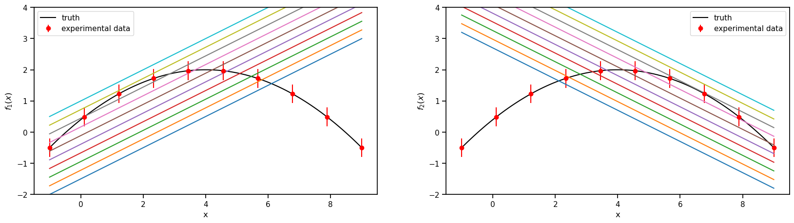

Linear Bivariate Bayesian Model Mixing with learning of mixture weights and calibration of coleman toy models.¶
The models can be found in Coleman Thesis : https://go.exlibris.link/3fVZCfhl
This notebook shows how to use the Bayesian model mixing package Taweret for a toy problem.
Author : Dan Liyanage
Date : 11/13/2022
Steps for linear BMM¶
1. Get Models with a prediction method
2. Choose a Mixing method
3. Estimate the mixture weights (parameters in the mixture function) with user defined calibration method
To execute each step in this notebook we need to import the following from Taweret.
[1]:
import sys
# You will have to change the following imports depending on where you have
# the packages installed
sys.path.append("/Users/dananjayaliyanage/git/Taweret")
# For plotting
import matplotlib.pyplot as plt
import seaborn as sns
sns.set_context('poster')
# To define priors. (uncoment if not using default priors)
#import bilby
# For other operations
import numpy as np
[2]:
# Import models with a predict method
from Taweret.models import coleman_models as toy_models
m1 = toy_models.coleman_model_1()
m2 = toy_models.coleman_model_2()
truth = toy_models.coleman_truth()
[3]:
g = np.linspace(-1,9,10)
plot_g = np.linspace(-1,9,100)
true_output = truth.evaluate(plot_g)
exp_data = truth.evaluate(g)
1. The models and the experimental data.¶
Truth
\(f(x) = 2-0.1(x-4)^2\), where \(x \in [-1, 9]\)
Model 1
\(f_1(x,\theta)= 0.5(x+\theta)-2\) , where \(\theta \in [1, 6]\)
Model 2
\(f_2(x,\theta)= -0.5(x-\theta) + 3.7\) , where \(\theta \in [-2, 3]\)
Experimental data
sampled from the Truth with a fixed standard deviation of 0.3
[4]:
sns.set_context('notebook')
fig, axs = plt.subplots(1,2,figsize=(20,5))
prior_ranges = [(1,6), (-2,3)]
for i in range(0,2):
ax = axs.flatten()[i]
ax.plot(plot_g, true_output[0], label='truth', color='black')
ax.errorbar(g,exp_data[0],exp_data[1], fmt='o', label='experimental data', color='r')
ax.legend()
ax.set_ylim(-2,4)
for value in np.linspace(*prior_ranges[i],10):
if i==0:
predict_1 = m1.evaluate(plot_g, value)
ax.plot(plot_g, predict_1[0])
ax.set_ylabel(r'$f_1(x)$')
if i==1:
predict_2 = m2.evaluate(plot_g, value)
ax.plot(plot_g, predict_2[0])
ax.set_ylabel(r'$f_2(x)$')
ax.set_xlabel('x')

[5]:
# Mixing method
from Taweret.mix.bivariate_linear import BivariateLinear as BL
models= {'model1':m1,'model2':m2}
mix_model = BL(models_dic=models, method='cdf', nargs_model_dic={'model1':1, 'model2':1})
cdf mixing function has 2 free parameter(s)
Warning : Default prior is set to {'cdf_0': Uniform(minimum=0, maximum=1, name='cdf_0', latex_label='cdf_0', unit=None, boundary=None), 'cdf_1': Uniform(minimum=0, maximum=1, name='cdf_1', latex_label='cdf_1', unit=None, boundary=None)}
To change the prior use `set_prior` method
Using default priors for model 1
{'model1_0': Uniform(minimum=1, maximum=6, name='model1_0', latex_label='model1_0', unit=None, boundary=None)}
Using default priors for model 2
{'model2_0': Uniform(minimum=-2, maximum=3, name='model2_0', latex_label='model2_0', unit=None, boundary=None)}
[6]:
## uncoment to change the prior from the default
import bilby
priors = bilby.core.prior.PriorDict()
priors['cdf_0'] = bilby.core.prior.Normal(0, 1, name="cdf_0")
priors['cdf_1'] = bilby.core.prior.Normal(0, 1, name="cdf_1")
mix_model.set_prior(priors)
[6]:
{'cdf_0': Normal(mu=0, sigma=1, name='cdf_0', latex_label='cdf_0', unit=None, boundary=None),
'cdf_1': Normal(mu=0, sigma=1, name='cdf_1', latex_label='cdf_1', unit=None, boundary=None),
'model1_0': Uniform(minimum=1, maximum=6, name='model1_0', latex_label='model1_0', unit=None, boundary=None),
'model2_0': Uniform(minimum=-2, maximum=3, name='model2_0', latex_label='model2_0', unit=None, boundary=None)}
[7]:
mix_model.prior
[7]:
{'cdf_0': Normal(mu=0, sigma=1, name='cdf_0', latex_label='cdf_0', unit=None, boundary=None),
'cdf_1': Normal(mu=0, sigma=1, name='cdf_1', latex_label='cdf_1', unit=None, boundary=None),
'model1_0': Uniform(minimum=1, maximum=6, name='model1_0', latex_label='model1_0', unit=None, boundary=None),
'model2_0': Uniform(minimum=-2, maximum=3, name='model2_0', latex_label='model2_0', unit=None, boundary=None)}
[8]:
result = mix_model.train(x_exp=g, y_exp=exp_data[0], y_err=exp_data[1], label='cdf_mix', outdir='coleman')
13:19 bilby INFO : Running for label 'cdf_mix', output will be saved to 'coleman'
13:19 bilby INFO : Search parameters:
13:19 bilby INFO : cdf_0 = Normal(mu=0, sigma=1, name='cdf_0', latex_label='cdf_0', unit=None, boundary=None)
13:19 bilby INFO : cdf_1 = Normal(mu=0, sigma=1, name='cdf_1', latex_label='cdf_1', unit=None, boundary=None)
13:19 bilby INFO : model1_0 = Uniform(minimum=1, maximum=6, name='model1_0', latex_label='model1_0', unit=None, boundary=None)
13:19 bilby INFO : model2_0 = Uniform(minimum=-2, maximum=3, name='model2_0', latex_label='model2_0', unit=None, boundary=None)
13:19 bilby INFO : Single likelihood evaluation took 2.927e-04 s
13:19 bilby INFO : Using sampler Ptemcee with kwargs {'ntemps': 5, 'nwalkers': 20, 'Tmax': 100, 'betas': None, 'a': 2.0, 'adaptation_lag': 10000, 'adaptation_time': 100, 'random': None, 'adapt': False, 'swap_ratios': False}
13:19 bilby INFO : Using convergence inputs: ConvergenceInputs(autocorr_c=5, autocorr_tol=50, autocorr_tau=1, gradient_tau=0.1, gradient_mean_log_posterior=0.1, Q_tol=1.02, safety=1, burn_in_nact=50, burn_in_fixed_discard=200, mean_logl_frac=0.01, thin_by_nact=0.5, nsamples=5000, ignore_keys_for_tau=None, min_tau=1, niterations_per_check=5)
The following Default settings for sampler will be used. You can changethese arguments by providing kwargs_for_sampler argement in `train`.Check Bilby documentation for other sampling options.
{'sampler': 'ptemcee', 'ntemps': 5, 'nwalkers': 20, 'Tmax': 100, 'burn_in_fixed_discard': 200, 'nsamples': 5000, 'threads': 6}
13:19 bilby INFO : Generating pos0 samples
13:19 bilby INFO : Starting to sample
1|0:00:00|nc:5.0e+02|a0:0.20-0.80|swp:0.26-0.70|n:nan<5000|t!nan(+nan,+nan)|q:inf|0.24ms/ev
2|0:00:00|nc:1.0e+03|a0:0.30-0.80|swp:0.16-0.64|n:nan<5000|t!nan(+nan,+nan)|q:inf|0.27ms/ev
3|0:00:00|nc:1.5e+03|a0:0.33-0.67|swp:0.13-0.61|n:nan<5000|t!nan(+nan,+nan)|q:inf|0.22ms/ev
4|0:00:00|nc:2.0e+03|a0:0.40-0.65|swp:0.12-0.62|n:nan<5000|t!nan(+nan,+nan)|q:inf|0.17ms/ev
5|0:00:00|nc:2.5e+03|a0:0.44-0.68|swp:0.13-0.64|n:nan<5000|t!nan(+nan,+nan)|q:inf|0.12ms/ev
6|0:00:00|nc:3.0e+03|a0:0.40-0.70|swp:0.15-0.64|n:nan<5000|t!nan(+nan,+nan)|q:inf|0.12ms/ev
7|0:00:00|nc:3.5e+03|a0:0.43-0.71|swp:0.15-0.62|n:nan<5000|t!nan(+nan,+nan)|q:inf|0.12ms/ev
8|0:00:00|nc:4.0e+03|a0:0.42-0.75|swp:0.16-0.63|n:nan<5000|t!nan(+nan,+nan)|q:inf|0.12ms/ev
9|0:00:00|nc:4.5e+03|a0:0.42-0.71|swp:0.17-0.62|n:nan<5000|t!nan(+nan,+nan)|q:inf|0.11ms/ev
10|0:00:00|nc:5.0e+03|a0:0.46-0.74|swp:0.17-0.62|n:nan<5000|t!nan(+nan,+nan)|q:inf|0.11ms/ev
11|0:00:00|nc:5.5e+03|a0:0.45-0.76|swp:0.17-0.61|n:nan<5000|t!nan(+nan,+nan)|q:inf|0.11ms/ev
12|0:00:00|nc:6.0e+03|a0:0.47-0.75|swp:0.18-0.61|n:nan<5000|t!nan(+nan,+nan)|q:inf|0.11ms/ev
13|0:00:00|nc:6.5e+03|a0:0.46-0.69|swp:0.19-0.61|n:nan<5000|t!nan(+nan,+nan)|q:inf|0.11ms/ev
14|0:00:00|nc:7.0e+03|a0:0.47-0.69|swp:0.20-0.61|n:nan<5000|t!nan(+nan,+nan)|q:inf|0.12ms/ev
15|0:00:01|nc:7.5e+03|a0:0.48-0.71|swp:0.21-0.60|n:nan<5000|t!nan(+nan,+nan)|q:inf|0.12ms/ev
16|0:00:01|nc:8.0e+03|a0:0.47-0.70|swp:0.21-0.61|n:nan<5000|t!nan(+nan,+nan)|q:inf|0.13ms/ev
17|0:00:01|nc:8.5e+03|a0:0.51-0.71|swp:0.21-0.61|n:nan<5000|t!nan(+nan,+nan)|q:inf|0.11ms/ev
18|0:00:01|nc:9.0e+03|a0:0.50-0.71|swp:0.20-0.62|n:nan<5000|t!nan(+nan,+nan)|q:inf|0.11ms/ev
19|0:00:01|nc:9.5e+03|a0:0.51-0.68|swp:0.21-0.62|n:nan<5000|t!nan(+nan,+nan)|q:inf|0.11ms/ev
20|0:00:01|nc:1.0e+04|a0:0.51-0.66|swp:0.22-0.62|n:nan<5000|t!nan(+nan,+nan)|q:inf|0.11ms/ev
21|0:00:01|nc:1.0e+04|a0:0.51-0.64|swp:0.22-0.63|n:nan<5000|t!nan(+nan,+nan)|q:inf|0.11ms/ev
22|0:00:01|nc:1.1e+04|a0:0.51-0.64|swp:0.22-0.63|n:nan<5000|t!nan(+nan,+nan)|q:inf|0.11ms/ev
23|0:00:01|nc:1.2e+04|a0:0.51-0.63|swp:0.22-0.63|n:nan<5000|t!nan(+nan,+nan)|q:inf|0.11ms/ev
24|0:00:01|nc:1.2e+04|a0:0.51-0.64|swp:0.23-0.64|n:nan<5000|t!nan(+nan,+nan)|q:inf|0.11ms/ev
25|0:00:01|nc:1.2e+04|a0:0.51-0.66|swp:0.22-0.64|n:nan<5000|t!nan(+nan,+nan)|q:inf|0.11ms/ev
26|0:00:01|nc:1.3e+04|a0:0.51-0.65|swp:0.23-0.64|n:nan<5000|t!nan(+nan,+nan)|q:inf|0.10ms/ev
27|0:00:01|nc:1.4e+04|a0:0.53-0.65|swp:0.23-0.65|n:nan<5000|t!nan(+nan,+nan)|q:inf|0.11ms/ev
28|0:00:01|nc:1.4e+04|a0:0.52-0.65|swp:0.23-0.65|n:nan<5000|t!nan(+nan,+nan)|q:inf|0.15ms/ev
29|0:00:01|nc:1.4e+04|a0:0.52-0.66|swp:0.23-0.65|n:nan<5000|t!nan(+nan,+nan)|q:inf|0.16ms/ev
30|0:00:01|nc:1.5e+04|a0:0.52-0.65|swp:0.23-0.65|n:nan<5000|t!nan(+nan,+nan)|q:inf|0.15ms/ev
31|0:00:01|nc:1.6e+04|a0:0.52-0.63|swp:0.23-0.65|n:nan<5000|t!nan(+nan,+nan)|q:inf|0.11ms/ev
32|0:00:02|nc:1.6e+04|a0:0.53-0.64|swp:0.23-0.66|n:nan<5000|t!nan(+nan,+nan)|q:inf|0.10ms/ev
33|0:00:02|nc:1.6e+04|a0:0.53-0.64|swp:0.23-0.66|n:nan<5000|t!nan(+nan,+nan)|q:inf|0.10ms/ev
34|0:00:02|nc:1.7e+04|a0:0.53-0.62|swp:0.23-0.66|n:nan<5000|t!nan(+nan,+nan)|q:inf|0.10ms/ev
35|0:00:02|nc:1.8e+04|a0:0.53-0.63|swp:0.23-0.66|n:nan<5000|t!nan(+nan,+nan)|q:inf|0.10ms/ev
36|0:00:02|nc:1.8e+04|a0:0.53-0.63|swp:0.23-0.66|n:nan<5000|t!nan(+nan,+nan)|q:inf|0.10ms/ev
37|0:00:02|nc:1.8e+04|a0:0.53-0.63|swp:0.23-0.66|n:nan<5000|t!nan(+nan,+nan)|q:inf|0.10ms/ev
38|0:00:02|nc:1.9e+04|a0:0.53-0.63|swp:0.23-0.67|n:nan<5000|t!nan(+nan,+nan)|q:inf|0.10ms/ev
39|0:00:02|nc:2.0e+04|a0:0.53-0.63|swp:0.23-0.67|n:nan<5000|t!nan(+nan,+nan)|q:inf|0.10ms/ev
40|0:00:02|nc:2.0e+04|a0:0.54-0.63|swp:0.23-0.67|n:nan<5000|t!nan(+nan,+nan)|q:inf|0.10ms/ev
41|0:00:02|nc:2.0e+04|a0:0.53-0.64|swp:0.23-0.67|n:nan<5000|t!nan(+nan,+nan)|q:inf|0.10ms/ev
42|0:00:02|nc:2.1e+04|a0:0.52-0.64|swp:0.23-0.67|n:nan<5000|t!nan(+nan,+nan)|q:inf|0.10ms/ev
43|0:00:02|nc:2.2e+04|a0:0.52-0.64|swp:0.23-0.67|n:nan<5000|t!nan(+nan,+nan)|q:inf|0.10ms/ev
44|0:00:02|nc:2.2e+04|a0:0.52-0.64|swp:0.23-0.68|n:nan<5000|t!nan(+nan,+nan)|q:inf|0.10ms/ev
45|0:00:02|nc:2.2e+04|a0:0.52-0.64|swp:0.23-0.67|n:nan<5000|t!nan(+nan,+nan)|q:inf|0.10ms/ev
46|0:00:02|nc:2.3e+04|a0:0.52-0.64|swp:0.23-0.67|n:nan<5000|t!nan(+nan,+nan)|q:inf|0.10ms/ev
47|0:00:02|nc:2.4e+04|a0:0.52-0.65|swp:0.24-0.67|n:nan<5000|t!nan(+nan,+nan)|q:inf|0.10ms/ev
48|0:00:02|nc:2.4e+04|a0:0.52-0.64|swp:0.24-0.67|n:nan<5000|t!nan(+nan,+nan)|q:inf|0.09ms/ev
49|0:00:02|nc:2.4e+04|a0:0.53-0.64|swp:0.24-0.67|n:nan<5000|t!nan(+nan,+nan)|q:inf|0.10ms/ev
50|0:00:02|nc:2.5e+04|a0:0.53-0.63|swp:0.24-0.67|n:nan<5000|t!nan(+nan,+nan)|q:inf|0.10ms/ev
51|0:00:02|nc:2.6e+04|a0:0.53-0.63|swp:0.24-0.67|n:nan<5000|t!nan(+nan,+nan)|q:inf|0.10ms/ev
52|0:00:03|nc:2.6e+04|a0:0.54-0.63|swp:0.24-0.67|n:nan<5000|t!nan(+nan,+nan)|q:inf|0.11ms/ev
53|0:00:03|nc:2.6e+04|a0:0.54-0.63|swp:0.24-0.67|n:nan<5000|t!nan(+nan,+nan)|q:inf|0.11ms/ev
54|0:00:03|nc:2.7e+04|a0:0.53-0.63|swp:0.24-0.67|n:nan<5000|t!nan(+nan,+nan)|q:inf|0.11ms/ev
55|0:00:03|nc:2.8e+04|a0:0.52-0.63|swp:0.24-0.67|n:nan<5000|t!nan(+nan,+nan)|q:inf|0.11ms/ev
56|0:00:03|nc:2.8e+04|a0:0.52-0.62|swp:0.24-0.67|n:nan<5000|t!nan(+nan,+nan)|q:inf|0.10ms/ev
57|0:00:03|nc:2.8e+04|a0:0.52-0.62|swp:0.24-0.67|n:nan<5000|t!nan(+nan,+nan)|q:inf|0.10ms/ev
58|0:00:03|nc:2.9e+04|a0:0.52-0.63|swp:0.24-0.68|n:nan<5000|t!nan(+nan,+nan)|q:inf|0.10ms/ev
59|0:00:03|nc:3.0e+04|a0:0.52-0.63|swp:0.24-0.68|n:nan<5000|t!nan(+nan,+nan)|q:inf|0.10ms/ev
60|0:00:03|nc:3.0e+04|a0:0.52-0.63|swp:0.24-0.68|n:nan<5000|t!nan(+nan,+nan)|q:inf|0.10ms/ev
61|0:00:03|nc:3.0e+04|a0:0.52-0.62|swp:0.24-0.67|n:nan<5000|t!nan(+nan,+nan)|q:inf|0.10ms/ev
62|0:00:03|nc:3.1e+04|a0:0.52-0.62|swp:0.24-0.67|n:nan<5000|t!nan(+nan,+nan)|q:inf|0.10ms/ev
63|0:00:03|nc:3.2e+04|a0:0.52-0.62|swp:0.24-0.67|n:nan<5000|t!nan(+nan,+nan)|q:inf|0.10ms/ev
64|0:00:03|nc:3.2e+04|a0:0.53-0.61|swp:0.24-0.67|n:nan<5000|t!nan(+nan,+nan)|q:inf|0.10ms/ev
65|0:00:03|nc:3.2e+04|a0:0.53-0.61|swp:0.24-0.68|n:nan<5000|t!nan(+nan,+nan)|q:inf|0.10ms/ev
66|0:00:03|nc:3.3e+04|a0:0.52-0.62|swp:0.24-0.68|n:nan<5000|t!nan(+nan,+nan)|q:inf|0.10ms/ev
67|0:00:03|nc:3.4e+04|a0:0.52-0.62|swp:0.24-0.68|n:nan<5000|t!nan(+nan,+nan)|q:inf|0.10ms/ev
68|0:00:03|nc:3.4e+04|a0:0.52-0.62|swp:0.24-0.68|n:nan<5000|t!nan(+nan,+nan)|q:inf|0.11ms/ev
69|0:00:03|nc:3.4e+04|a0:0.52-0.62|swp:0.24-0.68|n:nan<5000|t!nan(+nan,+nan)|q:inf|0.12ms/ev
70|0:00:03|nc:3.5e+04|a0:0.53-0.62|swp:0.24-0.68|n:nan<5000|t!nan(+nan,+nan)|q:inf|0.13ms/ev
71|0:00:04|nc:3.6e+04|a0:0.53-0.61|swp:0.24-0.68|n:nan<5000|t!nan(+nan,+nan)|q:inf|0.13ms/ev
72|0:00:04|nc:3.6e+04|a0:0.53-0.62|swp:0.24-0.68|n:nan<5000|t!nan(+nan,+nan)|q:inf|0.18ms/ev
73|0:00:04|nc:3.6e+04|a0:0.53-0.61|swp:0.24-0.68|n:nan<5000|t!nan(+nan,+nan)|q:inf|0.18ms/ev
74|0:00:04|nc:3.7e+04|a0:0.54-0.61|swp:0.24-0.68|n:nan<5000|t!nan(+nan,+nan)|q:inf|0.19ms/ev
75|0:00:04|nc:3.8e+04|a0:0.53-0.62|swp:0.24-0.68|n:nan<5000|t!nan(+nan,+nan)|q:inf|0.16ms/ev
76|0:00:04|nc:3.8e+04|a0:0.53-0.62|swp:0.24-0.68|n:nan<5000|t!nan(+nan,+nan)|q:inf|0.16ms/ev
77|0:00:04|nc:3.8e+04|a0:0.53-0.62|swp:0.24-0.68|n:nan<5000|t!nan(+nan,+nan)|q:inf|0.18ms/ev
78|0:00:04|nc:3.9e+04|a0:0.53-0.62|swp:0.24-0.68|n:nan<5000|t!nan(+nan,+nan)|q:inf|0.21ms/ev
79|0:00:04|nc:4.0e+04|a0:0.54-0.62|swp:0.24-0.68|n:nan<5000|t!nan(+nan,+nan)|q:inf|0.22ms/ev
80|0:00:04|nc:4.0e+04|a0:0.54-0.61|swp:0.25-0.68|n:nan<5000|t!nan(+nan,+nan)|q:inf|0.25ms/ev
81|0:00:05|nc:4.0e+04|a0:0.54-0.62|swp:0.25-0.68|n:nan<5000|t!nan(+nan,+nan)|q:inf|0.28ms/ev
82|0:00:05|nc:4.1e+04|a0:0.54-0.61|swp:0.25-0.68|n:nan<5000|t!nan(+nan,+nan)|q:inf|0.28ms/ev
83|0:00:05|nc:4.2e+04|a0:0.54-0.62|swp:0.25-0.68|n:nan<5000|t!nan(+nan,+nan)|q:inf|0.30ms/ev
84|0:00:05|nc:4.2e+04|a0:0.54-0.62|swp:0.25-0.68|n:nan<5000|t!nan(+nan,+nan)|q:inf|0.24ms/ev
85|0:00:05|nc:4.2e+04|a0:0.54-0.62|swp:0.25-0.68|n:nan<5000|t!nan(+nan,+nan)|q:inf|0.28ms/ev
86|0:00:05|nc:4.3e+04|a0:0.54-0.62|swp:0.25-0.68|n:nan<5000|t!nan(+nan,+nan)|q:inf|0.22ms/ev
87|0:00:05|nc:4.4e+04|a0:0.54-0.62|swp:0.25-0.68|n:nan<5000|t!nan(+nan,+nan)|q:inf|0.27ms/ev
88|0:00:06|nc:4.4e+04|a0:0.54-0.62|swp:0.25-0.68|n:nan<5000|t!nan(+nan,+nan)|q:inf|0.22ms/ev
89|0:00:06|nc:4.4e+04|a0:0.55-0.61|swp:0.24-0.68|n:nan<5000|t!nan(+nan,+nan)|q:inf|0.24ms/ev
90|0:00:06|nc:4.5e+04|a0:0.55-0.62|swp:0.24-0.68|n:nan<5000|t!nan(+nan,+nan)|q:inf|0.28ms/ev
91|0:00:06|nc:4.6e+04|a0:0.55-0.61|swp:0.24-0.68|n:nan<5000|t!nan(+nan,+nan)|q:inf|0.28ms/ev
92|0:00:06|nc:4.6e+04|a0:0.55-0.61|swp:0.24-0.68|n:nan<5000|t!nan(+nan,+nan)|q:inf|0.28ms/ev
93|0:00:06|nc:4.6e+04|a0:0.55-0.61|swp:0.24-0.68|n:nan<5000|t!nan(+nan,+nan)|q:inf|0.23ms/ev
94|0:00:06|nc:4.7e+04|a0:0.55-0.61|swp:0.25-0.67|n:nan<5000|t!nan(+nan,+nan)|q:inf|0.24ms/ev
95|0:00:06|nc:4.8e+04|a0:0.55-0.61|swp:0.24-0.67|n:nan<5000|t!nan(+nan,+nan)|q:inf|0.24ms/ev
96|0:00:07|nc:4.8e+04|a0:0.55-0.61|swp:0.24-0.67|n:nan<5000|t!nan(+nan,+nan)|q:inf|0.22ms/ev
97|0:00:07|nc:4.8e+04|a0:0.55-0.61|swp:0.24-0.67|n:nan<5000|t!nan(+nan,+nan)|q:inf|0.20ms/ev
98|0:00:07|nc:4.9e+04|a0:0.55-0.61|swp:0.25-0.67|n:nan<5000|t!nan(+nan,+nan)|q:inf|0.21ms/ev
99|0:00:07|nc:5.0e+04|a0:0.55-0.61|swp:0.25-0.67|n:nan<5000|t!nan(+nan,+nan)|q:inf|0.27ms/ev
100|0:00:07|nc:5.0e+04|a0:0.55-0.61|swp:0.25-0.67|n:nan<5000|t!nan(+nan,+nan)|q:inf|0.28ms/ev
101|0:00:07|nc:5.0e+04|a0:0.55-0.61|swp:0.25-0.67|n:nan<5000|t!nan(+nan,+nan)|q:inf|0.34ms/ev
102|0:00:07|nc:5.1e+04|a0:0.55-0.62|swp:0.25-0.67|n:nan<5000|t!nan(+nan,+nan)|q:inf|0.30ms/ev
103|0:00:07|nc:5.2e+04|a0:0.55-0.62|swp:0.25-0.67|n:nan<5000|t!nan(+nan,+nan)|q:inf|0.30ms/ev
104|0:00:08|nc:5.2e+04|a0:0.55-0.61|swp:0.25-0.67|n:nan<5000|t!nan(+nan,+nan)|q:inf|0.23ms/ev
105|0:00:08|nc:5.2e+04|a0:0.55-0.62|swp:0.25-0.67|n:nan<5000|t!nan(+nan,+nan)|q:inf|0.21ms/ev
106|0:00:08|nc:5.3e+04|a0:0.55-0.62|swp:0.25-0.67|n:nan<5000|t!nan(+nan,+nan)|q:inf|0.20ms/ev
107|0:00:08|nc:5.4e+04|a0:0.55-0.62|swp:0.25-0.67|n:nan<5000|t!nan(+nan,+nan)|q:inf|0.18ms/ev
108|0:00:08|nc:5.4e+04|a0:0.55-0.62|swp:0.25-0.67|n:nan<5000|t!nan(+nan,+nan)|q:inf|0.17ms/ev
109|0:00:08|nc:5.4e+04|a0:0.54-0.62|swp:0.25-0.67|n:nan<5000|t!nan(+nan,+nan)|q:inf|0.16ms/ev
110|0:00:08|nc:5.5e+04|a0:0.54-0.62|swp:0.25-0.67|n:nan<5000|t!nan(+nan,+nan)|q:inf|0.16ms/ev
111|0:00:08|nc:5.6e+04|a0:0.55-0.62|swp:0.25-0.67|n:nan<5000|t!nan(+nan,+nan)|q:inf|0.19ms/ev
112|0:00:08|nc:5.6e+04|a0:0.55-0.62|swp:0.25-0.67|n:nan<5000|t!nan(+nan,+nan)|q:inf|0.21ms/ev
113|0:00:08|nc:5.6e+04|a0:0.55-0.62|swp:0.25-0.67|n:nan<5000|t!nan(+nan,+nan)|q:inf|0.21ms/ev
114|0:00:08|nc:5.7e+04|a0:0.55-0.62|swp:0.25-0.67|n:nan<5000|t!nan(+nan,+nan)|q:inf|0.17ms/ev
115|0:00:09|nc:5.8e+04|a0:0.55-0.62|swp:0.25-0.67|n:nan<5000|t!nan(+nan,+nan)|q:inf|0.15ms/ev
116|0:00:09|nc:5.8e+04|a0:0.55-0.62|swp:0.25-0.67|n:nan<5000|t!nan(+nan,+nan)|q:inf|0.15ms/ev
117|0:00:09|nc:5.8e+04|a0:0.55-0.62|swp:0.25-0.67|n:nan<5000|t!nan(+nan,+nan)|q:inf|0.15ms/ev
118|0:00:09|nc:5.9e+04|a0:0.54-0.63|swp:0.25-0.67|n:nan<5000|t!nan(+nan,+nan)|q:inf|0.18ms/ev
119|0:00:09|nc:6.0e+04|a0:0.55-0.63|swp:0.25-0.67|n:nan<5000|t!nan(+nan,+nan)|q:inf|0.19ms/ev
120|0:00:09|nc:6.0e+04|a0:0.55-0.63|swp:0.25-0.67|n:nan<5000|t!nan(+nan,+nan)|q:inf|0.18ms/ev
121|0:00:09|nc:6.0e+04|a0:0.55-0.63|swp:0.25-0.67|n:nan<5000|t!nan(+nan,+nan)|q:inf|0.14ms/ev
122|0:00:09|nc:6.1e+04|a0:0.55-0.63|swp:0.25-0.67|n:nan<5000|t!nan(+nan,+nan)|q:inf|0.13ms/ev
123|0:00:09|nc:6.2e+04|a0:0.55-0.63|swp:0.25-0.67|n:nan<5000|t!nan(+nan,+nan)|q:inf|0.12ms/ev
124|0:00:09|nc:6.2e+04|a0:0.55-0.63|swp:0.25-0.67|n:nan<5000|t!nan(+nan,+nan)|q:inf|0.13ms/ev
125|0:00:09|nc:6.2e+04|a0:0.55-0.63|swp:0.25-0.67|n:nan<5000|t!nan(+nan,+nan)|q:inf|0.13ms/ev
126|0:00:09|nc:6.3e+04|a0:0.55-0.63|swp:0.25-0.67|n:nan<5000|t!nan(+nan,+nan)|q:inf|0.12ms/ev
127|0:00:09|nc:6.4e+04|a0:0.54-0.63|swp:0.25-0.67|n:nan<5000|t!nan(+nan,+nan)|q:inf|0.13ms/ev
128|0:00:09|nc:6.4e+04|a0:0.55-0.63|swp:0.25-0.67|n:nan<5000|t!nan(+nan,+nan)|q:inf|0.12ms/ev
129|0:00:10|nc:6.4e+04|a0:0.55-0.63|swp:0.25-0.67|n:nan<5000|t!nan(+nan,+nan)|q:inf|0.12ms/ev
130|0:00:10|nc:6.5e+04|a0:0.54-0.63|swp:0.25-0.67|n:nan<5000|t!nan(+nan,+nan)|q:inf|0.11ms/ev
131|0:00:10|nc:6.6e+04|a0:0.55-0.63|swp:0.25-0.67|n:nan<5000|t!nan(+nan,+nan)|q:inf|0.11ms/ev
132|0:00:10|nc:6.6e+04|a0:0.55-0.63|swp:0.25-0.67|n:nan<5000|t!nan(+nan,+nan)|q:inf|0.11ms/ev
133|0:00:10|nc:6.6e+04|a0:0.54-0.63|swp:0.25-0.67|n:nan<5000|t!nan(+nan,+nan)|q:inf|0.12ms/ev
134|0:00:10|nc:6.7e+04|a0:0.54-0.63|swp:0.25-0.67|n:nan<5000|t!nan(+nan,+nan)|q:inf|0.12ms/ev
135|0:00:10|nc:6.8e+04|a0:0.54-0.63|swp:0.25-0.67|n:nan<5000|t!nan(+nan,+nan)|q:inf|0.12ms/ev
136|0:00:10|nc:6.8e+04|a0:0.54-0.63|swp:0.25-0.67|n:nan<5000|t!nan(+nan,+nan)|q:inf|0.12ms/ev
137|0:00:10|nc:6.8e+04|a0:0.54-0.63|swp:0.25-0.67|n:nan<5000|t!nan(+nan,+nan)|q:inf|0.12ms/ev
138|0:00:10|nc:6.9e+04|a0:0.54-0.63|swp:0.25-0.67|n:nan<5000|t!nan(+nan,+nan)|q:inf|0.12ms/ev
139|0:00:10|nc:7.0e+04|a0:0.54-0.63|swp:0.25-0.67|n:nan<5000|t!nan(+nan,+nan)|q:inf|0.12ms/ev
140|0:00:10|nc:7.0e+04|a0:0.54-0.63|swp:0.25-0.67|n:nan<5000|t!nan(+nan,+nan)|q:inf|0.12ms/ev
141|0:00:10|nc:7.0e+04|a0:0.54-0.63|swp:0.25-0.67|n:nan<5000|t!nan(+nan,+nan)|q:inf|0.12ms/ev
142|0:00:10|nc:7.1e+04|a0:0.54-0.62|swp:0.25-0.67|n:nan<5000|t!nan(+nan,+nan)|q:inf|0.11ms/ev
143|0:00:10|nc:7.2e+04|a0:0.54-0.62|swp:0.25-0.67|n:nan<5000|t!nan(+nan,+nan)|q:inf|0.12ms/ev
144|0:00:10|nc:7.2e+04|a0:0.54-0.62|swp:0.25-0.67|n:nan<5000|t!nan(+nan,+nan)|q:inf|0.12ms/ev
145|0:00:10|nc:7.2e+04|a0:0.54-0.62|swp:0.25-0.67|n:nan<5000|t!nan(+nan,+nan)|q:inf|0.12ms/ev
146|0:00:11|nc:7.3e+04|a0:0.54-0.62|swp:0.25-0.67|n:nan<5000|t!nan(+nan,+nan)|q:inf|0.11ms/ev
147|0:00:11|nc:7.4e+04|a0:0.55-0.62|swp:0.25-0.67|n:nan<5000|t!nan(+nan,+nan)|q:inf|0.11ms/ev
148|0:00:11|nc:7.4e+04|a0:0.54-0.62|swp:0.25-0.67|n:nan<5000|t!nan(+nan,+nan)|q:inf|0.11ms/ev
149|0:00:11|nc:7.4e+04|a0:0.55-0.62|swp:0.25-0.67|n:nan<5000|t!nan(+nan,+nan)|q:inf|0.11ms/ev
150|0:00:11|nc:7.5e+04|a0:0.55-0.62|swp:0.25-0.67|n:nan<5000|t!nan(+nan,+nan)|q:inf|0.11ms/ev
151|0:00:11|nc:7.6e+04|a0:0.55-0.62|swp:0.25-0.67|n:nan<5000|t!nan(+nan,+nan)|q:inf|0.11ms/ev
152|0:00:11|nc:7.6e+04|a0:0.55-0.62|swp:0.25-0.67|n:nan<5000|t!nan(+nan,+nan)|q:inf|0.11ms/ev
153|0:00:11|nc:7.6e+04|a0:0.55-0.62|swp:0.25-0.67|n:nan<5000|t!nan(+nan,+nan)|q:inf|0.11ms/ev
154|0:00:11|nc:7.7e+04|a0:0.55-0.62|swp:0.25-0.67|n:nan<5000|t!nan(+nan,+nan)|q:inf|0.11ms/ev
155|0:00:11|nc:7.8e+04|a0:0.55-0.62|swp:0.25-0.67|n:nan<5000|t!nan(+nan,+nan)|q:inf|0.11ms/ev
156|0:00:11|nc:7.8e+04|a0:0.55-0.62|swp:0.25-0.67|n:nan<5000|t!nan(+nan,+nan)|q:inf|0.11ms/ev
157|0:00:11|nc:7.8e+04|a0:0.55-0.62|swp:0.25-0.67|n:nan<5000|t!nan(+nan,+nan)|q:inf|0.11ms/ev
158|0:00:11|nc:7.9e+04|a0:0.55-0.62|swp:0.25-0.67|n:nan<5000|t!nan(+nan,+nan)|q:inf|0.11ms/ev
159|0:00:11|nc:8.0e+04|a0:0.55-0.63|swp:0.25-0.67|n:nan<5000|t!nan(+nan,+nan)|q:inf|0.11ms/ev
160|0:00:11|nc:8.0e+04|a0:0.55-0.63|swp:0.25-0.67|n:nan<5000|t!nan(+nan,+nan)|q:inf|0.11ms/ev
161|0:00:11|nc:8.0e+04|a0:0.55-0.63|swp:0.25-0.67|n:nan<5000|t!nan(+nan,+nan)|q:inf|0.11ms/ev
162|0:00:11|nc:8.1e+04|a0:0.55-0.63|swp:0.25-0.67|n:nan<5000|t!nan(+nan,+nan)|q:inf|0.11ms/ev
163|0:00:11|nc:8.2e+04|a0:0.55-0.63|swp:0.25-0.67|n:nan<5000|t!nan(+nan,+nan)|q:inf|0.11ms/ev
164|0:00:12|nc:8.2e+04|a0:0.55-0.63|swp:0.25-0.67|n:nan<5000|t!nan(+nan,+nan)|q:inf|0.11ms/ev
165|0:00:12|nc:8.2e+04|a0:0.55-0.63|swp:0.25-0.67|n:nan<5000|t!nan(+nan,+nan)|q:inf|0.11ms/ev
166|0:00:12|nc:8.3e+04|a0:0.55-0.63|swp:0.25-0.67|n:nan<5000|t!nan(+nan,+nan)|q:inf|0.11ms/ev
167|0:00:12|nc:8.4e+04|a0:0.55-0.63|swp:0.25-0.67|n:nan<5000|t!nan(+nan,+nan)|q:inf|0.11ms/ev
168|0:00:12|nc:8.4e+04|a0:0.55-0.63|swp:0.25-0.66|n:nan<5000|t!nan(+nan,+nan)|q:inf|0.11ms/ev
169|0:00:12|nc:8.4e+04|a0:0.55-0.63|swp:0.25-0.66|n:nan<5000|t!nan(+nan,+nan)|q:inf|0.11ms/ev
170|0:00:12|nc:8.5e+04|a0:0.55-0.63|swp:0.25-0.66|n:nan<5000|t!nan(+nan,+nan)|q:inf|0.11ms/ev
171|0:00:12|nc:8.6e+04|a0:0.55-0.63|swp:0.25-0.66|n:nan<5000|t!nan(+nan,+nan)|q:inf|0.11ms/ev
172|0:00:12|nc:8.6e+04|a0:0.55-0.63|swp:0.25-0.66|n:nan<5000|t!nan(+nan,+nan)|q:inf|0.11ms/ev
173|0:00:12|nc:8.6e+04|a0:0.55-0.63|swp:0.25-0.66|n:nan<5000|t!nan(+nan,+nan)|q:inf|0.11ms/ev
174|0:00:12|nc:8.7e+04|a0:0.55-0.63|swp:0.25-0.66|n:nan<5000|t!nan(+nan,+nan)|q:inf|0.11ms/ev
175|0:00:12|nc:8.8e+04|a0:0.55-0.63|swp:0.25-0.66|n:nan<5000|t!nan(+nan,+nan)|q:inf|0.11ms/ev
176|0:00:12|nc:8.8e+04|a0:0.55-0.63|swp:0.25-0.66|n:nan<5000|t!nan(+nan,+nan)|q:inf|0.11ms/ev
177|0:00:12|nc:8.8e+04|a0:0.55-0.63|swp:0.25-0.66|n:nan<5000|t!nan(+nan,+nan)|q:inf|0.11ms/ev
178|0:00:12|nc:8.9e+04|a0:0.55-0.63|swp:0.25-0.66|n:nan<5000|t!nan(+nan,+nan)|q:inf|0.11ms/ev
179|0:00:12|nc:9.0e+04|a0:0.55-0.63|swp:0.25-0.66|n:nan<5000|t!nan(+nan,+nan)|q:inf|0.11ms/ev
180|0:00:12|nc:9.0e+04|a0:0.55-0.63|swp:0.25-0.66|n:nan<5000|t!nan(+nan,+nan)|q:inf|0.11ms/ev
181|0:00:12|nc:9.0e+04|a0:0.55-0.63|swp:0.25-0.66|n:nan<5000|t!nan(+nan,+nan)|q:inf|0.11ms/ev
182|0:00:13|nc:9.1e+04|a0:0.55-0.63|swp:0.25-0.66|n:nan<5000|t!nan(+nan,+nan)|q:inf|0.11ms/ev
183|0:00:13|nc:9.2e+04|a0:0.55-0.63|swp:0.25-0.66|n:nan<5000|t!nan(+nan,+nan)|q:inf|0.11ms/ev
184|0:00:13|nc:9.2e+04|a0:0.55-0.63|swp:0.25-0.66|n:nan<5000|t!nan(+nan,+nan)|q:inf|0.11ms/ev
185|0:00:13|nc:9.2e+04|a0:0.55-0.63|swp:0.25-0.66|n:nan<5000|t!nan(+nan,+nan)|q:inf|0.11ms/ev
186|0:00:13|nc:9.3e+04|a0:0.55-0.63|swp:0.25-0.66|n:nan<5000|t!nan(+nan,+nan)|q:inf|0.11ms/ev
187|0:00:13|nc:9.4e+04|a0:0.55-0.63|swp:0.25-0.66|n:nan<5000|t!nan(+nan,+nan)|q:inf|0.11ms/ev
188|0:00:13|nc:9.4e+04|a0:0.55-0.63|swp:0.25-0.66|n:nan<5000|t!nan(+nan,+nan)|q:inf|0.11ms/ev
189|0:00:13|nc:9.4e+04|a0:0.55-0.63|swp:0.25-0.66|n:nan<5000|t!nan(+nan,+nan)|q:inf|0.11ms/ev
190|0:00:13|nc:9.5e+04|a0:0.55-0.62|swp:0.25-0.66|n:nan<5000|t!nan(+nan,+nan)|q:inf|0.11ms/ev
191|0:00:13|nc:9.6e+04|a0:0.55-0.63|swp:0.25-0.66|n:nan<5000|t!nan(+nan,+nan)|q:inf|0.11ms/ev
192|0:00:13|nc:9.6e+04|a0:0.55-0.63|swp:0.25-0.66|n:nan<5000|t!nan(+nan,+nan)|q:inf|0.11ms/ev
193|0:00:13|nc:9.6e+04|a0:0.55-0.63|swp:0.25-0.66|n:nan<5000|t!nan(+nan,+nan)|q:inf|0.11ms/ev
194|0:00:13|nc:9.7e+04|a0:0.55-0.62|swp:0.25-0.66|n:nan<5000|t!nan(+nan,+nan)|q:inf|0.11ms/ev
195|0:00:13|nc:9.8e+04|a0:0.55-0.63|swp:0.26-0.66|n:nan<5000|t!nan(+nan,+nan)|q:inf|0.11ms/ev
196|0:00:13|nc:9.8e+04|a0:0.56-0.63|swp:0.26-0.66|n:nan<5000|t!nan(+nan,+nan)|q:inf|0.13ms/ev
197|0:00:13|nc:9.8e+04|a0:0.56-0.63|swp:0.26-0.66|n:nan<5000|t!nan(+nan,+nan)|q:inf|0.13ms/ev
198|0:00:13|nc:9.9e+04|a0:0.55-0.63|swp:0.26-0.66|n:nan<5000|t!nan(+nan,+nan)|q:inf|0.13ms/ev
199|0:00:14|nc:1.0e+05|a0:0.55-0.63|swp:0.25-0.66|n:nan<5000|t!nan(+nan,+nan)|q:inf|0.11ms/ev
200|0:00:14|nc:1.0e+05|a0:0.56-0.63|swp:0.25-0.66|n:nan<5000|t!nan(+nan,+nan)|q:inf|0.11ms/ev
201|0:00:14|nc:1.0e+05|a0:0.55-0.63|swp:0.26-0.66|n:nan<5000|t!nan(+nan,+nan)|q:inf|0.11ms/ev
202|0:00:14|nc:1.0e+05|a0:0.56-0.63|swp:0.26-0.66|n:nan<5000|t!nan(+nan,+nan)|q:inf|0.11ms/ev
203|0:00:14|nc:1.0e+05|a0:0.56-0.63|swp:0.26-0.66|n:nan<5000|t!nan(+nan,+nan)|q:inf|0.11ms/ev
204|0:00:14|nc:1.0e+05|a0:0.55-0.63|swp:0.26-0.66|n:nan<5000|t!nan(+nan,+nan)|q:inf|0.11ms/ev
205|0:00:14|nc:1.0e+05|a0:0.55-0.62|swp:0.26-0.66|n:nan<5000|t!nan(+nan,+nan)|q:inf|0.11ms/ev
206|0:00:14|nc:1.0e+05|a0:0.55-0.62|swp:0.25-0.66|n:nan<5000|t!nan(+nan,+nan)|q:inf|0.11ms/ev
207|0:00:14|nc:1.0e+05|a0:0.55-0.63|swp:0.25-0.66|n:nan<5000|t!nan(+nan,+nan)|q:inf|0.12ms/ev
208|0:00:14|nc:1.0e+05|a0:0.55-0.62|swp:0.25-0.66|n:nan<5000|t!nan(+nan,+nan)|q:inf|0.13ms/ev
209|0:00:14|nc:1.0e+05|a0:0.55-0.62|swp:0.25-0.66|n:nan<5000|t!nan(+nan,+nan)|q:inf|0.12ms/ev
210|0:00:14|nc:1.0e+05|a0:0.55-0.62|swp:0.25-0.66|n:nan<5000|t!nan(+nan,+nan)|q:inf|0.12ms/ev
211|0:00:14|nc:1.1e+05|a0:0.55-0.62|swp:0.25-0.66|n:nan<5000|t!nan(+nan,+nan)|q:inf|0.12ms/ev
212|0:00:14|nc:1.1e+05|a0:0.55-0.62|swp:0.25-0.66|n:nan<5000|t!nan(+nan,+nan)|q:inf|0.12ms/ev
213|0:00:14|nc:1.1e+05|a0:0.55-0.62|swp:0.25-0.66|n:nan<5000|t!nan(+nan,+nan)|q:inf|0.13ms/ev
214|0:00:14|nc:1.1e+05|a0:0.55-0.62|swp:0.25-0.66|n:nan<5000|t!nan(+nan,+nan)|q:inf|0.13ms/ev
215|0:00:14|nc:1.1e+05|a0:0.55-0.62|swp:0.25-0.66|n:nan<5000|t!nan(+nan,+nan)|q:inf|0.13ms/ev
216|0:00:15|nc:1.1e+05|a0:0.56-0.62|swp:0.25-0.66|n:nan<5000|t!nan(+nan,+nan)|q:inf|0.12ms/ev
217|0:00:15|nc:1.1e+05|a0:0.56-0.62|swp:0.25-0.66|n:nan<5000|t!nan(+nan,+nan)|q:inf|0.13ms/ev
218|0:00:15|nc:1.1e+05|a0:0.56-0.62|swp:0.25-0.66|n:nan<5000|t!nan(+nan,+nan)|q:inf|0.12ms/ev
219|0:00:15|nc:1.1e+05|a0:0.56-0.62|swp:0.25-0.66|n:nan<5000|t!nan(+nan,+nan)|q:inf|0.12ms/ev
220|0:00:15|nc:1.1e+05|a0:0.56-0.62|swp:0.25-0.66|n:nan<5000|t!nan(+nan,+nan)|q:inf|0.12ms/ev
221|0:00:15|nc:1.1e+05|a0:0.56-0.62|swp:0.25-0.66|n:-580<5000|t!1(+nan,+0.06)|q:1.03|0.11ms/ev
222|0:00:15|nc:1.1e+05|a0:0.56-0.62|swp:0.25-0.66|n:-560<5000|t!1(+nan,+0.10)|q:1.03|0.16ms/ev
223|0:00:15|nc:1.1e+05|a0:0.56-0.62|swp:0.25-0.66|n:-1540<5000|t!2(+nan,+0.07)|q:1.02|0.17ms/ev
224|0:00:15|nc:1.1e+05|a0:0.56-0.62|swp:0.25-0.66|n:-1520<5000|t!2(+nan,+0.08)|q:1.02|0.17ms/ev
225|0:00:15|nc:1.1e+05|a0:0.56-0.62|swp:0.26-0.66|n:-1500<5000|t!2(+nan,+0.07)|q:1.02|0.13ms/ev
226|0:00:15|nc:1.1e+05|a0:0.56-0.62|swp:0.26-0.66|n:-1480<5000|t!2(+nan,+0.04)|q:1.02|0.13ms/ev
227|0:00:15|nc:1.1e+05|a0:0.56-0.62|swp:0.26-0.66|n:-1460<5000|t!2(+nan,+0.07)|q:1.02|0.13ms/ev
228|0:00:15|nc:1.1e+05|a0:0.55-0.62|swp:0.26-0.66|n:-1440<5000|t!2(+nan,+0.03)|q:1.02|0.13ms/ev
229|0:00:15|nc:1.1e+05|a0:0.55-0.62|swp:0.25-0.66|n:-1420<5000|t!2(+nan,+0.09)|q:1.02|0.13ms/ev
230|0:00:15|nc:1.2e+05|a0:0.55-0.62|swp:0.26-0.66|n:-1400<5000|t!2(+nan,+0.11)|q:1.03|0.13ms/ev
231|0:00:16|nc:1.2e+05|a0:0.55-0.62|swp:0.26-0.66|n:-1380<5000|t!2(+nan,+0.14)|q:1.02|0.13ms/ev
232|0:00:16|nc:1.2e+05|a0:0.55-0.62|swp:0.26-0.66|n:-1360<5000|t!2(+nan,+0.08)|q:1.02|0.13ms/ev
233|0:00:16|nc:1.2e+05|a0:0.55-0.62|swp:0.26-0.66|n:-1340<5000|t!2(+nan,+0.07)|q:1.02|0.13ms/ev
234|0:00:16|nc:1.2e+05|a0:0.55-0.62|swp:0.26-0.66|n:-1320<5000|t!2(+nan,+0.04)|q:1.02|0.13ms/ev
235|0:00:16|nc:1.2e+05|a0:0.55-0.62|swp:0.26-0.66|n:-1300<5000|t!2(+nan,+0.04)|q:1.02|0.13ms/ev
236|0:00:16|nc:1.2e+05|a0:0.55-0.62|swp:0.26-0.66|n:-1280<5000|t!2(+nan,+0.04)|q:1.02|0.13ms/ev
237|0:00:16|nc:1.2e+05|a0:0.55-0.62|swp:0.26-0.66|n:-1260<5000|t!2(+nan,+0.05)|q:1.02|0.14ms/ev
238|0:00:16|nc:1.2e+05|a0:0.55-0.62|swp:0.26-0.66|n:-1240<5000|t!2(+nan,+0.08)|q:1.02|0.14ms/ev
239|0:00:16|nc:1.2e+05|a0:0.55-0.62|swp:0.26-0.66|n:-1220<5000|t!2(+nan,+0.11)|q:1.02|0.14ms/ev
240|0:00:16|nc:1.2e+05|a0:0.56-0.62|swp:0.26-0.66|n:-1200<5000|t!2(+nan,+0.08)|q:1.02|0.13ms/ev
241|0:00:16|nc:1.2e+05|a0:0.55-0.61|swp:0.26-0.66|n:-1180<5000|t!2(+nan,+0.06)|q:1.02|0.13ms/ev
242|0:00:16|nc:1.2e+05|a0:0.55-0.61|swp:0.26-0.66|n:-1160<5000|t!2(+nan,+0.07)|q:1.01|0.13ms/ev
243|0:00:16|nc:1.2e+05|a0:0.55-0.62|swp:0.26-0.66|n:-1140<5000|t!2(+nan,+0.05)|q:1.01|0.13ms/ev
244|0:00:16|nc:1.2e+05|a0:0.55-0.62|swp:0.26-0.66|n:-1120<5000|t!2(+nan,+0.05)|q:1.01|0.13ms/ev
245|0:00:16|nc:1.2e+05|a0:0.56-0.61|swp:0.26-0.66|n:-1100<5000|t!2(+nan,+0.04)|q:1.01|0.13ms/ev
246|0:00:17|nc:1.2e+05|a0:0.56-0.61|swp:0.26-0.66|n:-1080<5000|t!2(+nan,+0.06)|q:1.01|0.13ms/ev
247|0:00:17|nc:1.2e+05|a0:0.56-0.61|swp:0.25-0.66|n:-1060<5000|t!2(+nan,+0.04)|q:1.01|0.13ms/ev
248|0:00:17|nc:1.2e+05|a0:0.56-0.61|swp:0.25-0.66|n:-1040<5000|t!2(+nan,+0.05)|q:1.01|0.13ms/ev
249|0:00:17|nc:1.2e+05|a0:0.56-0.61|swp:0.25-0.66|n:-1020<5000|t!2(+nan,+0.06)|q:1.01|0.13ms/ev
250|0:00:17|nc:1.2e+05|a0:0.56-0.61|swp:0.25-0.66|n:-1000<5000|t!2(+nan,+0.03)|q:1.01|0.13ms/ev
251|0:00:17|nc:1.3e+05|a0:0.56-0.61|swp:0.25-0.66|n:-980<5000|t!2(+nan,+0.03)|q:1.01|0.13ms/ev
252|0:00:17|nc:1.3e+05|a0:0.56-0.61|swp:0.25-0.66|n:-960<5000|t!2(+nan,+0.05)|q:1.01|0.13ms/ev
253|0:00:17|nc:1.3e+05|a0:0.56-0.61|swp:0.26-0.66|n:-940<5000|t!2(+nan,+0.07)|q:1.01|0.13ms/ev
254|0:00:17|nc:1.3e+05|a0:0.56-0.61|swp:0.26-0.66|n:-920<5000|t!2(+nan,+0.06)|q:1.01|0.13ms/ev
255|0:00:17|nc:1.3e+05|a0:0.56-0.61|swp:0.26-0.66|n:-900<5000|t!2(+nan,+0.09)|q:1.01|0.13ms/ev
256|0:00:17|nc:1.3e+05|a0:0.56-0.61|swp:0.26-0.66|n:-880<5000|t!2(+nan,+0.12)|q:1.01|0.13ms/ev
257|0:00:17|nc:1.3e+05|a0:0.56-0.61|swp:0.26-0.66|n:-860<5000|t!2(+nan,+0.12)|q:1.01|0.13ms/ev
258|0:00:17|nc:1.3e+05|a0:0.56-0.61|swp:0.25-0.66|n:-840<5000|t!2(+nan,+0.08)|q:1.01|0.13ms/ev
259|0:00:17|nc:1.3e+05|a0:0.56-0.61|swp:0.25-0.66|n:-820<5000|t!2(+nan,+0.02)|q:1.01|0.12ms/ev
260|0:00:17|nc:1.3e+05|a0:0.56-0.62|swp:0.25-0.66|n:-800<5000|t!2(+nan,+0.02)|q:1.01|0.13ms/ev
261|0:00:18|nc:1.3e+05|a0:0.56-0.62|swp:0.25-0.66|n:-780<5000|t!2(+nan,+0.02)|q:1.01|0.13ms/ev
262|0:00:18|nc:1.3e+05|a0:0.56-0.62|swp:0.25-0.66|n:-760<5000|t!2(+0.05,+0.03)|q:1.01|0.13ms/ev
263|0:00:18|nc:1.3e+05|a0:0.56-0.62|swp:0.26-0.66|n:-740<5000|t!2(+0.04,+0.02)|q:1.01|0.13ms/ev
264|0:00:18|nc:1.3e+05|a0:0.56-0.62|swp:0.26-0.66|n:-720<5000|t!2(+0.04,+0.04)|q:1.01|0.12ms/ev
265|0:00:18|nc:1.3e+05|a0:0.56-0.62|swp:0.26-0.66|n:-700<5000|t!2(+0.04,+0.06)|q:1.01|0.13ms/ev
266|0:00:18|nc:1.3e+05|a0:0.56-0.62|swp:0.26-0.66|n:-680<5000|t!2(+0.05,+0.07)|q:1.01|0.13ms/ev
267|0:00:18|nc:1.3e+05|a0:0.56-0.62|swp:0.26-0.66|n:-660<5000|t!2(+0.04,+0.12)|q:1.01|0.13ms/ev
268|0:00:18|nc:1.3e+05|a0:0.56-0.62|swp:0.26-0.66|n:-640<5000|t!2(+0.05,+0.07)|q:1.01|0.13ms/ev
269|0:00:18|nc:1.3e+05|a0:0.56-0.61|swp:0.26-0.66|n:-620<5000|t!2(+0.05,+0.08)|q:1.01|0.12ms/ev
270|0:00:18|nc:1.4e+05|a0:0.56-0.62|swp:0.26-0.66|n:-600<5000|t!2(+0.06,+0.10)|q:1.01|0.12ms/ev
271|0:00:18|nc:1.4e+05|a0:0.56-0.61|swp:0.26-0.66|n:-580<5000|t!2(+0.07,+0.09)|q:1.01|0.13ms/ev
272|0:00:18|nc:1.4e+05|a0:0.56-0.62|swp:0.26-0.66|n:-560<5000|t!2(+0.06,+0.11)|q:1.01|0.13ms/ev
273|0:00:18|nc:1.4e+05|a0:0.56-0.62|swp:0.26-0.66|n:-540<5000|t!2(+0.04,+0.10)|q:1.01|0.13ms/ev
274|0:00:18|nc:1.4e+05|a0:0.56-0.62|swp:0.26-0.66|n:-520<5000|t!2(+0.04,+0.07)|q:1.01|0.13ms/ev
275|0:00:18|nc:1.4e+05|a0:0.56-0.62|swp:0.26-0.66|n:-500<5000|t!2(+0.04,+0.07)|q:1.01|0.13ms/ev
276|0:00:18|nc:1.4e+05|a0:0.56-0.62|swp:0.26-0.67|n:-480<5000|t!2(+0.04,+0.10)|q:1.01|0.13ms/ev
277|0:00:19|nc:1.4e+05|a0:0.56-0.62|swp:0.26-0.67|n:-460<5000|t!2(+0.04,+0.08)|q:1.01|0.13ms/ev
278|0:00:19|nc:1.4e+05|a0:0.56-0.62|swp:0.26-0.67|n:-440<5000|t!2(+0.04,+0.08)|q:1.01|0.13ms/ev
279|0:00:19|nc:1.4e+05|a0:0.56-0.62|swp:0.26-0.67|n:-420<5000|t!2(+0.04,+0.08)|q:1.01|0.13ms/ev
280|0:00:19|nc:1.4e+05|a0:0.56-0.62|swp:0.26-0.67|n:-400<5000|t!2(+0.06,+0.08)|q:1.01|0.13ms/ev
281|0:00:19|nc:1.4e+05|a0:0.56-0.62|swp:0.26-0.67|n:-380<5000|t!2(+0.08,+0.06)|q:1.01|0.13ms/ev
282|0:00:19|nc:1.4e+05|a0:0.56-0.62|swp:0.26-0.67|n:-360<5000|t!2(+0.08,+0.02)|q:1.01|0.13ms/ev
283|0:00:19|nc:1.4e+05|a0:0.56-0.62|swp:0.26-0.67|n:-340<5000|t!2(+0.07,+0.02)|q:1.01|0.14ms/ev
284|0:00:19|nc:1.4e+05|a0:0.56-0.62|swp:0.26-0.67|n:-320<5000|t!2(+0.07,+0.06)|q:1.01|0.14ms/ev
285|0:00:19|nc:1.4e+05|a0:0.56-0.62|swp:0.26-0.67|n:-300<5000|t!2(+0.05,+0.09)|q:1.01|0.13ms/ev
286|0:00:19|nc:1.4e+05|a0:0.55-0.62|swp:0.26-0.67|n:-280<5000|t!2(+0.04,+0.07)|q:1.01|0.13ms/ev
287|0:00:19|nc:1.4e+05|a0:0.55-0.62|swp:0.26-0.67|n:-260<5000|t!2(+0.03,+0.07)|q:1.01|0.13ms/ev
288|0:00:19|nc:1.4e+05|a0:0.55-0.62|swp:0.26-0.67|n:-240<5000|t!2(+0.03,+0.05)|q:1.01|0.13ms/ev
289|0:00:19|nc:1.4e+05|a0:0.55-0.61|swp:0.26-0.67|n:-220<5000|t!2(+0.03,+0.04)|q:1.01|0.13ms/ev
290|0:00:19|nc:1.4e+05|a0:0.56-0.61|swp:0.26-0.67|n:-200<5000|t!2(+0.03,+0.02)|q:1.01|0.13ms/ev
291|0:00:19|nc:1.5e+05|a0:0.56-0.61|swp:0.26-0.67|n:-180<5000|t!2(+0.03,+0.03)|q:1.01|0.16ms/ev
292|0:00:20|nc:1.5e+05|a0:0.56-0.61|swp:0.26-0.67|n:-160<5000|t!2(+0.03,+0.05)|q:1.01|0.16ms/ev
293|0:00:20|nc:1.5e+05|a0:0.56-0.61|swp:0.26-0.67|n:-140<5000|t!2(+0.05,+0.07)|q:1.01|0.16ms/ev
294|0:00:20|nc:1.5e+05|a0:0.56-0.61|swp:0.26-0.67|n:-120<5000|t!2(+0.05,+0.07)|q:1.01|0.13ms/ev
295|0:00:20|nc:1.5e+05|a0:0.56-0.61|swp:0.26-0.67|n:-100<5000|t!2(+0.06,+0.04)|q:1.01|0.13ms/ev
296|0:00:20|nc:1.5e+05|a0:0.56-0.61|swp:0.26-0.67|n:-80<5000|t!2(+0.04,+0.03)|q:1.00|0.13ms/ev
297|0:00:20|nc:1.5e+05|a0:0.56-0.61|swp:0.26-0.66|n:-60<5000|t!2(+0.04,+0.05)|q:1.00|0.13ms/ev
298|0:00:20|nc:1.5e+05|a0:0.56-0.61|swp:0.26-0.66|n:-40<5000|t!2(+0.03,+0.08)|q:1.00|0.14ms/ev
299|0:00:20|nc:1.5e+05|a0:0.56-0.61|swp:0.26-0.66|n:-20<5000|t!2(+0.03,+0.08)|q:1.00|0.15ms/ev
300|0:00:20|nc:1.5e+05|a0:0.56-0.61|swp:0.26-0.66|n:0<5000|t=2(+0.03,+0.09)|q:1.00|0.15ms/ev
301|0:00:20|nc:1.5e+05|a0:0.56-0.61|swp:0.26-0.66|n:20<5000|t=2(+0.05,+0.08)|q:1.00|0.15ms/ev
302|0:00:20|nc:1.5e+05|a0:0.56-0.61|swp:0.26-0.66|n:40<5000|t=2(+0.06,+0.06)|q:1.00|0.13ms/ev
303|0:00:20|nc:1.5e+05|a0:0.56-0.61|swp:0.26-0.66|n:60<5000|t=2(+0.04,+0.07)|q:1.00|0.13ms/ev
304|0:00:20|nc:1.5e+05|a0:0.56-0.61|swp:0.26-0.66|n:80<5000|t=2(+0.03,+0.10)|q:1.00|0.13ms/ev
305|0:00:20|nc:1.5e+05|a0:0.56-0.61|swp:0.26-0.66|n:100<5000|t=2(+0.04,+0.09)|q:1.00|0.13ms/ev
306|0:00:20|nc:1.5e+05|a0:0.56-0.61|swp:0.26-0.66|n:120<5000|t=2(+0.06,+0.09)|q:1.00|0.13ms/ev
307|0:00:21|nc:1.5e+05|a0:0.56-0.61|swp:0.26-0.66|n:140<5000|t!2(+0.06,+0.10)|q:1.00|0.13ms/ev
308|0:00:21|nc:1.5e+05|a0:0.56-0.61|swp:0.26-0.66|n:160<5000|t=2(+0.05,+0.09)|q:1.01|0.13ms/ev
309|0:00:21|nc:1.5e+05|a0:0.56-0.61|swp:0.26-0.66|n:180<5000|t=2(+0.04,+0.10)|q:1.01|0.13ms/ev
310|0:00:21|nc:1.6e+05|a0:0.56-0.61|swp:0.26-0.66|n:200<5000|t=2(+0.03,+0.10)|q:1.01|0.13ms/ev
311|0:00:21|nc:1.6e+05|a0:0.56-0.61|swp:0.26-0.66|n:220<5000|t!2(+0.03,+0.11)|q:1.01|0.13ms/ev
312|0:00:21|nc:1.6e+05|a0:0.56-0.61|swp:0.26-0.66|n:240<5000|t=2(+0.03,+0.08)|q:1.01|0.13ms/ev
313|0:00:21|nc:1.6e+05|a0:0.56-0.61|swp:0.26-0.66|n:260<5000|t!2(+0.03,+0.11)|q:1.01|0.13ms/ev
314|0:00:21|nc:1.6e+05|a0:0.56-0.61|swp:0.26-0.66|n:280<5000|t=2(+0.04,+0.10)|q:1.01|0.13ms/ev
315|0:00:21|nc:1.6e+05|a0:0.56-0.62|swp:0.26-0.66|n:300<5000|t=2(+0.03,+0.06)|q:1.01|0.13ms/ev
316|0:00:21|nc:1.6e+05|a0:0.56-0.62|swp:0.26-0.66|n:320<5000|t=2(+0.03,+0.04)|q:1.01|0.13ms/ev
317|0:00:21|nc:1.6e+05|a0:0.56-0.62|swp:0.26-0.66|n:340<5000|t=2(+0.03,+0.03)|q:1.01|0.13ms/ev
318|0:00:21|nc:1.6e+05|a0:0.56-0.62|swp:0.26-0.66|n:360<5000|t=2(+0.03,+0.02)|q:1.01|0.13ms/ev
319|0:00:21|nc:1.6e+05|a0:0.56-0.62|swp:0.26-0.67|n:380<5000|t=2(+0.03,+0.03)|q:1.01|0.13ms/ev
320|0:00:21|nc:1.6e+05|a0:0.56-0.62|swp:0.26-0.67|n:400<5000|t=2(+0.03,+0.05)|q:1.00|0.13ms/ev
321|0:00:21|nc:1.6e+05|a0:0.56-0.62|swp:0.26-0.67|n:420<5000|t=2(+0.03,+0.03)|q:1.00|0.13ms/ev
322|0:00:22|nc:1.6e+05|a0:0.56-0.62|swp:0.26-0.67|n:440<5000|t=2(+0.03,+0.04)|q:1.00|0.13ms/ev
323|0:00:22|nc:1.6e+05|a0:0.56-0.62|swp:0.26-0.67|n:460<5000|t=2(+0.03,+0.06)|q:1.00|0.13ms/ev
324|0:00:22|nc:1.6e+05|a0:0.56-0.62|swp:0.26-0.67|n:480<5000|t=2(+0.04,+0.06)|q:1.00|0.13ms/ev
325|0:00:22|nc:1.6e+05|a0:0.56-0.62|swp:0.26-0.67|n:500<5000|t=2(+0.04,+0.06)|q:1.00|0.13ms/ev
326|0:00:22|nc:1.6e+05|a0:0.56-0.62|swp:0.26-0.67|n:520<5000|t=2(+0.03,+0.03)|q:1.00|0.13ms/ev
327|0:00:22|nc:1.6e+05|a0:0.56-0.62|swp:0.26-0.67|n:540<5000|t=2(+0.03,+0.04)|q:1.00|0.13ms/ev
328|0:00:22|nc:1.6e+05|a0:0.56-0.62|swp:0.26-0.67|n:560<5000|t=2(+0.03,+0.04)|q:1.00|0.13ms/ev
329|0:00:22|nc:1.6e+05|a0:0.56-0.62|swp:0.26-0.67|n:580<5000|t=2(+0.03,+0.03)|q:1.00|0.13ms/ev
330|0:00:22|nc:1.6e+05|a0:0.56-0.62|swp:0.26-0.67|n:600<5000|t=2(+0.03,+0.04)|q:1.00|0.13ms/ev
331|0:00:22|nc:1.7e+05|a0:0.56-0.62|swp:0.26-0.67|n:620<5000|t=2(+0.03,+0.04)|q:1.00|0.13ms/ev
332|0:00:22|nc:1.7e+05|a0:0.56-0.62|swp:0.26-0.67|n:640<5000|t=2(+0.03,+0.02)|q:1.00|0.13ms/ev
333|0:00:22|nc:1.7e+05|a0:0.56-0.62|swp:0.26-0.67|n:660<5000|t=2(+0.03,+0.03)|q:1.00|0.13ms/ev
334|0:00:22|nc:1.7e+05|a0:0.56-0.62|swp:0.26-0.67|n:680<5000|t=2(+0.03,+0.06)|q:1.00|0.13ms/ev
335|0:00:22|nc:1.7e+05|a0:0.56-0.62|swp:0.26-0.67|n:700<5000|t=2(+0.03,+0.07)|q:1.00|0.13ms/ev
336|0:00:22|nc:1.7e+05|a0:0.56-0.61|swp:0.26-0.67|n:720<5000|t=2(+0.04,+0.10)|q:1.00|0.13ms/ev
337|0:00:23|nc:1.7e+05|a0:0.56-0.61|swp:0.26-0.67|n:740<5000|t=2(+0.05,+0.08)|q:1.00|0.14ms/ev
338|0:00:23|nc:1.7e+05|a0:0.56-0.61|swp:0.26-0.67|n:760<5000|t=2(+0.05,+0.08)|q:1.00|0.14ms/ev
339|0:00:23|nc:1.7e+05|a0:0.56-0.61|swp:0.26-0.67|n:nan<5000|t!nan(+nan,+nan)|q:inf|0.14ms/ev
340|0:00:23|nc:1.7e+05|a0:0.56-0.61|swp:0.26-0.67|n:nan<5000|t!nan(+nan,+nan)|q:inf|0.13ms/ev
341|0:00:23|nc:1.7e+05|a0:0.56-0.61|swp:0.26-0.67|n:nan<5000|t!nan(+nan,+nan)|q:inf|0.12ms/ev
342|0:00:23|nc:1.7e+05|a0:0.56-0.61|swp:0.26-0.67|n:nan<5000|t!nan(+nan,+nan)|q:inf|0.11ms/ev
343|0:00:23|nc:1.7e+05|a0:0.56-0.61|swp:0.26-0.67|n:nan<5000|t!nan(+nan,+nan)|q:inf|0.11ms/ev
344|0:00:23|nc:1.7e+05|a0:0.56-0.61|swp:0.26-0.67|n:nan<5000|t!nan(+nan,+nan)|q:inf|0.11ms/ev
345|0:00:23|nc:1.7e+05|a0:0.56-0.61|swp:0.26-0.67|n:nan<5000|t!nan(+nan,+nan)|q:inf|0.11ms/ev
346|0:00:23|nc:1.7e+05|a0:0.56-0.61|swp:0.26-0.67|n:nan<5000|t!nan(+nan,+nan)|q:inf|0.11ms/ev
347|0:00:23|nc:1.7e+05|a0:0.56-0.61|swp:0.26-0.67|n:nan<5000|t!nan(+nan,+nan)|q:inf|0.11ms/ev
348|0:00:23|nc:1.7e+05|a0:0.56-0.61|swp:0.26-0.67|n:nan<5000|t!nan(+nan,+nan)|q:inf|0.11ms/ev
349|0:00:23|nc:1.7e+05|a0:0.56-0.61|swp:0.26-0.67|n:nan<5000|t!nan(+nan,+nan)|q:inf|0.11ms/ev
350|0:00:23|nc:1.8e+05|a0:0.56-0.61|swp:0.26-0.67|n:nan<5000|t!nan(+nan,+nan)|q:inf|0.12ms/ev
351|0:00:23|nc:1.8e+05|a0:0.56-0.61|swp:0.26-0.67|n:nan<5000|t!nan(+nan,+nan)|q:inf|0.12ms/ev
352|0:00:23|nc:1.8e+05|a0:0.56-0.61|swp:0.26-0.67|n:nan<5000|t!nan(+nan,+nan)|q:inf|0.13ms/ev
353|0:00:23|nc:1.8e+05|a0:0.56-0.61|swp:0.26-0.67|n:nan<5000|t!nan(+nan,+nan)|q:inf|0.12ms/ev
354|0:00:24|nc:1.8e+05|a0:0.56-0.61|swp:0.26-0.67|n:nan<5000|t!nan(+nan,+nan)|q:inf|0.11ms/ev
355|0:00:24|nc:1.8e+05|a0:0.56-0.61|swp:0.26-0.67|n:nan<5000|t!nan(+nan,+nan)|q:inf|0.12ms/ev
356|0:00:24|nc:1.8e+05|a0:0.56-0.61|swp:0.26-0.67|n:nan<5000|t!nan(+nan,+nan)|q:inf|0.12ms/ev
357|0:00:24|nc:1.8e+05|a0:0.56-0.62|swp:0.26-0.67|n:nan<5000|t!nan(+nan,+nan)|q:inf|0.11ms/ev
358|0:00:24|nc:1.8e+05|a0:0.56-0.61|swp:0.26-0.67|n:-580<5000|t!1(+nan,+0.05)|q:1.04|0.11ms/ev
359|0:00:24|nc:1.8e+05|a0:0.56-0.62|swp:0.26-0.67|n:-560<5000|t!1(+nan,+0.05)|q:1.05|0.12ms/ev
360|0:00:24|nc:1.8e+05|a0:0.56-0.61|swp:0.26-0.67|n:-540<5000|t!1(+nan,+0.04)|q:1.05|0.13ms/ev
361|0:00:24|nc:1.8e+05|a0:0.57-0.61|swp:0.26-0.67|n:-1520<5000|t!2(+nan,+0.03)|q:1.05|0.13ms/ev
362|0:00:24|nc:1.8e+05|a0:0.57-0.61|swp:0.26-0.67|n:-1500<5000|t!2(+nan,+0.03)|q:1.05|0.13ms/ev
363|0:00:24|nc:1.8e+05|a0:0.57-0.61|swp:0.26-0.67|n:-1480<5000|t!2(+nan,+0.04)|q:1.05|0.13ms/ev
364|0:00:24|nc:1.8e+05|a0:0.57-0.61|swp:0.26-0.67|n:-1460<5000|t!2(+nan,+0.03)|q:1.05|0.13ms/ev
365|0:00:24|nc:1.8e+05|a0:0.57-0.62|swp:0.26-0.67|n:-1440<5000|t!2(+nan,+0.06)|q:1.05|0.13ms/ev
366|0:00:24|nc:1.8e+05|a0:0.57-0.62|swp:0.26-0.67|n:-1420<5000|t!2(+nan,+0.04)|q:1.04|0.13ms/ev
367|0:00:24|nc:1.8e+05|a0:0.57-0.62|swp:0.26-0.67|n:-1400<5000|t!2(+nan,+0.03)|q:1.04|0.13ms/ev
368|0:00:24|nc:1.8e+05|a0:0.57-0.62|swp:0.26-0.67|n:-1380<5000|t!2(+nan,+0.04)|q:1.04|0.13ms/ev
369|0:00:24|nc:1.8e+05|a0:0.57-0.62|swp:0.26-0.67|n:-1360<5000|t!2(+nan,+0.04)|q:1.04|0.13ms/ev
370|0:00:25|nc:1.8e+05|a0:0.57-0.62|swp:0.26-0.67|n:-1340<5000|t!2(+nan,+0.06)|q:1.04|0.13ms/ev
371|0:00:25|nc:1.9e+05|a0:0.57-0.62|swp:0.26-0.67|n:-1320<5000|t!2(+nan,+0.07)|q:1.04|0.13ms/ev
372|0:00:25|nc:1.9e+05|a0:0.57-0.62|swp:0.26-0.67|n:-1300<5000|t!2(+nan,+0.08)|q:1.04|0.13ms/ev
373|0:00:25|nc:1.9e+05|a0:0.57-0.62|swp:0.26-0.67|n:-1280<5000|t!2(+nan,+0.06)|q:1.04|0.13ms/ev
374|0:00:25|nc:1.9e+05|a0:0.57-0.62|swp:0.26-0.67|n:-1260<5000|t!2(+nan,+0.13)|q:1.04|0.13ms/ev
375|0:00:25|nc:1.9e+05|a0:0.57-0.62|swp:0.26-0.67|n:-1240<5000|t!2(+nan,+0.12)|q:1.03|0.13ms/ev
376|0:00:25|nc:1.9e+05|a0:0.57-0.62|swp:0.26-0.67|n:-1220<5000|t!2(+nan,+0.14)|q:1.03|0.13ms/ev
377|0:00:25|nc:1.9e+05|a0:0.57-0.62|swp:0.26-0.67|n:-1200<5000|t!2(+nan,+0.09)|q:1.03|0.13ms/ev
378|0:00:25|nc:1.9e+05|a0:0.57-0.62|swp:0.26-0.67|n:-1180<5000|t!2(+nan,+0.07)|q:1.03|0.13ms/ev
379|0:00:25|nc:1.9e+05|a0:0.57-0.62|swp:0.26-0.67|n:-1160<5000|t!2(+nan,+0.11)|q:1.03|0.13ms/ev
380|0:00:25|nc:1.9e+05|a0:0.57-0.62|swp:0.26-0.67|n:-1140<5000|t!2(+nan,+0.12)|q:1.03|0.13ms/ev
381|0:00:25|nc:1.9e+05|a0:0.57-0.62|swp:0.26-0.67|n:-1120<5000|t!2(+nan,+0.11)|q:1.03|0.13ms/ev
382|0:00:25|nc:1.9e+05|a0:0.57-0.62|swp:0.26-0.67|n:-1100<5000|t!2(+nan,+0.08)|q:1.03|0.13ms/ev
383|0:00:25|nc:1.9e+05|a0:0.57-0.62|swp:0.26-0.67|n:-1080<5000|t!2(+nan,+0.08)|q:1.03|0.13ms/ev
384|0:00:25|nc:1.9e+05|a0:0.57-0.62|swp:0.26-0.67|n:-1060<5000|t!2(+nan,+0.08)|q:1.03|0.13ms/ev
385|0:00:26|nc:1.9e+05|a0:0.57-0.62|swp:0.26-0.67|n:-1040<5000|t!2(+nan,+0.07)|q:1.02|0.13ms/ev
386|0:00:26|nc:1.9e+05|a0:0.57-0.62|swp:0.26-0.67|n:-1020<5000|t!2(+nan,+0.07)|q:1.02|0.13ms/ev
387|0:00:26|nc:1.9e+05|a0:0.57-0.62|swp:0.26-0.67|n:-1000<5000|t!2(+nan,+0.08)|q:1.02|0.13ms/ev
388|0:00:26|nc:1.9e+05|a0:0.56-0.61|swp:0.26-0.67|n:-980<5000|t!2(+nan,+0.07)|q:1.02|0.14ms/ev
389|0:00:26|nc:1.9e+05|a0:0.57-0.62|swp:0.26-0.67|n:-960<5000|t!2(+nan,+0.07)|q:1.02|0.14ms/ev
390|0:00:26|nc:2.0e+05|a0:0.57-0.62|swp:0.26-0.67|n:-940<5000|t!2(+nan,+0.06)|q:1.02|0.14ms/ev
391|0:00:26|nc:2.0e+05|a0:0.57-0.61|swp:0.26-0.67|n:-920<5000|t!2(+nan,+0.07)|q:1.02|0.13ms/ev
392|0:00:26|nc:2.0e+05|a0:0.57-0.62|swp:0.26-0.67|n:-900<5000|t!2(+nan,+0.05)|q:1.02|0.13ms/ev
393|0:00:26|nc:2.0e+05|a0:0.57-0.62|swp:0.26-0.67|n:-880<5000|t!2(+nan,+0.07)|q:1.02|0.13ms/ev
394|0:00:26|nc:2.0e+05|a0:0.57-0.62|swp:0.26-0.67|n:-860<5000|t!2(+nan,+0.08)|q:1.02|0.13ms/ev
395|0:00:26|nc:2.0e+05|a0:0.57-0.62|swp:0.26-0.67|n:-840<5000|t!2(+nan,+0.07)|q:1.02|0.13ms/ev
396|0:00:26|nc:2.0e+05|a0:0.57-0.62|swp:0.26-0.67|n:-820<5000|t!2(+nan,+0.06)|q:1.02|0.14ms/ev
397|0:00:26|nc:2.0e+05|a0:0.57-0.62|swp:0.26-0.67|n:-800<5000|t!2(+nan,+0.05)|q:1.02|0.14ms/ev
398|0:00:26|nc:2.0e+05|a0:0.57-0.62|swp:0.26-0.67|n:-780<5000|t!2(+nan,+0.05)|q:1.01|0.14ms/ev
399|0:00:26|nc:2.0e+05|a0:0.57-0.62|swp:0.26-0.67|n:-760<5000|t!2(+0.11,+0.05)|q:1.01|0.13ms/ev
400|0:00:27|nc:2.0e+05|a0:0.57-0.61|swp:0.26-0.67|n:-740<5000|t!2(+0.11,+0.04)|q:1.01|0.13ms/ev
401|0:00:27|nc:2.0e+05|a0:0.57-0.61|swp:0.26-0.67|n:-720<5000|t!2(+0.10,+0.04)|q:1.01|0.13ms/ev
402|0:00:27|nc:2.0e+05|a0:0.57-0.61|swp:0.26-0.67|n:-700<5000|t!2(+0.08,+0.06)|q:1.01|0.13ms/ev
403|0:00:27|nc:2.0e+05|a0:0.56-0.61|swp:0.26-0.67|n:-680<5000|t!2(+0.07,+0.04)|q:1.01|0.13ms/ev
404|0:00:27|nc:2.0e+05|a0:0.56-0.61|swp:0.26-0.67|n:-660<5000|t!2(+0.06,+0.07)|q:1.02|0.13ms/ev
405|0:00:27|nc:2.0e+05|a0:0.56-0.61|swp:0.26-0.67|n:-640<5000|t!2(+0.05,+0.09)|q:1.02|0.13ms/ev
406|0:00:27|nc:2.0e+05|a0:0.57-0.61|swp:0.26-0.67|n:-620<5000|t!2(+0.05,+0.09)|q:1.02|0.13ms/ev
407|0:00:27|nc:2.0e+05|a0:0.57-0.61|swp:0.26-0.67|n:-600<5000|t!2(+0.05,+0.07)|q:1.02|0.13ms/ev
408|0:00:27|nc:2.0e+05|a0:0.57-0.61|swp:0.26-0.67|n:-580<5000|t!2(+0.05,+0.08)|q:1.02|0.13ms/ev
409|0:00:27|nc:2.0e+05|a0:0.57-0.61|swp:0.26-0.67|n:-560<5000|t!2(+0.05,+0.06)|q:1.02|0.13ms/ev
410|0:00:27|nc:2.0e+05|a0:0.57-0.61|swp:0.26-0.67|n:-540<5000|t!2(+0.05,+0.08)|q:1.02|0.13ms/ev
411|0:00:27|nc:2.1e+05|a0:0.57-0.61|swp:0.26-0.67|n:-520<5000|t!2(+0.05,+0.06)|q:1.02|0.13ms/ev
412|0:00:27|nc:2.1e+05|a0:0.57-0.61|swp:0.26-0.67|n:-500<5000|t!2(+0.05,+0.07)|q:1.02|0.13ms/ev
413|0:00:27|nc:2.1e+05|a0:0.57-0.61|swp:0.26-0.67|n:-480<5000|t!2(+0.05,+0.08)|q:1.02|0.13ms/ev
414|0:00:27|nc:2.1e+05|a0:0.57-0.61|swp:0.26-0.67|n:-460<5000|t!2(+0.05,+0.12)|q:1.02|0.12ms/ev
415|0:00:27|nc:2.1e+05|a0:0.57-0.61|swp:0.26-0.67|n:-440<5000|t!2(+0.07,+0.15)|q:1.02|0.12ms/ev
416|0:00:28|nc:2.1e+05|a0:0.57-0.61|swp:0.26-0.67|n:-420<5000|t!2(+0.09,+0.11)|q:1.01|0.12ms/ev
417|0:00:28|nc:2.1e+05|a0:0.57-0.61|swp:0.26-0.67|n:-400<5000|t!2(+0.08,+0.09)|q:1.01|0.13ms/ev
418|0:00:28|nc:2.1e+05|a0:0.57-0.61|swp:0.26-0.67|n:-380<5000|t!2(+0.06,+0.05)|q:1.02|0.13ms/ev
419|0:00:28|nc:2.1e+05|a0:0.57-0.61|swp:0.26-0.67|n:-360<5000|t!2(+0.07,+0.05)|q:1.01|0.13ms/ev
420|0:00:28|nc:2.1e+05|a0:0.57-0.61|swp:0.26-0.67|n:-340<5000|t!2(+0.07,+0.06)|q:1.02|0.13ms/ev
421|0:00:28|nc:2.1e+05|a0:0.57-0.61|swp:0.26-0.67|n:-320<5000|t!2(+0.05,+0.07)|q:1.01|0.13ms/ev
422|0:00:28|nc:2.1e+05|a0:0.57-0.61|swp:0.26-0.67|n:-300<5000|t!2(+0.04,+0.09)|q:1.02|0.12ms/ev
423|0:00:28|nc:2.1e+05|a0:0.57-0.61|swp:0.26-0.67|n:-280<5000|t!2(+0.04,+0.11)|q:1.01|0.12ms/ev
424|0:00:28|nc:2.1e+05|a0:0.57-0.61|swp:0.26-0.67|n:-260<5000|t!2(+0.04,+0.10)|q:1.02|0.12ms/ev
425|0:00:28|nc:2.1e+05|a0:0.57-0.61|swp:0.26-0.67|n:-240<5000|t!2(+0.04,+0.10)|q:1.01|0.12ms/ev
426|0:00:28|nc:2.1e+05|a0:0.57-0.61|swp:0.26-0.67|n:-220<5000|t!2(+0.04,+0.10)|q:1.01|0.12ms/ev
427|0:00:28|nc:2.1e+05|a0:0.57-0.61|swp:0.26-0.67|n:-200<5000|t!2(+0.04,+0.07)|q:1.01|0.13ms/ev
428|0:00:28|nc:2.1e+05|a0:0.57-0.61|swp:0.26-0.67|n:-180<5000|t!2(+0.06,+0.06)|q:1.01|0.13ms/ev
429|0:00:28|nc:2.1e+05|a0:0.57-0.61|swp:0.26-0.67|n:-160<5000|t!2(+0.05,+0.07)|q:1.01|0.13ms/ev
430|0:00:28|nc:2.2e+05|a0:0.57-0.61|swp:0.26-0.67|n:-140<5000|t!2(+0.04,+0.03)|q:1.01|0.13ms/ev
431|0:00:28|nc:2.2e+05|a0:0.57-0.61|swp:0.26-0.67|n:-120<5000|t!2(+0.04,+0.03)|q:1.01|0.13ms/ev
432|0:00:29|nc:2.2e+05|a0:0.57-0.61|swp:0.26-0.67|n:-100<5000|t!2(+0.04,+0.04)|q:1.01|0.13ms/ev
433|0:00:29|nc:2.2e+05|a0:0.57-0.61|swp:0.26-0.67|n:-80<5000|t!2(+0.05,+0.03)|q:1.01|0.14ms/ev
434|0:00:29|nc:2.2e+05|a0:0.57-0.61|swp:0.26-0.67|n:-60<5000|t!2(+0.05,+0.06)|q:1.01|0.14ms/ev
435|0:00:29|nc:2.2e+05|a0:0.57-0.61|swp:0.26-0.67|n:-40<5000|t!2(+0.05,+0.04)|q:1.01|0.14ms/ev
436|0:00:29|nc:2.2e+05|a0:0.57-0.61|swp:0.26-0.67|n:-20<5000|t!2(+0.05,+0.03)|q:1.01|0.13ms/ev
437|0:00:29|nc:2.2e+05|a0:0.57-0.61|swp:0.26-0.67|n:0<5000|t=2(+0.08,+0.05)|q:1.01|0.14ms/ev
438|0:00:29|nc:2.2e+05|a0:0.57-0.61|swp:0.26-0.67|n:20<5000|t!2(+0.11,+0.03)|q:1.01|0.14ms/ev
439|0:00:29|nc:2.2e+05|a0:0.57-0.61|swp:0.26-0.67|n:40<5000|t=2(+0.10,+0.03)|q:1.01|0.14ms/ev
440|0:00:29|nc:2.2e+05|a0:0.57-0.61|swp:0.26-0.67|n:60<5000|t=2(+0.06,+0.04)|q:1.01|0.13ms/ev
441|0:00:29|nc:2.2e+05|a0:0.57-0.61|swp:0.26-0.67|n:80<5000|t=2(+0.04,+0.04)|q:1.01|0.13ms/ev
442|0:00:29|nc:2.2e+05|a0:0.57-0.61|swp:0.26-0.67|n:100<5000|t=2(+0.03,+0.03)|q:1.01|0.13ms/ev
443|0:00:29|nc:2.2e+05|a0:0.57-0.61|swp:0.26-0.67|n:120<5000|t=2(+0.03,+0.03)|q:1.01|0.13ms/ev
444|0:00:29|nc:2.2e+05|a0:0.57-0.61|swp:0.26-0.67|n:140<5000|t=2(+0.02,+0.03)|q:1.01|0.13ms/ev
445|0:00:29|nc:2.2e+05|a0:0.57-0.61|swp:0.26-0.67|n:160<5000|t=2(+0.02,+0.03)|q:1.01|0.13ms/ev
446|0:00:30|nc:2.2e+05|a0:0.57-0.61|swp:0.26-0.67|n:180<5000|t=2(+0.02,+0.05)|q:1.01|0.13ms/ev
447|0:00:30|nc:2.2e+05|a0:0.57-0.61|swp:0.26-0.67|n:200<5000|t=2(+0.02,+0.05)|q:1.01|0.13ms/ev
448|0:00:30|nc:2.2e+05|a0:0.57-0.61|swp:0.26-0.67|n:220<5000|t=2(+0.03,+0.04)|q:1.01|0.13ms/ev
449|0:00:30|nc:2.2e+05|a0:0.57-0.61|swp:0.26-0.67|n:240<5000|t=2(+0.03,+0.05)|q:1.01|0.13ms/ev
450|0:00:30|nc:2.2e+05|a0:0.57-0.61|swp:0.26-0.67|n:260<5000|t=2(+0.03,+0.06)|q:1.01|0.13ms/ev
451|0:00:30|nc:2.3e+05|a0:0.57-0.61|swp:0.26-0.67|n:280<5000|t!2(+0.03,+0.11)|q:1.01|0.13ms/ev
452|0:00:30|nc:2.3e+05|a0:0.57-0.61|swp:0.26-0.67|n:300<5000|t=2(+0.02,+0.08)|q:1.01|0.13ms/ev
453|0:00:30|nc:2.3e+05|a0:0.57-0.61|swp:0.26-0.67|n:320<5000|t=2(+0.02,+0.10)|q:1.01|0.13ms/ev
454|0:00:30|nc:2.3e+05|a0:0.57-0.61|swp:0.26-0.67|n:340<5000|t=2(+0.02,+0.09)|q:1.01|0.13ms/ev
455|0:00:30|nc:2.3e+05|a0:0.57-0.61|swp:0.26-0.67|n:360<5000|t=2(+0.02,+0.09)|q:1.01|0.13ms/ev
456|0:00:30|nc:2.3e+05|a0:0.57-0.61|swp:0.26-0.67|n:380<5000|t=2(+0.02,+0.07)|q:1.01|0.13ms/ev
457|0:00:30|nc:2.3e+05|a0:0.57-0.61|swp:0.26-0.67|n:400<5000|t=2(+0.02,+0.07)|q:1.01|0.13ms/ev
458|0:00:30|nc:2.3e+05|a0:0.57-0.61|swp:0.26-0.67|n:420<5000|t=2(+0.02,+0.05)|q:1.01|0.13ms/ev
459|0:00:30|nc:2.3e+05|a0:0.57-0.61|swp:0.26-0.67|n:440<5000|t=2(+0.03,+0.05)|q:1.01|0.13ms/ev
460|0:00:30|nc:2.3e+05|a0:0.57-0.61|swp:0.26-0.67|n:460<5000|t=2(+0.03,+0.03)|q:1.01|0.14ms/ev
461|0:00:30|nc:2.3e+05|a0:0.57-0.61|swp:0.26-0.67|n:480<5000|t=2(+0.02,+0.02)|q:1.01|0.14ms/ev
462|0:00:31|nc:2.3e+05|a0:0.57-0.61|swp:0.26-0.67|n:500<5000|t=2(+0.02,+0.03)|q:1.01|0.14ms/ev
463|0:00:31|nc:2.3e+05|a0:0.57-0.61|swp:0.26-0.67|n:520<5000|t=2(+0.02,+0.06)|q:1.01|0.13ms/ev
464|0:00:31|nc:2.3e+05|a0:0.57-0.61|swp:0.26-0.67|n:540<5000|t=2(+0.02,+0.03)|q:1.01|0.13ms/ev
465|0:00:31|nc:2.3e+05|a0:0.57-0.61|swp:0.26-0.67|n:560<5000|t=2(+0.02,+0.04)|q:1.01|0.13ms/ev
466|0:00:31|nc:2.3e+05|a0:0.57-0.61|swp:0.26-0.67|n:580<5000|t=2(+0.02,+0.08)|q:1.01|0.13ms/ev
467|0:00:31|nc:2.3e+05|a0:0.57-0.61|swp:0.26-0.67|n:-400<5000|t!3(+0.02,+0.04)|q:1.01|0.14ms/ev
468|0:00:31|nc:2.3e+05|a0:0.57-0.61|swp:0.26-0.67|n:-380<5000|t!3(+0.03,+0.02)|q:1.01|0.15ms/ev
469|0:00:31|nc:2.3e+05|a0:0.57-0.61|swp:0.26-0.67|n:-360<5000|t!3(+0.03,+0.03)|q:1.01|0.15ms/ev
470|0:00:31|nc:2.4e+05|a0:0.57-0.61|swp:0.26-0.67|n:-340<5000|t!3(+0.03,+0.04)|q:1.01|0.15ms/ev
471|0:00:31|nc:2.4e+05|a0:0.57-0.61|swp:0.26-0.67|n:-320<5000|t!3(+0.02,+0.03)|q:1.01|0.14ms/ev
472|0:00:31|nc:2.4e+05|a0:0.57-0.61|swp:0.26-0.67|n:-300<5000|t!3(+0.03,+0.02)|q:1.01|0.15ms/ev
473|0:00:31|nc:2.4e+05|a0:0.57-0.61|swp:0.26-0.67|n:-280<5000|t!3(+0.02,+0.03)|q:1.01|0.15ms/ev
474|0:00:31|nc:2.4e+05|a0:0.57-0.61|swp:0.26-0.67|n:-260<5000|t!3(+0.02,+0.04)|q:1.01|0.15ms/ev
475|0:00:31|nc:2.4e+05|a0:0.57-0.61|swp:0.26-0.67|n:-240<5000|t!3(+0.02,+0.06)|q:1.01|0.13ms/ev
476|0:00:32|nc:2.4e+05|a0:0.57-0.61|swp:0.26-0.67|n:-220<5000|t!3(+0.02,+0.07)|q:1.01|0.14ms/ev
477|0:00:32|nc:2.4e+05|a0:0.57-0.61|swp:0.26-0.67|n:-200<5000|t!3(+0.02,+0.06)|q:1.01|0.14ms/ev
478|0:00:32|nc:2.4e+05|a0:0.57-0.61|swp:0.26-0.67|n:-180<5000|t!3(+0.02,+0.02)|q:1.01|0.14ms/ev
479|0:00:32|nc:2.4e+05|a0:0.57-0.61|swp:0.26-0.67|n:-160<5000|t!3(+0.03,+0.04)|q:1.01|0.14ms/ev
480|0:00:32|nc:2.4e+05|a0:0.57-0.61|swp:0.26-0.67|n:-140<5000|t!3(+0.02,+0.04)|q:1.01|0.14ms/ev
481|0:00:32|nc:2.4e+05|a0:0.57-0.61|swp:0.26-0.67|n:-120<5000|t!3(+0.02,+0.05)|q:1.01|0.14ms/ev
482|0:00:32|nc:2.4e+05|a0:0.57-0.61|swp:0.26-0.67|n:-100<5000|t!3(+0.02,+0.09)|q:1.01|0.14ms/ev
483|0:00:32|nc:2.4e+05|a0:0.57-0.61|swp:0.26-0.67|n:-80<5000|t!3(+0.02,+0.10)|q:1.01|0.14ms/ev
484|0:00:32|nc:2.4e+05|a0:0.57-0.61|swp:0.26-0.67|n:940<5000|t=2(+0.02,+0.07)|q:1.01|0.14ms/ev
485|0:00:32|nc:2.4e+05|a0:0.57-0.61|swp:0.26-0.67|n:960<5000|t=2(+0.02,+0.07)|q:1.01|0.14ms/ev
486|0:00:32|nc:2.4e+05|a0:0.57-0.61|swp:0.26-0.67|n:980<5000|t=2(+0.02,+0.07)|q:1.01|0.14ms/ev
487|0:00:32|nc:2.4e+05|a0:0.57-0.61|swp:0.26-0.67|n:1000<5000|t=2(+0.02,+0.07)|q:1.01|0.14ms/ev
488|0:00:32|nc:2.4e+05|a0:0.57-0.61|swp:0.26-0.67|n:1020<5000|t=2(+0.02,+0.07)|q:1.01|0.14ms/ev
489|0:00:32|nc:2.4e+05|a0:0.57-0.61|swp:0.26-0.67|n:1040<5000|t=2(+0.02,+0.05)|q:1.01|0.13ms/ev
490|0:00:32|nc:2.4e+05|a0:0.57-0.61|swp:0.26-0.67|n:1060<5000|t=2(+0.02,+0.06)|q:1.01|0.13ms/ev
491|0:00:33|nc:2.5e+05|a0:0.57-0.61|swp:0.26-0.67|n:1080<5000|t=2(+0.02,+0.03)|q:1.01|0.13ms/ev
492|0:00:33|nc:2.5e+05|a0:0.57-0.61|swp:0.26-0.67|n:1100<5000|t=2(+0.02,+0.05)|q:1.01|0.14ms/ev
493|0:00:33|nc:2.5e+05|a0:0.57-0.61|swp:0.26-0.67|n:1120<5000|t=2(+0.03,+0.07)|q:1.01|0.13ms/ev
494|0:00:33|nc:2.5e+05|a0:0.57-0.61|swp:0.26-0.67|n:1140<5000|t=2(+0.03,+0.03)|q:1.01|0.13ms/ev
495|0:00:33|nc:2.5e+05|a0:0.57-0.61|swp:0.26-0.67|n:1160<5000|t=2(+0.02,+0.03)|q:1.01|0.13ms/ev
496|0:00:33|nc:2.5e+05|a0:0.57-0.61|swp:0.26-0.67|n:1180<5000|t=2(+0.02,+0.02)|q:1.01|0.13ms/ev
497|0:00:33|nc:2.5e+05|a0:0.57-0.61|swp:0.26-0.67|n:1200<5000|t=2(+0.02,+0.04)|q:1.01|0.13ms/ev
498|0:00:33|nc:2.5e+05|a0:0.57-0.61|swp:0.26-0.67|n:1220<5000|t=2(+0.01,+0.05)|q:1.01|0.13ms/ev
499|0:00:33|nc:2.5e+05|a0:0.57-0.61|swp:0.26-0.67|n:1240<5000|t=2(+0.02,+0.03)|q:1.01|0.14ms/ev
500|0:00:33|nc:2.5e+05|a0:0.57-0.61|swp:0.26-0.67|n:1260<5000|t=2(+0.04,+0.07)|q:1.01|0.14ms/ev
501|0:00:33|nc:2.5e+05|a0:0.57-0.61|swp:0.26-0.67|n:1280<5000|t=2(+0.05,+0.07)|q:1.01|0.14ms/ev
502|0:00:33|nc:2.5e+05|a0:0.57-0.61|swp:0.26-0.67|n:1300<5000|t=2(+0.04,+0.05)|q:1.01|0.14ms/ev
503|0:00:33|nc:2.5e+05|a0:0.57-0.61|swp:0.26-0.67|n:1320<5000|t=2(+0.04,+0.02)|q:1.01|0.13ms/ev
504|0:00:33|nc:2.5e+05|a0:0.57-0.61|swp:0.26-0.67|n:1340<5000|t=2(+0.02,+0.09)|q:1.01|0.15ms/ev
505|0:00:34|nc:2.5e+05|a0:0.57-0.61|swp:0.26-0.67|n:1360<5000|t!2(+0.02,+0.11)|q:1.01|0.15ms/ev
506|0:00:34|nc:2.5e+05|a0:0.57-0.61|swp:0.26-0.67|n:1380<5000|t!2(+0.02,+0.12)|q:1.01|0.15ms/ev
507|0:00:34|nc:2.5e+05|a0:0.57-0.61|swp:0.26-0.67|n:1400<5000|t!2(+0.02,+0.15)|q:1.01|0.13ms/ev
508|0:00:34|nc:2.5e+05|a0:0.57-0.61|swp:0.26-0.67|n:1420<5000|t=2(+0.02,+0.08)|q:1.01|0.13ms/ev
509|0:00:34|nc:2.5e+05|a0:0.57-0.61|swp:0.26-0.67|n:1440<5000|t=2(+0.02,+0.07)|q:1.01|0.13ms/ev
510|0:00:34|nc:2.6e+05|a0:0.57-0.61|swp:0.26-0.67|n:1460<5000|t=2(+0.02,+0.07)|q:1.01|0.13ms/ev
511|0:00:34|nc:2.6e+05|a0:0.57-0.61|swp:0.26-0.67|n:1480<5000|t=2(+0.02,+0.07)|q:1.01|0.13ms/ev
512|0:00:34|nc:2.6e+05|a0:0.57-0.61|swp:0.26-0.67|n:1500<5000|t=2(+0.02,+0.03)|q:1.01|0.13ms/ev
513|0:00:34|nc:2.6e+05|a0:0.57-0.61|swp:0.26-0.67|n:1520<5000|t=2(+0.02,+0.03)|q:1.01|0.13ms/ev
514|0:00:34|nc:2.6e+05|a0:0.57-0.61|swp:0.26-0.67|n:540<5000|t=3(+0.02,+0.04)|q:1.00|0.13ms/ev
515|0:00:34|nc:2.6e+05|a0:0.57-0.61|swp:0.26-0.67|n:1560<5000|t=2(+0.02,+0.04)|q:1.01|0.13ms/ev
516|0:00:34|nc:2.6e+05|a0:0.57-0.61|swp:0.26-0.67|n:1580<5000|t=2(+0.02,+0.08)|q:1.01|0.13ms/ev
517|0:00:34|nc:2.6e+05|a0:0.57-0.61|swp:0.26-0.67|n:600<5000|t!3(+0.02,+0.11)|q:1.00|0.13ms/ev
518|0:00:34|nc:2.6e+05|a0:0.57-0.61|swp:0.26-0.67|n:620<5000|t!3(+0.02,+0.14)|q:1.00|0.13ms/ev
519|0:00:34|nc:2.6e+05|a0:0.57-0.61|swp:0.26-0.67|n:1640<5000|t=2(+0.02,+0.07)|q:1.01|0.13ms/ev
520|0:00:34|nc:2.6e+05|a0:0.57-0.61|swp:0.26-0.67|n:1660<5000|t=2(+0.02,+0.05)|q:1.01|0.13ms/ev
521|0:00:35|nc:2.6e+05|a0:0.57-0.61|swp:0.26-0.67|n:1680<5000|t=2(+0.02,+0.07)|q:1.01|0.13ms/ev
522|0:00:35|nc:2.6e+05|a0:0.57-0.61|swp:0.26-0.67|n:1700<5000|t=2(+0.02,+0.07)|q:1.01|0.13ms/ev
523|0:00:35|nc:2.6e+05|a0:0.57-0.61|swp:0.26-0.67|n:1720<5000|t=2(+0.02,+0.03)|q:1.00|0.13ms/ev
524|0:00:35|nc:2.6e+05|a0:0.57-0.61|swp:0.26-0.67|n:1740<5000|t=2(+0.02,+0.04)|q:1.00|0.13ms/ev
525|0:00:35|nc:2.6e+05|a0:0.57-0.61|swp:0.26-0.67|n:1760<5000|t=2(+0.02,+0.04)|q:1.01|0.13ms/ev
526|0:00:35|nc:2.6e+05|a0:0.57-0.61|swp:0.26-0.67|n:1780<5000|t=2(+0.02,+0.06)|q:1.01|0.13ms/ev
527|0:00:35|nc:2.6e+05|a0:0.57-0.61|swp:0.26-0.67|n:1800<5000|t=2(+0.02,+0.05)|q:1.01|0.13ms/ev
528|0:00:35|nc:2.6e+05|a0:0.57-0.61|swp:0.26-0.67|n:1820<5000|t=2(+0.02,+0.05)|q:1.01|0.13ms/ev
529|0:00:35|nc:2.6e+05|a0:0.57-0.61|swp:0.26-0.67|n:1840<5000|t=2(+0.02,+0.05)|q:1.01|0.13ms/ev
530|0:00:35|nc:2.6e+05|a0:0.57-0.61|swp:0.26-0.67|n:1860<5000|t=2(+0.03,+0.05)|q:1.01|0.13ms/ev
531|0:00:35|nc:2.7e+05|a0:0.57-0.61|swp:0.26-0.67|n:1880<5000|t=2(+0.03,+0.08)|q:1.01|0.13ms/ev
532|0:00:35|nc:2.7e+05|a0:0.57-0.61|swp:0.26-0.67|n:1900<5000|t=2(+0.02,+0.06)|q:1.00|0.13ms/ev
533|0:00:35|nc:2.7e+05|a0:0.57-0.61|swp:0.26-0.67|n:920<5000|t=3(+0.02,+0.04)|q:1.00|0.13ms/ev
534|0:00:35|nc:2.7e+05|a0:0.57-0.61|swp:0.26-0.67|n:940<5000|t=3(+0.02,+0.07)|q:1.00|0.13ms/ev
535|0:00:35|nc:2.7e+05|a0:0.57-0.61|swp:0.26-0.67|n:960<5000|t=3(+0.02,+0.05)|q:1.00|0.14ms/ev
536|0:00:36|nc:2.7e+05|a0:0.57-0.61|swp:0.26-0.67|n:980<5000|t=3(+0.02,+0.04)|q:1.00|0.14ms/ev
537|0:00:36|nc:2.7e+05|a0:0.57-0.61|swp:0.26-0.67|n:1000<5000|t=3(+0.03,+0.07)|q:1.00|0.14ms/ev
538|0:00:36|nc:2.7e+05|a0:0.57-0.61|swp:0.26-0.67|n:1020<5000|t=3(+0.03,+0.09)|q:1.00|0.14ms/ev
539|0:00:36|nc:2.7e+05|a0:0.57-0.61|swp:0.26-0.67|n:1040<5000|t=3(+0.03,+0.09)|q:1.00|0.13ms/ev
540|0:00:36|nc:2.7e+05|a0:0.57-0.61|swp:0.26-0.67|n:1060<5000|t=3(+0.03,+0.06)|q:1.00|0.13ms/ev
541|0:00:36|nc:2.7e+05|a0:0.57-0.61|swp:0.26-0.67|n:1080<5000|t=3(+0.02,+0.05)|q:1.00|0.14ms/ev
542|0:00:36|nc:2.7e+05|a0:0.56-0.61|swp:0.26-0.67|n:1100<5000|t=3(+0.04,+0.03)|q:1.00|0.13ms/ev
543|0:00:36|nc:2.7e+05|a0:0.56-0.61|swp:0.26-0.67|n:2120<5000|t=2(+0.04,+0.04)|q:1.00|0.13ms/ev
544|0:00:36|nc:2.7e+05|a0:0.57-0.61|swp:0.26-0.67|n:2140<5000|t=2(+0.03,+0.03)|q:1.00|0.13ms/ev
545|0:00:36|nc:2.7e+05|a0:0.57-0.61|swp:0.26-0.67|n:2160<5000|t=2(+0.01,+0.02)|q:1.00|0.13ms/ev
546|0:00:36|nc:2.7e+05|a0:0.57-0.61|swp:0.26-0.67|n:2180<5000|t=2(+0.01,+0.04)|q:1.00|0.13ms/ev
547|0:00:36|nc:2.7e+05|a0:0.57-0.61|swp:0.26-0.67|n:2200<5000|t=2(+0.01,+0.05)|q:1.00|0.13ms/ev
548|0:00:36|nc:2.7e+05|a0:0.57-0.61|swp:0.26-0.67|n:2220<5000|t=2(+0.01,+0.03)|q:1.00|0.13ms/ev
549|0:00:36|nc:2.7e+05|a0:0.57-0.61|swp:0.26-0.67|n:2240<5000|t=2(+0.02,+0.09)|q:1.00|0.13ms/ev
550|0:00:36|nc:2.8e+05|a0:0.57-0.61|swp:0.26-0.67|n:2260<5000|t=2(+0.02,+0.07)|q:1.00|0.13ms/ev
551|0:00:37|nc:2.8e+05|a0:0.57-0.61|swp:0.26-0.67|n:2280<5000|t=2(+0.01,+0.06)|q:1.00|0.13ms/ev
552|0:00:37|nc:2.8e+05|a0:0.57-0.61|swp:0.26-0.67|n:2300<5000|t=2(+0.02,+0.07)|q:1.00|0.13ms/ev
553|0:00:37|nc:2.8e+05|a0:0.57-0.61|swp:0.26-0.67|n:2320<5000|t=2(+0.01,+0.08)|q:1.00|0.13ms/ev
554|0:00:37|nc:2.8e+05|a0:0.57-0.61|swp:0.26-0.67|n:2340<5000|t=2(+0.01,+0.10)|q:1.00|0.14ms/ev
555|0:00:37|nc:2.8e+05|a0:0.57-0.60|swp:0.26-0.67|n:2360<5000|t=2(+0.01,+0.09)|q:1.00|0.14ms/ev
556|0:00:37|nc:2.8e+05|a0:0.57-0.60|swp:0.26-0.67|n:2380<5000|t=2(+0.01,+0.08)|q:1.00|0.14ms/ev
557|0:00:37|nc:2.8e+05|a0:0.57-0.60|swp:0.26-0.67|n:2400<5000|t=2(+0.01,+0.06)|q:1.00|0.14ms/ev
558|0:00:37|nc:2.8e+05|a0:0.57-0.60|swp:0.26-0.67|n:1420<5000|t=3(+0.02,+0.05)|q:1.00|0.13ms/ev
559|0:00:37|nc:2.8e+05|a0:0.57-0.60|swp:0.26-0.67|n:1440<5000|t=3(+0.02,+0.05)|q:1.00|0.13ms/ev
560|0:00:37|nc:2.8e+05|a0:0.57-0.60|swp:0.26-0.67|n:1460<5000|t=3(+0.02,+0.04)|q:1.00|0.13ms/ev
561|0:00:37|nc:2.8e+05|a0:0.57-0.60|swp:0.26-0.67|n:1480<5000|t=3(+0.02,+0.07)|q:1.00|0.13ms/ev
562|0:00:37|nc:2.8e+05|a0:0.57-0.60|swp:0.26-0.67|n:1500<5000|t=3(+0.03,+0.09)|q:1.00|0.15ms/ev
563|0:00:37|nc:2.8e+05|a0:0.57-0.60|swp:0.26-0.67|n:1520<5000|t!3(+0.04,+0.12)|q:1.00|0.16ms/ev
564|0:00:37|nc:2.8e+05|a0:0.57-0.60|swp:0.26-0.67|n:1540<5000|t=3(+0.04,+0.08)|q:1.00|0.16ms/ev
565|0:00:38|nc:2.8e+05|a0:0.57-0.60|swp:0.26-0.67|n:1560<5000|t=3(+0.03,+0.08)|q:1.00|0.15ms/ev
566|0:00:38|nc:2.8e+05|a0:0.57-0.60|swp:0.26-0.67|n:1580<5000|t=3(+0.03,+0.05)|q:1.00|0.16ms/ev
567|0:00:38|nc:2.8e+05|a0:0.57-0.60|swp:0.26-0.67|n:1600<5000|t=3(+0.03,+0.06)|q:1.00|0.16ms/ev
568|0:00:38|nc:2.8e+05|a0:0.57-0.60|swp:0.26-0.67|n:1620<5000|t=3(+0.03,+0.03)|q:1.00|0.15ms/ev
569|0:00:38|nc:2.8e+05|a0:0.57-0.60|swp:0.26-0.67|n:1640<5000|t=3(+0.02,+0.05)|q:1.00|0.13ms/ev
570|0:00:38|nc:2.8e+05|a0:0.57-0.60|swp:0.26-0.67|n:1660<5000|t=3(+0.02,+0.05)|q:1.00|0.14ms/ev
571|0:00:38|nc:2.9e+05|a0:0.57-0.60|swp:0.26-0.67|n:1680<5000|t=3(+0.03,+0.04)|q:1.00|0.14ms/ev
572|0:00:38|nc:2.9e+05|a0:0.57-0.60|swp:0.26-0.67|n:1700<5000|t=3(+0.03,+0.05)|q:1.00|0.14ms/ev
573|0:00:38|nc:2.9e+05|a0:0.57-0.60|swp:0.26-0.67|n:1720<5000|t=3(+0.03,+0.08)|q:1.00|0.14ms/ev
574|0:00:38|nc:2.9e+05|a0:0.57-0.60|swp:0.26-0.67|n:1740<5000|t=3(+0.03,+0.07)|q:1.00|0.15ms/ev
575|0:00:38|nc:2.9e+05|a0:0.57-0.60|swp:0.26-0.67|n:1760<5000|t=3(+0.02,+0.07)|q:1.00|0.15ms/ev
576|0:00:38|nc:2.9e+05|a0:0.57-0.60|swp:0.26-0.67|n:1780<5000|t=3(+0.02,+0.08)|q:1.00|0.15ms/ev
577|0:00:38|nc:2.9e+05|a0:0.57-0.60|swp:0.26-0.67|n:1800<5000|t=3(+0.02,+0.09)|q:1.00|0.14ms/ev
578|0:00:38|nc:2.9e+05|a0:0.57-0.60|swp:0.26-0.67|n:1820<5000|t=3(+0.02,+0.09)|q:1.00|0.14ms/ev
579|0:00:39|nc:2.9e+05|a0:0.57-0.60|swp:0.26-0.67|n:1840<5000|t=3(+0.02,+0.07)|q:1.00|0.14ms/ev
580|0:00:39|nc:2.9e+05|a0:0.57-0.60|swp:0.26-0.67|n:1860<5000|t=3(+0.02,+0.07)|q:1.00|0.14ms/ev
581|0:00:39|nc:2.9e+05|a0:0.57-0.60|swp:0.26-0.67|n:1880<5000|t=3(+0.02,+0.06)|q:1.00|0.14ms/ev
582|0:00:39|nc:2.9e+05|a0:0.57-0.60|swp:0.26-0.67|n:1900<5000|t=3(+0.02,+0.07)|q:1.00|0.13ms/ev
583|0:00:39|nc:2.9e+05|a0:0.57-0.60|swp:0.26-0.67|n:1920<5000|t=3(+0.02,+0.06)|q:1.00|0.14ms/ev
584|0:00:39|nc:2.9e+05|a0:0.57-0.60|swp:0.26-0.67|n:1940<5000|t=3(+0.02,+0.07)|q:1.00|0.14ms/ev
585|0:00:39|nc:2.9e+05|a0:0.57-0.60|swp:0.26-0.67|n:1960<5000|t=3(+0.02,+0.04)|q:1.00|0.14ms/ev
586|0:00:39|nc:2.9e+05|a0:0.57-0.60|swp:0.26-0.67|n:1980<5000|t=3(+0.02,+0.09)|q:1.00|0.14ms/ev
587|0:00:39|nc:2.9e+05|a0:0.57-0.60|swp:0.26-0.67|n:2000<5000|t=3(+0.02,+0.05)|q:1.00|0.14ms/ev
588|0:00:39|nc:2.9e+05|a0:0.57-0.60|swp:0.26-0.67|n:2020<5000|t=3(+0.02,+0.05)|q:1.00|0.13ms/ev
589|0:00:39|nc:2.9e+05|a0:0.57-0.60|swp:0.26-0.67|n:2040<5000|t=3(+0.02,+0.04)|q:1.00|0.15ms/ev
590|0:00:39|nc:3.0e+05|a0:0.57-0.60|swp:0.26-0.67|n:2060<5000|t=3(+0.02,+0.04)|q:1.00|0.14ms/ev
591|0:00:39|nc:3.0e+05|a0:0.57-0.60|swp:0.26-0.67|n:2080<5000|t=3(+0.02,+0.06)|q:1.00|0.14ms/ev
592|0:00:39|nc:3.0e+05|a0:0.57-0.60|swp:0.26-0.67|n:2100<5000|t=3(+0.02,+0.05)|q:1.00|0.13ms/ev
593|0:00:39|nc:3.0e+05|a0:0.57-0.61|swp:0.26-0.67|n:2120<5000|t=3(+0.02,+0.06)|q:1.00|0.13ms/ev
594|0:00:40|nc:3.0e+05|a0:0.57-0.61|swp:0.26-0.67|n:2140<5000|t!3(+0.02,+0.11)|q:1.00|0.15ms/ev
595|0:00:40|nc:3.0e+05|a0:0.57-0.61|swp:0.26-0.67|n:2160<5000|t!3(+0.02,+0.12)|q:1.00|0.15ms/ev
596|0:00:40|nc:3.0e+05|a0:0.57-0.61|swp:0.26-0.67|n:2180<5000|t=3(+0.02,+0.08)|q:1.00|0.15ms/ev
597|0:00:40|nc:3.0e+05|a0:0.57-0.61|swp:0.26-0.67|n:2200<5000|t=3(+0.03,+0.07)|q:1.00|0.13ms/ev
598|0:00:40|nc:3.0e+05|a0:0.57-0.61|swp:0.26-0.67|n:2220<5000|t=3(+0.05,+0.07)|q:1.00|0.13ms/ev
599|0:00:40|nc:3.0e+05|a0:0.57-0.61|swp:0.26-0.67|n:2240<5000|t=3(+0.05,+0.06)|q:1.00|0.13ms/ev
600|0:00:40|nc:3.0e+05|a0:0.57-0.61|swp:0.26-0.67|n:2260<5000|t=3(+0.05,+0.04)|q:1.00|0.14ms/ev
601|0:00:40|nc:3.0e+05|a0:0.57-0.61|swp:0.26-0.67|n:2280<5000|t=3(+0.03,+0.02)|q:1.00|0.14ms/ev
602|0:00:40|nc:3.0e+05|a0:0.57-0.61|swp:0.26-0.67|n:2300<5000|t=3(+0.02,+0.02)|q:1.00|0.13ms/ev
603|0:00:40|nc:3.0e+05|a0:0.57-0.60|swp:0.26-0.67|n:2320<5000|t=3(+0.03,+0.05)|q:1.00|0.13ms/ev
604|0:00:40|nc:3.0e+05|a0:0.57-0.60|swp:0.26-0.67|n:2340<5000|t=3(+0.03,+0.08)|q:1.00|0.13ms/ev
605|0:00:40|nc:3.0e+05|a0:0.57-0.60|swp:0.26-0.67|n:2360<5000|t!3(+0.02,+0.11)|q:1.00|0.13ms/ev
606|0:00:40|nc:3.0e+05|a0:0.57-0.60|swp:0.26-0.67|n:2380<5000|t!3(+0.01,+0.10)|q:1.00|0.13ms/ev
607|0:00:40|nc:3.0e+05|a0:0.57-0.60|swp:0.26-0.67|n:2400<5000|t!3(+0.02,+0.10)|q:1.00|0.13ms/ev
608|0:00:41|nc:3.0e+05|a0:0.57-0.60|swp:0.26-0.67|n:2420<5000|t!3(+0.02,+0.11)|q:1.00|0.13ms/ev
609|0:00:41|nc:3.0e+05|a0:0.57-0.60|swp:0.26-0.67|n:2440<5000|t=3(+0.01,+0.09)|q:1.00|0.13ms/ev
610|0:00:41|nc:3.0e+05|a0:0.57-0.60|swp:0.27-0.67|n:2460<5000|t=3(+0.01,+0.09)|q:1.00|0.13ms/ev
611|0:00:41|nc:3.1e+05|a0:0.57-0.60|swp:0.27-0.67|n:2480<5000|t=3(+0.01,+0.07)|q:1.00|0.14ms/ev
612|0:00:41|nc:3.1e+05|a0:0.57-0.60|swp:0.27-0.67|n:2500<5000|t!3(+0.01,+0.10)|q:1.00|0.14ms/ev
613|0:00:41|nc:3.1e+05|a0:0.57-0.60|swp:0.26-0.67|n:2520<5000|t=3(+0.01,+0.10)|q:1.00|0.14ms/ev
614|0:00:41|nc:3.1e+05|a0:0.57-0.60|swp:0.27-0.67|n:2540<5000|t=3(+0.01,+0.07)|q:1.00|0.14ms/ev
615|0:00:41|nc:3.1e+05|a0:0.56-0.60|swp:0.27-0.67|n:nan<5000|t!nan(+nan,+nan)|q:inf|0.14ms/ev
616|0:00:41|nc:3.1e+05|a0:0.56-0.60|swp:0.27-0.67|n:nan<5000|t!nan(+nan,+nan)|q:inf|0.13ms/ev
617|0:00:41|nc:3.1e+05|a0:0.56-0.60|swp:0.26-0.67|n:nan<5000|t!nan(+nan,+nan)|q:inf|0.12ms/ev
618|0:00:41|nc:3.1e+05|a0:0.56-0.60|swp:0.26-0.67|n:nan<5000|t!nan(+nan,+nan)|q:inf|0.11ms/ev
619|0:00:41|nc:3.1e+05|a0:0.56-0.60|swp:0.26-0.67|n:nan<5000|t!nan(+nan,+nan)|q:inf|0.12ms/ev
620|0:00:41|nc:3.1e+05|a0:0.57-0.60|swp:0.26-0.67|n:nan<5000|t!nan(+nan,+nan)|q:inf|0.12ms/ev
621|0:00:41|nc:3.1e+05|a0:0.56-0.60|swp:0.26-0.67|n:nan<5000|t!nan(+nan,+nan)|q:inf|0.12ms/ev
622|0:00:41|nc:3.1e+05|a0:0.56-0.60|swp:0.26-0.67|n:nan<5000|t!nan(+nan,+nan)|q:inf|0.13ms/ev
623|0:00:41|nc:3.1e+05|a0:0.57-0.60|swp:0.26-0.67|n:nan<5000|t!nan(+nan,+nan)|q:inf|0.13ms/ev
624|0:00:42|nc:3.1e+05|a0:0.57-0.60|swp:0.26-0.67|n:nan<5000|t!nan(+nan,+nan)|q:inf|0.13ms/ev
625|0:00:42|nc:3.1e+05|a0:0.57-0.60|swp:0.26-0.67|n:nan<5000|t!nan(+nan,+nan)|q:inf|0.11ms/ev
626|0:00:42|nc:3.1e+05|a0:0.57-0.60|swp:0.26-0.67|n:nan<5000|t!nan(+nan,+nan)|q:inf|0.11ms/ev
627|0:00:42|nc:3.1e+05|a0:0.57-0.60|swp:0.26-0.67|n:nan<5000|t!nan(+nan,+nan)|q:inf|0.11ms/ev
628|0:00:42|nc:3.1e+05|a0:0.57-0.60|swp:0.26-0.67|n:nan<5000|t!nan(+nan,+nan)|q:inf|0.11ms/ev
629|0:00:42|nc:3.1e+05|a0:0.57-0.60|swp:0.26-0.67|n:nan<5000|t!nan(+nan,+nan)|q:inf|0.11ms/ev
630|0:00:42|nc:3.2e+05|a0:0.57-0.60|swp:0.26-0.67|n:nan<5000|t!nan(+nan,+nan)|q:inf|0.11ms/ev
631|0:00:42|nc:3.2e+05|a0:0.57-0.60|swp:0.26-0.67|n:nan<5000|t!nan(+nan,+nan)|q:inf|0.11ms/ev
632|0:00:42|nc:3.2e+05|a0:0.57-0.60|swp:0.26-0.67|n:nan<5000|t!nan(+nan,+nan)|q:inf|0.11ms/ev
633|0:00:42|nc:3.2e+05|a0:0.57-0.60|swp:0.26-0.67|n:nan<5000|t!nan(+nan,+nan)|q:inf|0.11ms/ev
634|0:00:42|nc:3.2e+05|a0:0.57-0.60|swp:0.26-0.67|n:-580<5000|t!1(+nan,+0.05)|q:1.02|0.11ms/ev
635|0:00:42|nc:3.2e+05|a0:0.57-0.60|swp:0.26-0.67|n:-1560<5000|t!2(+nan,+0.08)|q:1.02|0.12ms/ev
636|0:00:42|nc:3.2e+05|a0:0.57-0.60|swp:0.26-0.67|n:-1540<5000|t!2(+nan,+0.06)|q:1.02|0.12ms/ev
637|0:00:42|nc:3.2e+05|a0:0.57-0.60|swp:0.26-0.67|n:-520<5000|t!1(+nan,+0.07)|q:1.02|0.13ms/ev
638|0:00:42|nc:3.2e+05|a0:0.57-0.60|swp:0.26-0.67|n:-1500<5000|t!2(+nan,+0.06)|q:1.02|0.13ms/ev
639|0:00:42|nc:3.2e+05|a0:0.57-0.60|swp:0.26-0.67|n:-1480<5000|t!2(+nan,+0.09)|q:1.02|0.13ms/ev
640|0:00:42|nc:3.2e+05|a0:0.57-0.60|swp:0.26-0.67|n:-1460<5000|t!2(+nan,+0.07)|q:1.02|0.13ms/ev
641|0:00:43|nc:3.2e+05|a0:0.57-0.60|swp:0.26-0.67|n:-1440<5000|t!2(+nan,+0.04)|q:1.02|0.13ms/ev
642|0:00:43|nc:3.2e+05|a0:0.57-0.60|swp:0.26-0.67|n:-1420<5000|t!2(+nan,+0.07)|q:1.02|0.13ms/ev
643|0:00:43|nc:3.2e+05|a0:0.57-0.60|swp:0.27-0.67|n:-1400<5000|t!2(+nan,+0.08)|q:1.02|0.13ms/ev
644|0:00:43|nc:3.2e+05|a0:0.57-0.60|swp:0.27-0.67|n:-1380<5000|t!2(+nan,+0.11)|q:1.02|0.13ms/ev
645|0:00:43|nc:3.2e+05|a0:0.57-0.60|swp:0.27-0.67|n:-1360<5000|t!2(+nan,+0.12)|q:1.02|0.13ms/ev
646|0:00:43|nc:3.2e+05|a0:0.57-0.60|swp:0.27-0.67|n:-1340<5000|t!2(+nan,+0.09)|q:1.02|0.13ms/ev
647|0:00:43|nc:3.2e+05|a0:0.57-0.60|swp:0.27-0.67|n:-1320<5000|t!2(+nan,+0.09)|q:1.02|0.13ms/ev
648|0:00:43|nc:3.2e+05|a0:0.57-0.60|swp:0.27-0.67|n:-1300<5000|t!2(+nan,+0.05)|q:1.01|0.13ms/ev
649|0:00:43|nc:3.2e+05|a0:0.57-0.60|swp:0.27-0.67|n:-1280<5000|t!2(+nan,+0.06)|q:1.02|0.14ms/ev
650|0:00:43|nc:3.2e+05|a0:0.57-0.60|swp:0.27-0.67|n:-1260<5000|t!2(+nan,+0.05)|q:1.02|0.16ms/ev
651|0:00:43|nc:3.3e+05|a0:0.57-0.60|swp:0.27-0.67|n:-1240<5000|t!2(+nan,+0.06)|q:1.01|0.16ms/ev
652|0:00:43|nc:3.3e+05|a0:0.57-0.60|swp:0.27-0.67|n:-1220<5000|t!2(+nan,+0.05)|q:1.01|0.15ms/ev
653|0:00:43|nc:3.3e+05|a0:0.57-0.60|swp:0.27-0.67|n:-1200<5000|t!2(+nan,+0.03)|q:1.01|0.13ms/ev
654|0:00:43|nc:3.3e+05|a0:0.57-0.60|swp:0.27-0.67|n:-1180<5000|t!2(+nan,+0.07)|q:1.02|0.13ms/ev
655|0:00:43|nc:3.3e+05|a0:0.56-0.60|swp:0.27-0.67|n:-1160<5000|t!2(+nan,+0.08)|q:1.01|0.13ms/ev
656|0:00:44|nc:3.3e+05|a0:0.57-0.60|swp:0.27-0.67|n:-1140<5000|t!2(+nan,+0.07)|q:1.01|0.13ms/ev
657|0:00:44|nc:3.3e+05|a0:0.56-0.60|swp:0.27-0.67|n:-1120<5000|t!2(+nan,+0.06)|q:1.01|0.13ms/ev
658|0:00:44|nc:3.3e+05|a0:0.57-0.60|swp:0.27-0.67|n:-1100<5000|t!2(+nan,+0.04)|q:1.01|0.13ms/ev
659|0:00:44|nc:3.3e+05|a0:0.57-0.61|swp:0.27-0.67|n:-1080<5000|t!2(+nan,+0.02)|q:1.01|0.13ms/ev
660|0:00:44|nc:3.3e+05|a0:0.57-0.61|swp:0.27-0.67|n:-1060<5000|t!2(+nan,+0.02)|q:1.01|0.13ms/ev
661|0:00:44|nc:3.3e+05|a0:0.57-0.61|swp:0.27-0.67|n:-1040<5000|t!2(+nan,+0.08)|q:1.01|0.13ms/ev
662|0:00:44|nc:3.3e+05|a0:0.57-0.61|swp:0.27-0.67|n:-1020<5000|t!2(+nan,+0.06)|q:1.01|0.13ms/ev
663|0:00:44|nc:3.3e+05|a0:0.57-0.61|swp:0.27-0.67|n:-1000<5000|t!2(+nan,+0.09)|q:1.01|0.13ms/ev
664|0:00:44|nc:3.3e+05|a0:0.57-0.61|swp:0.27-0.67|n:-980<5000|t!2(+nan,+0.07)|q:1.01|0.13ms/ev
665|0:00:44|nc:3.3e+05|a0:0.57-0.61|swp:0.27-0.67|n:-960<5000|t!2(+nan,+0.05)|q:1.00|0.13ms/ev
666|0:00:44|nc:3.3e+05|a0:0.57-0.61|swp:0.27-0.67|n:-940<5000|t!2(+nan,+0.04)|q:1.00|0.13ms/ev
667|0:00:44|nc:3.3e+05|a0:0.57-0.61|swp:0.27-0.67|n:-920<5000|t!2(+nan,+0.05)|q:1.00|0.13ms/ev
668|0:00:44|nc:3.3e+05|a0:0.57-0.61|swp:0.27-0.67|n:-900<5000|t!2(+nan,+0.05)|q:1.00|0.13ms/ev
669|0:00:44|nc:3.3e+05|a0:0.57-0.60|swp:0.27-0.67|n:-880<5000|t!2(+nan,+0.08)|q:1.00|0.14ms/ev
670|0:00:44|nc:3.4e+05|a0:0.57-0.61|swp:0.27-0.67|n:-860<5000|t!2(+nan,+0.08)|q:1.00|0.14ms/ev
671|0:00:45|nc:3.4e+05|a0:0.57-0.61|swp:0.27-0.67|n:-840<5000|t!2(+nan,+0.12)|q:1.00|0.14ms/ev
672|0:00:45|nc:3.4e+05|a0:0.57-0.61|swp:0.27-0.67|n:-820<5000|t!2(+nan,+0.09)|q:1.00|0.14ms/ev
673|0:00:45|nc:3.4e+05|a0:0.57-0.61|swp:0.27-0.67|n:-800<5000|t!2(+nan,+0.08)|q:1.00|0.13ms/ev
674|0:00:45|nc:3.4e+05|a0:0.57-0.61|swp:0.27-0.67|n:-780<5000|t!2(+nan,+0.07)|q:1.00|0.14ms/ev
675|0:00:45|nc:3.4e+05|a0:0.57-0.61|swp:0.27-0.67|n:-760<5000|t!2(+0.06,+0.06)|q:1.00|0.14ms/ev
676|0:00:45|nc:3.4e+05|a0:0.57-0.61|swp:0.27-0.67|n:-740<5000|t!2(+0.06,+0.06)|q:1.00|0.16ms/ev
677|0:00:45|nc:3.4e+05|a0:0.57-0.61|swp:0.27-0.67|n:-720<5000|t!2(+0.04,+0.06)|q:1.00|0.15ms/ev
678|0:00:45|nc:3.4e+05|a0:0.57-0.61|swp:0.27-0.67|n:-700<5000|t!2(+0.03,+0.05)|q:1.00|0.15ms/ev
679|0:00:45|nc:3.4e+05|a0:0.57-0.61|swp:0.27-0.67|n:-680<5000|t!2(+0.04,+0.08)|q:1.00|0.13ms/ev
680|0:00:45|nc:3.4e+05|a0:0.57-0.60|swp:0.27-0.67|n:-660<5000|t!2(+0.03,+0.05)|q:1.00|0.14ms/ev
681|0:00:45|nc:3.4e+05|a0:0.57-0.60|swp:0.27-0.67|n:-640<5000|t!2(+0.03,+0.05)|q:1.00|0.14ms/ev
682|0:00:45|nc:3.4e+05|a0:0.57-0.60|swp:0.27-0.67|n:-620<5000|t!2(+0.03,+0.03)|q:1.00|0.14ms/ev
683|0:00:45|nc:3.4e+05|a0:0.57-0.60|swp:0.27-0.67|n:-600<5000|t!2(+0.03,+0.03)|q:1.00|0.13ms/ev
684|0:00:45|nc:3.4e+05|a0:0.57-0.60|swp:0.27-0.67|n:-580<5000|t!2(+0.03,+0.08)|q:1.00|0.13ms/ev
685|0:00:46|nc:3.4e+05|a0:0.57-0.60|swp:0.27-0.67|n:-560<5000|t!2(+0.03,+0.07)|q:1.00|0.13ms/ev
686|0:00:46|nc:3.4e+05|a0:0.57-0.60|swp:0.27-0.67|n:-540<5000|t!2(+0.03,+0.08)|q:1.00|0.13ms/ev
687|0:00:46|nc:3.4e+05|a0:0.57-0.60|swp:0.27-0.67|n:-520<5000|t!2(+0.04,+0.08)|q:1.01|0.13ms/ev
688|0:00:46|nc:3.4e+05|a0:0.57-0.60|swp:0.27-0.67|n:-500<5000|t!2(+0.04,+0.04)|q:1.01|0.13ms/ev
689|0:00:46|nc:3.4e+05|a0:0.57-0.60|swp:0.27-0.67|n:-480<5000|t!2(+0.03,+0.03)|q:1.00|0.13ms/ev
690|0:00:46|nc:3.4e+05|a0:0.57-0.60|swp:0.27-0.67|n:-460<5000|t!2(+0.03,+0.05)|q:1.00|0.13ms/ev
691|0:00:46|nc:3.5e+05|a0:0.57-0.60|swp:0.27-0.67|n:-440<5000|t!2(+0.04,+0.04)|q:1.00|0.13ms/ev
692|0:00:46|nc:3.5e+05|a0:0.57-0.60|swp:0.27-0.67|n:-420<5000|t!2(+0.04,+0.05)|q:1.00|0.13ms/ev
693|0:00:46|nc:3.5e+05|a0:0.57-0.60|swp:0.27-0.67|n:-400<5000|t!2(+0.03,+0.05)|q:1.00|0.13ms/ev
694|0:00:46|nc:3.5e+05|a0:0.57-0.60|swp:0.27-0.67|n:-380<5000|t!2(+0.03,+0.05)|q:1.00|0.13ms/ev
695|0:00:46|nc:3.5e+05|a0:0.57-0.60|swp:0.27-0.67|n:-360<5000|t!2(+0.03,+0.06)|q:1.00|0.13ms/ev
696|0:00:46|nc:3.5e+05|a0:0.57-0.60|swp:0.27-0.67|n:-340<5000|t!2(+0.04,+0.08)|q:1.00|0.13ms/ev
697|0:00:46|nc:3.5e+05|a0:0.57-0.60|swp:0.27-0.67|n:-320<5000|t!2(+0.04,+0.06)|q:1.00|0.13ms/ev
698|0:00:46|nc:3.5e+05|a0:0.57-0.60|swp:0.27-0.67|n:-300<5000|t!2(+0.03,+0.07)|q:1.00|0.13ms/ev
699|0:00:46|nc:3.5e+05|a0:0.57-0.60|swp:0.27-0.67|n:-280<5000|t!2(+0.03,+0.09)|q:1.00|0.15ms/ev
700|0:00:47|nc:3.5e+05|a0:0.57-0.60|swp:0.27-0.67|n:-260<5000|t!2(+0.04,+0.13)|q:1.00|0.16ms/ev
701|0:00:47|nc:3.5e+05|a0:0.57-0.60|swp:0.27-0.67|n:-240<5000|t!2(+0.06,+0.13)|q:1.00|0.16ms/ev
702|0:00:47|nc:3.5e+05|a0:0.57-0.60|swp:0.27-0.67|n:-220<5000|t!2(+0.05,+0.07)|q:1.00|0.15ms/ev
703|0:00:47|nc:3.5e+05|a0:0.57-0.60|swp:0.27-0.67|n:-200<5000|t!2(+0.05,+0.08)|q:1.00|0.14ms/ev
704|0:00:47|nc:3.5e+05|a0:0.57-0.60|swp:0.27-0.67|n:-180<5000|t!2(+0.05,+0.06)|q:1.00|0.14ms/ev
705|0:00:47|nc:3.5e+05|a0:0.57-0.60|swp:0.27-0.67|n:-160<5000|t!2(+0.04,+0.08)|q:1.00|0.14ms/ev
706|0:00:47|nc:3.5e+05|a0:0.57-0.60|swp:0.27-0.67|n:-140<5000|t!2(+0.03,+0.04)|q:1.00|0.14ms/ev
707|0:00:47|nc:3.5e+05|a0:0.57-0.60|swp:0.27-0.67|n:-120<5000|t!2(+0.03,+0.04)|q:1.01|0.13ms/ev
708|0:00:47|nc:3.5e+05|a0:0.57-0.60|swp:0.27-0.67|n:-100<5000|t!2(+0.04,+0.02)|q:1.01|0.13ms/ev
709|0:00:47|nc:3.5e+05|a0:0.57-0.60|swp:0.27-0.67|n:-80<5000|t!2(+0.04,+0.03)|q:1.00|0.13ms/ev
710|0:00:47|nc:3.6e+05|a0:0.57-0.60|swp:0.27-0.67|n:-60<5000|t!2(+0.03,+0.02)|q:1.00|0.13ms/ev
711|0:00:47|nc:3.6e+05|a0:0.57-0.60|swp:0.27-0.67|n:-40<5000|t!2(+0.03,+0.02)|q:1.00|0.13ms/ev
712|0:00:47|nc:3.6e+05|a0:0.57-0.60|swp:0.27-0.67|n:-20<5000|t!2(+0.03,+0.02)|q:1.00|0.13ms/ev
713|0:00:47|nc:3.6e+05|a0:0.57-0.60|swp:0.27-0.67|n:0<5000|t=2(+0.02,+0.02)|q:1.00|0.13ms/ev
714|0:00:47|nc:3.6e+05|a0:0.57-0.60|swp:0.27-0.67|n:20<5000|t=2(+0.02,+0.02)|q:1.00|0.13ms/ev
715|0:00:48|nc:3.6e+05|a0:0.57-0.60|swp:0.27-0.67|n:40<5000|t=2(+0.02,+0.04)|q:1.00|0.13ms/ev
716|0:00:48|nc:3.6e+05|a0:0.57-0.60|swp:0.27-0.67|n:60<5000|t=2(+0.02,+0.04)|q:1.00|0.13ms/ev
717|0:00:48|nc:3.6e+05|a0:0.57-0.60|swp:0.27-0.67|n:80<5000|t=2(+0.02,+0.06)|q:1.00|0.13ms/ev
718|0:00:48|nc:3.6e+05|a0:0.57-0.60|swp:0.27-0.67|n:100<5000|t=2(+0.03,+0.03)|q:1.01|0.13ms/ev
719|0:00:48|nc:3.6e+05|a0:0.57-0.60|swp:0.27-0.67|n:120<5000|t=2(+0.03,+0.07)|q:1.01|0.13ms/ev
720|0:00:48|nc:3.6e+05|a0:0.57-0.60|swp:0.27-0.67|n:140<5000|t=2(+0.03,+0.08)|q:1.01|0.13ms/ev
721|0:00:48|nc:3.6e+05|a0:0.57-0.60|swp:0.27-0.67|n:160<5000|t=2(+0.05,+0.07)|q:1.01|0.13ms/ev
722|0:00:48|nc:3.6e+05|a0:0.57-0.60|swp:0.27-0.67|n:180<5000|t=2(+0.05,+0.06)|q:1.01|0.13ms/ev
723|0:00:48|nc:3.6e+05|a0:0.57-0.60|swp:0.27-0.67|n:200<5000|t=2(+0.04,+0.06)|q:1.01|0.14ms/ev
724|0:00:48|nc:3.6e+05|a0:0.57-0.60|swp:0.27-0.67|n:220<5000|t=2(+0.03,+0.05)|q:1.00|0.15ms/ev
725|0:00:48|nc:3.6e+05|a0:0.57-0.60|swp:0.27-0.67|n:240<5000|t=2(+0.04,+0.06)|q:1.01|0.16ms/ev
726|0:00:48|nc:3.6e+05|a0:0.57-0.60|swp:0.27-0.67|n:260<5000|t=2(+0.05,+0.08)|q:1.01|0.15ms/ev
727|0:00:48|nc:3.6e+05|a0:0.57-0.60|swp:0.27-0.67|n:280<5000|t=2(+0.05,+0.05)|q:1.01|0.13ms/ev
728|0:00:48|nc:3.6e+05|a0:0.57-0.60|swp:0.27-0.67|n:300<5000|t=2(+0.03,+0.07)|q:1.01|0.13ms/ev
729|0:00:48|nc:3.6e+05|a0:0.57-0.60|swp:0.27-0.67|n:320<5000|t=2(+0.03,+0.08)|q:1.01|0.13ms/ev
730|0:00:49|nc:3.6e+05|a0:0.57-0.60|swp:0.27-0.67|n:340<5000|t=2(+0.03,+0.09)|q:1.01|0.13ms/ev
731|0:00:49|nc:3.7e+05|a0:0.57-0.60|swp:0.27-0.67|n:360<5000|t=2(+0.03,+0.08)|q:1.01|0.13ms/ev
732|0:00:49|nc:3.7e+05|a0:0.57-0.60|swp:0.27-0.67|n:380<5000|t!2(+0.03,+0.12)|q:1.01|0.13ms/ev
733|0:00:49|nc:3.7e+05|a0:0.57-0.60|swp:0.27-0.67|n:400<5000|t!2(+0.03,+0.10)|q:1.01|0.13ms/ev
734|0:00:49|nc:3.7e+05|a0:0.57-0.60|swp:0.26-0.67|n:420<5000|t=2(+0.03,+0.06)|q:1.01|0.13ms/ev
735|0:00:49|nc:3.7e+05|a0:0.57-0.60|swp:0.26-0.67|n:440<5000|t!2(+0.03,+0.11)|q:1.01|0.13ms/ev
736|0:00:49|nc:3.7e+05|a0:0.57-0.60|swp:0.26-0.67|n:460<5000|t!2(+0.05,+0.12)|q:1.01|0.13ms/ev
737|0:00:49|nc:3.7e+05|a0:0.57-0.60|swp:0.26-0.67|n:480<5000|t=2(+0.06,+0.08)|q:1.01|0.13ms/ev
738|0:00:49|nc:3.7e+05|a0:0.57-0.60|swp:0.26-0.67|n:500<5000|t=2(+0.06,+0.07)|q:1.01|0.13ms/ev
739|0:00:49|nc:3.7e+05|a0:0.57-0.60|swp:0.26-0.67|n:520<5000|t=2(+0.03,+0.03)|q:1.01|0.13ms/ev
740|0:00:49|nc:3.7e+05|a0:0.57-0.60|swp:0.26-0.67|n:540<5000|t=2(+0.03,+0.04)|q:1.01|0.13ms/ev
741|0:00:49|nc:3.7e+05|a0:0.57-0.60|swp:0.26-0.67|n:560<5000|t=2(+0.03,+0.03)|q:1.01|0.13ms/ev
742|0:00:49|nc:3.7e+05|a0:0.57-0.61|swp:0.26-0.67|n:580<5000|t=2(+0.03,+0.05)|q:1.01|0.13ms/ev
743|0:00:49|nc:3.7e+05|a0:0.57-0.60|swp:0.26-0.67|n:600<5000|t=2(+0.03,+0.05)|q:1.01|0.13ms/ev
744|0:00:49|nc:3.7e+05|a0:0.57-0.60|swp:0.26-0.67|n:620<5000|t=2(+0.03,+0.03)|q:1.00|0.13ms/ev
745|0:00:50|nc:3.7e+05|a0:0.57-0.60|swp:0.26-0.67|n:640<5000|t=2(+0.03,+0.05)|q:1.00|0.13ms/ev
746|0:00:50|nc:3.7e+05|a0:0.57-0.60|swp:0.26-0.67|n:660<5000|t=2(+0.03,+0.09)|q:1.00|0.13ms/ev
747|0:00:50|nc:3.7e+05|a0:0.57-0.60|swp:0.26-0.67|n:680<5000|t=2(+0.03,+0.06)|q:1.00|0.13ms/ev
748|0:00:50|nc:3.7e+05|a0:0.57-0.60|swp:0.26-0.67|n:700<5000|t=2(+0.03,+0.06)|q:1.00|0.15ms/ev
749|0:00:50|nc:3.7e+05|a0:0.57-0.60|swp:0.26-0.67|n:720<5000|t=2(+0.03,+0.06)|q:1.00|0.16ms/ev
750|0:00:50|nc:3.8e+05|a0:0.57-0.60|swp:0.26-0.67|n:740<5000|t=2(+0.03,+0.04)|q:1.00|0.16ms/ev
751|0:00:50|nc:3.8e+05|a0:0.57-0.60|swp:0.26-0.67|n:760<5000|t=2(+0.03,+0.06)|q:1.00|0.13ms/ev
752|0:00:50|nc:3.8e+05|a0:0.57-0.60|swp:0.26-0.67|n:780<5000|t=2(+0.03,+0.08)|q:1.00|0.13ms/ev
753|0:00:50|nc:3.8e+05|a0:0.57-0.60|swp:0.26-0.67|n:800<5000|t=2(+0.03,+0.05)|q:1.00|0.13ms/ev
754|0:00:50|nc:3.8e+05|a0:0.57-0.60|swp:0.26-0.67|n:820<5000|t=2(+0.03,+0.08)|q:1.00|0.13ms/ev
755|0:00:50|nc:3.8e+05|a0:0.57-0.60|swp:0.26-0.67|n:840<5000|t=2(+0.03,+0.05)|q:1.00|0.13ms/ev
756|0:00:50|nc:3.8e+05|a0:0.57-0.60|swp:0.26-0.67|n:860<5000|t=2(+0.04,+0.03)|q:1.00|0.13ms/ev
757|0:00:50|nc:3.8e+05|a0:0.57-0.60|swp:0.26-0.67|n:880<5000|t=2(+0.04,+0.03)|q:1.00|0.13ms/ev
758|0:00:50|nc:3.8e+05|a0:0.57-0.60|swp:0.26-0.67|n:900<5000|t=2(+0.04,+0.06)|q:1.00|0.13ms/ev
759|0:00:51|nc:3.8e+05|a0:0.57-0.60|swp:0.26-0.67|n:920<5000|t=2(+0.04,+0.05)|q:1.00|0.13ms/ev
760|0:00:51|nc:3.8e+05|a0:0.57-0.60|swp:0.26-0.67|n:940<5000|t=2(+0.04,+0.06)|q:1.00|0.13ms/ev
761|0:00:51|nc:3.8e+05|a0:0.57-0.60|swp:0.26-0.67|n:960<5000|t=2(+0.03,+0.09)|q:1.00|0.13ms/ev
762|0:00:51|nc:3.8e+05|a0:0.57-0.60|swp:0.26-0.67|n:980<5000|t!2(+0.02,+0.13)|q:1.00|0.14ms/ev
763|0:00:51|nc:3.8e+05|a0:0.57-0.60|swp:0.26-0.67|n:1000<5000|t!2(+0.02,+0.10)|q:1.00|0.13ms/ev
764|0:00:51|nc:3.8e+05|a0:0.57-0.60|swp:0.26-0.67|n:1020<5000|t!2(+0.03,+0.10)|q:1.00|0.14ms/ev
765|0:00:51|nc:3.8e+05|a0:0.57-0.60|swp:0.26-0.67|n:1040<5000|t!2(+0.02,+0.10)|q:1.00|0.14ms/ev
766|0:00:51|nc:3.8e+05|a0:0.57-0.60|swp:0.26-0.67|n:1060<5000|t!2(+0.02,+0.12)|q:1.00|0.14ms/ev
767|0:00:51|nc:3.8e+05|a0:0.57-0.60|swp:0.26-0.67|n:1080<5000|t=2(+0.02,+0.07)|q:1.00|0.14ms/ev
768|0:00:51|nc:3.8e+05|a0:0.57-0.60|swp:0.26-0.67|n:1100<5000|t=2(+0.02,+0.04)|q:1.00|0.15ms/ev
769|0:00:51|nc:3.8e+05|a0:0.57-0.60|swp:0.26-0.67|n:1120<5000|t=2(+0.02,+0.07)|q:1.00|0.15ms/ev
770|0:00:51|nc:3.8e+05|a0:0.57-0.60|swp:0.26-0.67|n:1140<5000|t=2(+0.02,+0.07)|q:1.00|0.15ms/ev
771|0:00:51|nc:3.9e+05|a0:0.57-0.60|swp:0.26-0.67|n:1160<5000|t=2(+0.03,+0.06)|q:1.00|0.13ms/ev
772|0:00:51|nc:3.9e+05|a0:0.57-0.60|swp:0.26-0.67|n:1180<5000|t=2(+0.03,+0.04)|q:1.00|0.13ms/ev
773|0:00:51|nc:3.9e+05|a0:0.57-0.60|swp:0.26-0.67|n:1200<5000|t=2(+0.03,+0.04)|q:1.00|0.13ms/ev
774|0:00:52|nc:3.9e+05|a0:0.57-0.60|swp:0.26-0.67|n:1220<5000|t=2(+0.02,+0.07)|q:1.00|0.13ms/ev
775|0:00:52|nc:3.9e+05|a0:0.57-0.60|swp:0.26-0.67|n:1240<5000|t=2(+0.03,+0.07)|q:1.00|0.13ms/ev
776|0:00:52|nc:3.9e+05|a0:0.57-0.60|swp:0.26-0.67|n:1260<5000|t=2(+0.03,+0.08)|q:1.00|0.13ms/ev
777|0:00:52|nc:3.9e+05|a0:0.57-0.60|swp:0.26-0.67|n:1280<5000|t=2(+0.02,+0.10)|q:1.00|0.13ms/ev
778|0:00:52|nc:3.9e+05|a0:0.57-0.60|swp:0.26-0.67|n:1300<5000|t=2(+0.02,+0.09)|q:1.00|0.13ms/ev
779|0:00:52|nc:3.9e+05|a0:0.57-0.60|swp:0.26-0.67|n:1320<5000|t!2(+0.02,+0.10)|q:1.00|0.13ms/ev
780|0:00:52|nc:3.9e+05|a0:0.57-0.60|swp:0.26-0.67|n:1340<5000|t!2(+0.02,+0.10)|q:1.00|0.13ms/ev
781|0:00:52|nc:3.9e+05|a0:0.57-0.60|swp:0.26-0.67|n:1360<5000|t=2(+0.02,+0.10)|q:1.00|0.13ms/ev
782|0:00:52|nc:3.9e+05|a0:0.57-0.60|swp:0.26-0.67|n:1380<5000|t!2(+0.02,+0.11)|q:1.00|0.13ms/ev
783|0:00:52|nc:3.9e+05|a0:0.57-0.60|swp:0.26-0.67|n:1400<5000|t=2(+0.02,+0.07)|q:1.00|0.13ms/ev
784|0:00:52|nc:3.9e+05|a0:0.57-0.60|swp:0.26-0.67|n:1420<5000|t=2(+0.02,+0.04)|q:1.00|0.13ms/ev
785|0:00:52|nc:3.9e+05|a0:0.57-0.60|swp:0.26-0.67|n:1440<5000|t=2(+0.02,+0.07)|q:1.00|0.13ms/ev
786|0:00:52|nc:3.9e+05|a0:0.57-0.60|swp:0.26-0.67|n:1460<5000|t=2(+0.02,+0.09)|q:1.00|0.13ms/ev
787|0:00:52|nc:3.9e+05|a0:0.57-0.60|swp:0.26-0.67|n:1480<5000|t=2(+0.02,+0.08)|q:1.00|0.14ms/ev
788|0:00:52|nc:3.9e+05|a0:0.57-0.60|swp:0.26-0.67|n:1500<5000|t=2(+0.02,+0.08)|q:1.00|0.14ms/ev
789|0:00:53|nc:3.9e+05|a0:0.57-0.60|swp:0.26-0.67|n:1520<5000|t=2(+0.02,+0.09)|q:1.00|0.14ms/ev
790|0:00:53|nc:4.0e+05|a0:0.57-0.60|swp:0.26-0.67|n:1540<5000|t=2(+0.02,+0.08)|q:1.00|0.15ms/ev
791|0:00:53|nc:4.0e+05|a0:0.57-0.60|swp:0.26-0.67|n:1560<5000|t!2(+0.03,+0.12)|q:1.00|0.15ms/ev
792|0:00:53|nc:4.0e+05|a0:0.57-0.60|swp:0.26-0.67|n:1580<5000|t=2(+0.02,+0.08)|q:1.00|0.15ms/ev
793|0:00:53|nc:4.0e+05|a0:0.57-0.60|swp:0.26-0.67|n:1600<5000|t=2(+0.02,+0.06)|q:1.00|0.13ms/ev
794|0:00:53|nc:4.0e+05|a0:0.57-0.60|swp:0.26-0.67|n:1620<5000|t=2(+0.02,+0.05)|q:1.00|0.13ms/ev
795|0:00:53|nc:4.0e+05|a0:0.57-0.60|swp:0.26-0.67|n:1640<5000|t=2(+0.03,+0.07)|q:1.00|0.13ms/ev
796|0:00:53|nc:4.0e+05|a0:0.57-0.60|swp:0.26-0.67|n:1660<5000|t=2(+0.03,+0.10)|q:1.00|0.13ms/ev
797|0:00:53|nc:4.0e+05|a0:0.57-0.60|swp:0.26-0.67|n:1680<5000|t=2(+0.02,+0.07)|q:1.00|0.13ms/ev
798|0:00:53|nc:4.0e+05|a0:0.57-0.60|swp:0.26-0.67|n:1700<5000|t=2(+0.02,+0.07)|q:1.00|0.13ms/ev
799|0:00:53|nc:4.0e+05|a0:0.57-0.60|swp:0.26-0.67|n:1720<5000|t=2(+0.02,+0.06)|q:1.00|0.13ms/ev
800|0:00:53|nc:4.0e+05|a0:0.57-0.60|swp:0.26-0.67|n:1740<5000|t=2(+0.02,+0.06)|q:1.00|0.13ms/ev
801|0:00:53|nc:4.0e+05|a0:0.57-0.60|swp:0.26-0.67|n:1760<5000|t=2(+0.02,+0.09)|q:1.00|0.13ms/ev
802|0:00:53|nc:4.0e+05|a0:0.57-0.60|swp:0.26-0.67|n:1780<5000|t=2(+0.02,+0.09)|q:1.00|0.13ms/ev
803|0:00:54|nc:4.0e+05|a0:0.57-0.60|swp:0.26-0.67|n:1800<5000|t=2(+0.02,+0.08)|q:1.00|0.13ms/ev
804|0:00:54|nc:4.0e+05|a0:0.57-0.60|swp:0.26-0.67|n:1820<5000|t=2(+0.02,+0.08)|q:1.00|0.13ms/ev
805|0:00:54|nc:4.0e+05|a0:0.57-0.60|swp:0.26-0.67|n:1840<5000|t=2(+0.02,+0.09)|q:1.00|0.13ms/ev
806|0:00:54|nc:4.0e+05|a0:0.57-0.60|swp:0.26-0.67|n:1860<5000|t!2(+0.02,+0.12)|q:1.00|0.13ms/ev
807|0:00:54|nc:4.0e+05|a0:0.57-0.60|swp:0.27-0.67|n:1880<5000|t!2(+0.03,+0.11)|q:1.00|0.13ms/ev
808|0:00:54|nc:4.0e+05|a0:0.57-0.60|swp:0.27-0.67|n:1900<5000|t=2(+0.03,+0.09)|q:1.00|0.13ms/ev
809|0:00:54|nc:4.0e+05|a0:0.57-0.60|swp:0.27-0.67|n:1920<5000|t=2(+0.03,+0.09)|q:1.00|0.13ms/ev
810|0:00:54|nc:4.0e+05|a0:0.57-0.60|swp:0.27-0.67|n:1940<5000|t!2(+0.02,+0.10)|q:1.00|0.14ms/ev
811|0:00:54|nc:4.1e+05|a0:0.57-0.60|swp:0.27-0.67|n:1960<5000|t=2(+0.01,+0.09)|q:1.00|0.14ms/ev
812|0:00:54|nc:4.1e+05|a0:0.57-0.60|swp:0.27-0.67|n:1980<5000|t!2(+0.01,+0.11)|q:1.00|0.16ms/ev
813|0:00:54|nc:4.1e+05|a0:0.57-0.60|swp:0.27-0.67|n:2000<5000|t!2(+0.02,+0.10)|q:1.00|0.15ms/ev
814|0:00:54|nc:4.1e+05|a0:0.57-0.60|swp:0.27-0.67|n:2020<5000|t=2(+0.01,+0.05)|q:1.00|0.15ms/ev
815|0:00:54|nc:4.1e+05|a0:0.57-0.60|swp:0.27-0.67|n:2040<5000|t=2(+0.01,+0.08)|q:1.00|0.14ms/ev
816|0:00:54|nc:4.1e+05|a0:0.57-0.60|swp:0.27-0.67|n:2060<5000|t=2(+0.01,+0.08)|q:1.00|0.14ms/ev
817|0:00:54|nc:4.1e+05|a0:0.57-0.60|swp:0.27-0.67|n:2080<5000|t=2(+0.01,+0.07)|q:1.00|0.14ms/ev
818|0:00:55|nc:4.1e+05|a0:0.57-0.60|swp:0.27-0.67|n:2100<5000|t=2(+0.02,+0.10)|q:1.00|0.14ms/ev
819|0:00:55|nc:4.1e+05|a0:0.57-0.60|swp:0.27-0.67|n:2120<5000|t=2(+0.02,+0.10)|q:1.00|0.14ms/ev
820|0:00:55|nc:4.1e+05|a0:0.57-0.60|swp:0.27-0.67|n:2140<5000|t=2(+0.02,+0.07)|q:1.00|0.14ms/ev
821|0:00:55|nc:4.1e+05|a0:0.57-0.60|swp:0.27-0.67|n:2160<5000|t=2(+0.01,+0.07)|q:1.00|0.14ms/ev
822|0:00:55|nc:4.1e+05|a0:0.57-0.60|swp:0.27-0.67|n:2180<5000|t=2(+0.02,+0.06)|q:1.00|0.14ms/ev
823|0:00:55|nc:4.1e+05|a0:0.57-0.60|swp:0.27-0.67|n:2200<5000|t=2(+0.03,+0.04)|q:1.00|0.14ms/ev
824|0:00:55|nc:4.1e+05|a0:0.57-0.60|swp:0.27-0.67|n:2220<5000|t=2(+0.03,+0.04)|q:1.00|0.14ms/ev
825|0:00:55|nc:4.1e+05|a0:0.57-0.60|swp:0.27-0.67|n:2240<5000|t=2(+0.03,+0.03)|q:1.00|0.14ms/ev
826|0:00:55|nc:4.1e+05|a0:0.57-0.60|swp:0.27-0.67|n:2260<5000|t=2(+0.01,+0.04)|q:1.00|0.14ms/ev
827|0:00:55|nc:4.1e+05|a0:0.57-0.60|swp:0.27-0.67|n:2280<5000|t=2(+0.02,+0.07)|q:1.00|0.14ms/ev
828|0:00:55|nc:4.1e+05|a0:0.57-0.60|swp:0.27-0.67|n:2300<5000|t=2(+0.02,+0.07)|q:1.00|0.14ms/ev
829|0:00:55|nc:4.1e+05|a0:0.57-0.60|swp:0.27-0.67|n:2320<5000|t=2(+0.02,+0.04)|q:1.00|0.15ms/ev
830|0:00:55|nc:4.2e+05|a0:0.57-0.60|swp:0.27-0.67|n:2340<5000|t=2(+0.01,+0.07)|q:1.00|0.15ms/ev
831|0:00:55|nc:4.2e+05|a0:0.57-0.60|swp:0.27-0.67|n:2360<5000|t=2(+0.01,+0.06)|q:1.00|0.16ms/ev
832|0:00:56|nc:4.2e+05|a0:0.57-0.60|swp:0.27-0.67|n:2380<5000|t=2(+0.01,+0.10)|q:1.00|0.15ms/ev
833|0:00:56|nc:4.2e+05|a0:0.57-0.60|swp:0.27-0.67|n:2400<5000|t=2(+0.01,+0.10)|q:1.00|0.15ms/ev
834|0:00:56|nc:4.2e+05|a0:0.57-0.60|swp:0.27-0.67|n:2420<5000|t=2(+0.01,+0.08)|q:1.00|0.14ms/ev
835|0:00:56|nc:4.2e+05|a0:0.57-0.60|swp:0.27-0.67|n:2440<5000|t=2(+0.01,+0.07)|q:1.00|0.14ms/ev
836|0:00:56|nc:4.2e+05|a0:0.57-0.60|swp:0.27-0.67|n:2460<5000|t=2(+0.01,+0.08)|q:1.00|0.14ms/ev
837|0:00:56|nc:4.2e+05|a0:0.57-0.60|swp:0.27-0.67|n:2480<5000|t!2(+0.02,+0.11)|q:1.00|0.14ms/ev
838|0:00:56|nc:4.2e+05|a0:0.57-0.60|swp:0.27-0.67|n:2500<5000|t!2(+0.02,+0.10)|q:1.00|0.14ms/ev
839|0:00:56|nc:4.2e+05|a0:0.57-0.60|swp:0.27-0.67|n:2520<5000|t=2(+0.02,+0.07)|q:1.00|0.14ms/ev
840|0:00:56|nc:4.2e+05|a0:0.57-0.60|swp:0.27-0.67|n:2540<5000|t=2(+0.01,+0.08)|q:1.00|0.14ms/ev
841|0:00:56|nc:4.2e+05|a0:0.57-0.60|swp:0.27-0.67|n:2560<5000|t=2(+0.02,+0.06)|q:1.00|0.14ms/ev
842|0:00:56|nc:4.2e+05|a0:0.57-0.60|swp:0.27-0.67|n:2580<5000|t=2(+0.02,+0.06)|q:1.00|0.14ms/ev
843|0:00:56|nc:4.2e+05|a0:0.57-0.60|swp:0.27-0.67|n:2600<5000|t=2(+0.02,+0.09)|q:1.00|0.14ms/ev
844|0:00:56|nc:4.2e+05|a0:0.57-0.60|swp:0.27-0.67|n:2620<5000|t=2(+0.02,+0.05)|q:1.00|0.14ms/ev
845|0:00:56|nc:4.2e+05|a0:0.57-0.60|swp:0.27-0.67|n:2640<5000|t=2(+0.02,+0.07)|q:1.00|0.14ms/ev
846|0:00:57|nc:4.2e+05|a0:0.57-0.60|swp:0.27-0.67|n:2660<5000|t=2(+0.02,+0.08)|q:1.00|0.14ms/ev
847|0:00:57|nc:4.2e+05|a0:0.57-0.60|swp:0.27-0.67|n:2680<5000|t=2(+0.02,+0.08)|q:1.00|0.14ms/ev
848|0:00:57|nc:4.2e+05|a0:0.57-0.60|swp:0.27-0.67|n:2700<5000|t=2(+0.01,+0.06)|q:1.00|0.14ms/ev
849|0:00:57|nc:4.2e+05|a0:0.57-0.60|swp:0.27-0.67|n:2720<5000|t=2(+0.01,+0.03)|q:1.00|0.13ms/ev
850|0:00:57|nc:4.2e+05|a0:0.57-0.60|swp:0.27-0.67|n:2740<5000|t=2(+0.01,+0.06)|q:1.00|0.14ms/ev
851|0:00:57|nc:4.3e+05|a0:0.57-0.60|swp:0.27-0.67|n:2760<5000|t=2(+0.01,+0.09)|q:1.00|0.14ms/ev
852|0:00:57|nc:4.3e+05|a0:0.57-0.60|swp:0.27-0.67|n:2780<5000|t=2(+0.01,+0.08)|q:1.00|0.16ms/ev
853|0:00:57|nc:4.3e+05|a0:0.57-0.60|swp:0.27-0.67|n:2800<5000|t!2(+0.01,+0.10)|q:1.00|0.16ms/ev
854|0:00:57|nc:4.3e+05|a0:0.57-0.60|swp:0.27-0.67|n:2820<5000|t=2(+0.02,+0.07)|q:1.00|0.15ms/ev
855|0:00:57|nc:4.3e+05|a0:0.57-0.60|swp:0.27-0.67|n:2840<5000|t=2(+0.02,+0.04)|q:1.00|0.13ms/ev
856|0:00:57|nc:4.3e+05|a0:0.57-0.60|swp:0.27-0.67|n:2860<5000|t=2(+0.02,+0.07)|q:1.00|0.13ms/ev
857|0:00:57|nc:4.3e+05|a0:0.57-0.60|swp:0.27-0.67|n:2880<5000|t=2(+0.01,+0.06)|q:1.00|0.13ms/ev
858|0:00:57|nc:4.3e+05|a0:0.57-0.60|swp:0.27-0.67|n:2900<5000|t=2(+0.02,+0.09)|q:1.00|0.13ms/ev
859|0:00:57|nc:4.3e+05|a0:0.57-0.60|swp:0.27-0.67|n:2920<5000|t!2(+0.02,+0.11)|q:1.00|0.13ms/ev
860|0:00:57|nc:4.3e+05|a0:0.57-0.60|swp:0.27-0.67|n:2940<5000|t=2(+0.03,+0.08)|q:1.00|0.13ms/ev
861|0:00:58|nc:4.3e+05|a0:0.57-0.60|swp:0.27-0.67|n:2960<5000|t=2(+0.02,+0.09)|q:1.00|0.13ms/ev
862|0:00:58|nc:4.3e+05|a0:0.57-0.60|swp:0.27-0.67|n:2980<5000|t=2(+0.02,+0.06)|q:1.00|0.13ms/ev
863|0:00:58|nc:4.3e+05|a0:0.57-0.60|swp:0.27-0.67|n:3000<5000|t=2(+0.02,+0.06)|q:1.00|0.13ms/ev
864|0:00:58|nc:4.3e+05|a0:0.57-0.60|swp:0.27-0.67|n:3020<5000|t=2(+0.02,+0.06)|q:1.00|0.13ms/ev
865|0:00:58|nc:4.3e+05|a0:0.57-0.60|swp:0.27-0.67|n:3040<5000|t=2(+0.01,+0.06)|q:1.00|0.13ms/ev
866|0:00:58|nc:4.3e+05|a0:0.57-0.60|swp:0.27-0.67|n:3060<5000|t=2(+0.01,+0.10)|q:1.00|0.13ms/ev
867|0:00:58|nc:4.3e+05|a0:0.57-0.60|swp:0.27-0.67|n:3080<5000|t!2(+0.01,+0.13)|q:1.00|0.14ms/ev
868|0:00:58|nc:4.3e+05|a0:0.57-0.60|swp:0.27-0.67|n:3100<5000|t!2(+0.01,+0.10)|q:1.00|0.14ms/ev
869|0:00:58|nc:4.3e+05|a0:0.57-0.60|swp:0.27-0.67|n:3120<5000|t=2(+0.01,+0.06)|q:1.00|0.15ms/ev
870|0:00:58|nc:4.4e+05|a0:0.57-0.60|swp:0.27-0.67|n:3140<5000|t=2(+0.01,+0.05)|q:1.00|0.16ms/ev
871|0:00:58|nc:4.4e+05|a0:0.57-0.60|swp:0.27-0.67|n:3160<5000|t=2(+0.01,+0.04)|q:1.00|0.16ms/ev
872|0:00:58|nc:4.4e+05|a0:0.57-0.60|swp:0.27-0.67|n:3180<5000|t=2(+0.01,+0.07)|q:1.00|0.15ms/ev
873|0:00:58|nc:4.4e+05|a0:0.57-0.60|swp:0.27-0.67|n:3200<5000|t=2(+0.01,+0.02)|q:1.00|0.13ms/ev
874|0:00:58|nc:4.4e+05|a0:0.57-0.60|swp:0.27-0.67|n:3220<5000|t=2(+0.01,+0.03)|q:1.00|0.13ms/ev
875|0:00:59|nc:4.4e+05|a0:0.57-0.60|swp:0.27-0.67|n:3240<5000|t=2(+0.01,+0.02)|q:1.00|0.13ms/ev
876|0:00:59|nc:4.4e+05|a0:0.57-0.60|swp:0.27-0.67|n:3260<5000|t=2(+0.01,+0.05)|q:1.00|0.13ms/ev
877|0:00:59|nc:4.4e+05|a0:0.57-0.60|swp:0.27-0.67|n:3280<5000|t=2(+0.01,+0.06)|q:1.00|0.13ms/ev
878|0:00:59|nc:4.4e+05|a0:0.57-0.60|swp:0.27-0.67|n:3300<5000|t=2(+0.01,+0.04)|q:1.00|0.13ms/ev
879|0:00:59|nc:4.4e+05|a0:0.57-0.60|swp:0.27-0.67|n:3320<5000|t=2(+0.01,+0.03)|q:1.00|0.13ms/ev
880|0:00:59|nc:4.4e+05|a0:0.57-0.60|swp:0.27-0.67|n:3340<5000|t=2(+0.01,+0.07)|q:1.00|0.14ms/ev
881|0:00:59|nc:4.4e+05|a0:0.57-0.60|swp:0.27-0.67|n:3360<5000|t=2(+0.01,+0.06)|q:1.00|0.14ms/ev
882|0:00:59|nc:4.4e+05|a0:0.57-0.60|swp:0.27-0.67|n:3380<5000|t=2(+0.01,+0.07)|q:1.00|0.14ms/ev
883|0:00:59|nc:4.4e+05|a0:0.57-0.60|swp:0.27-0.67|n:3400<5000|t=2(+0.01,+0.09)|q:1.00|0.14ms/ev
884|0:00:59|nc:4.4e+05|a0:0.57-0.60|swp:0.27-0.67|n:3420<5000|t=2(+0.02,+0.08)|q:1.00|0.14ms/ev
885|0:00:59|nc:4.4e+05|a0:0.57-0.60|swp:0.27-0.67|n:3440<5000|t=2(+0.02,+0.05)|q:1.00|0.13ms/ev
886|0:00:59|nc:4.4e+05|a0:0.57-0.60|swp:0.27-0.67|n:3460<5000|t=2(+0.01,+0.05)|q:1.00|0.13ms/ev
887|0:00:59|nc:4.4e+05|a0:0.57-0.60|swp:0.27-0.67|n:3480<5000|t=2(+0.01,+0.08)|q:1.00|0.14ms/ev
888|0:00:59|nc:4.4e+05|a0:0.57-0.60|swp:0.27-0.67|n:3500<5000|t=2(+0.01,+0.07)|q:1.00|0.15ms/ev
889|0:01:00|nc:4.4e+05|a0:0.57-0.60|swp:0.27-0.67|n:3520<5000|t!2(+0.01,+0.10)|q:1.00|0.16ms/ev
890|0:01:00|nc:4.4e+05|a0:0.57-0.60|swp:0.27-0.67|n:3540<5000|t=2(+0.01,+0.09)|q:1.00|0.16ms/ev
891|0:01:00|nc:4.5e+05|a0:0.57-0.60|swp:0.27-0.67|n:3560<5000|t=2(+0.01,+0.09)|q:1.00|0.15ms/ev
892|0:01:00|nc:4.5e+05|a0:0.57-0.60|swp:0.27-0.67|n:nan<5000|t!nan(+nan,+nan)|q:inf|0.13ms/ev
893|0:01:00|nc:4.5e+05|a0:0.57-0.60|swp:0.27-0.67|n:nan<5000|t!nan(+nan,+nan)|q:inf|0.13ms/ev
894|0:01:00|nc:4.5e+05|a0:0.57-0.60|swp:0.27-0.67|n:nan<5000|t!nan(+nan,+nan)|q:inf|0.12ms/ev
895|0:01:00|nc:4.5e+05|a0:0.57-0.60|swp:0.27-0.67|n:nan<5000|t!nan(+nan,+nan)|q:inf|0.11ms/ev
896|0:01:00|nc:4.5e+05|a0:0.57-0.60|swp:0.27-0.67|n:nan<5000|t!nan(+nan,+nan)|q:inf|0.11ms/ev
897|0:01:00|nc:4.5e+05|a0:0.57-0.60|swp:0.27-0.67|n:nan<5000|t!nan(+nan,+nan)|q:inf|0.12ms/ev
898|0:01:00|nc:4.5e+05|a0:0.57-0.60|swp:0.27-0.67|n:nan<5000|t!nan(+nan,+nan)|q:inf|0.11ms/ev
899|0:01:00|nc:4.5e+05|a0:0.57-0.60|swp:0.27-0.67|n:nan<5000|t!nan(+nan,+nan)|q:inf|0.12ms/ev
900|0:01:00|nc:4.5e+05|a0:0.57-0.60|swp:0.27-0.67|n:nan<5000|t!nan(+nan,+nan)|q:inf|0.12ms/ev
901|0:01:00|nc:4.5e+05|a0:0.57-0.60|swp:0.27-0.67|n:nan<5000|t!nan(+nan,+nan)|q:inf|0.12ms/ev
902|0:01:00|nc:4.5e+05|a0:0.57-0.60|swp:0.27-0.67|n:nan<5000|t!nan(+nan,+nan)|q:inf|0.12ms/ev
903|0:01:00|nc:4.5e+05|a0:0.57-0.60|swp:0.27-0.67|n:nan<5000|t!nan(+nan,+nan)|q:inf|0.12ms/ev
904|0:01:00|nc:4.5e+05|a0:0.57-0.60|swp:0.27-0.67|n:nan<5000|t!nan(+nan,+nan)|q:inf|0.11ms/ev
905|0:01:00|nc:4.5e+05|a0:0.57-0.60|swp:0.27-0.67|n:nan<5000|t!nan(+nan,+nan)|q:inf|0.11ms/ev
906|0:01:01|nc:4.5e+05|a0:0.57-0.60|swp:0.27-0.67|n:nan<5000|t!nan(+nan,+nan)|q:inf|0.11ms/ev
907|0:01:01|nc:4.5e+05|a0:0.57-0.60|swp:0.27-0.67|n:nan<5000|t!nan(+nan,+nan)|q:inf|0.11ms/ev
908|0:01:01|nc:4.5e+05|a0:0.57-0.60|swp:0.27-0.67|n:nan<5000|t!nan(+nan,+nan)|q:inf|0.11ms/ev
909|0:01:01|nc:4.5e+05|a0:0.57-0.60|swp:0.27-0.67|n:nan<5000|t!nan(+nan,+nan)|q:inf|0.13ms/ev
910|0:01:01|nc:4.6e+05|a0:0.57-0.60|swp:0.27-0.67|n:nan<5000|t!nan(+nan,+nan)|q:inf|0.17ms/ev
911|0:01:01|nc:4.6e+05|a0:0.57-0.60|swp:0.27-0.67|n:nan<5000|t!nan(+nan,+nan)|q:inf|0.17ms/ev
912|0:01:01|nc:4.6e+05|a0:0.57-0.60|swp:0.27-0.67|n:nan<5000|t!nan(+nan,+nan)|q:inf|0.16ms/ev
913|0:01:01|nc:4.6e+05|a0:0.57-0.60|swp:0.27-0.67|n:nan<5000|t!nan(+nan,+nan)|q:inf|0.12ms/ev
914|0:01:01|nc:4.6e+05|a0:0.57-0.60|swp:0.27-0.67|n:nan<5000|t!nan(+nan,+nan)|q:inf|0.11ms/ev
915|0:01:01|nc:4.6e+05|a0:0.57-0.60|swp:0.27-0.67|n:nan<5000|t!nan(+nan,+nan)|q:inf|0.12ms/ev
916|0:01:01|nc:4.6e+05|a0:0.57-0.60|swp:0.27-0.67|n:nan<5000|t!nan(+nan,+nan)|q:inf|0.12ms/ev
917|0:01:01|nc:4.6e+05|a0:0.57-0.60|swp:0.27-0.67|n:nan<5000|t!nan(+nan,+nan)|q:inf|0.12ms/ev
918|0:01:01|nc:4.6e+05|a0:0.57-0.60|swp:0.27-0.67|n:nan<5000|t!nan(+nan,+nan)|q:inf|0.12ms/ev
919|0:01:01|nc:4.6e+05|a0:0.57-0.60|swp:0.27-0.67|n:nan<5000|t!nan(+nan,+nan)|q:inf|0.12ms/ev
920|0:01:01|nc:4.6e+05|a0:0.57-0.60|swp:0.27-0.67|n:nan<5000|t!nan(+nan,+nan)|q:inf|0.13ms/ev
921|0:01:01|nc:4.6e+05|a0:0.57-0.60|swp:0.27-0.67|n:nan<5000|t!nan(+nan,+nan)|q:inf|0.12ms/ev
922|0:01:02|nc:4.6e+05|a0:0.57-0.60|swp:0.27-0.67|n:-580<5000|t!1(+nan,+0.08)|q:1.05|0.12ms/ev
923|0:01:02|nc:4.6e+05|a0:0.57-0.60|swp:0.27-0.67|n:-560<5000|t!1(+nan,+0.08)|q:1.06|0.13ms/ev
924|0:01:02|nc:4.6e+05|a0:0.57-0.60|swp:0.27-0.67|n:-540<5000|t!1(+nan,+0.08)|q:1.06|0.14ms/ev
925|0:01:02|nc:4.6e+05|a0:0.57-0.60|swp:0.27-0.67|n:-520<5000|t!1(+nan,+0.06)|q:1.05|0.14ms/ev
926|0:01:02|nc:4.6e+05|a0:0.57-0.60|swp:0.27-0.67|n:-500<5000|t!1(+nan,+0.08)|q:1.05|0.14ms/ev
927|0:01:02|nc:4.6e+05|a0:0.57-0.60|swp:0.27-0.67|n:-480<5000|t!1(+nan,+0.07)|q:1.04|0.14ms/ev
928|0:01:02|nc:4.6e+05|a0:0.57-0.60|swp:0.27-0.67|n:-460<5000|t!1(+nan,+0.05)|q:1.04|0.15ms/ev
929|0:01:02|nc:4.6e+05|a0:0.57-0.60|swp:0.27-0.67|n:-1440<5000|t!2(+nan,+0.03)|q:1.03|0.15ms/ev
930|0:01:02|nc:4.6e+05|a0:0.57-0.60|swp:0.27-0.67|n:-1420<5000|t!2(+nan,+0.04)|q:1.04|0.16ms/ev
931|0:01:02|nc:4.7e+05|a0:0.57-0.60|swp:0.27-0.67|n:-1400<5000|t!2(+nan,+0.05)|q:1.03|0.15ms/ev
932|0:01:02|nc:4.7e+05|a0:0.57-0.60|swp:0.27-0.67|n:-1380<5000|t!2(+nan,+0.03)|q:1.04|0.15ms/ev
933|0:01:02|nc:4.7e+05|a0:0.57-0.60|swp:0.27-0.67|n:-1360<5000|t!2(+nan,+0.09)|q:1.04|0.14ms/ev
934|0:01:02|nc:4.7e+05|a0:0.57-0.60|swp:0.27-0.67|n:-1340<5000|t!2(+nan,+0.13)|q:1.04|0.14ms/ev
935|0:01:02|nc:4.7e+05|a0:0.57-0.60|swp:0.27-0.67|n:-1320<5000|t!2(+nan,+0.11)|q:1.03|0.14ms/ev
936|0:01:03|nc:4.7e+05|a0:0.57-0.60|swp:0.27-0.67|n:-1300<5000|t!2(+nan,+0.11)|q:1.03|0.14ms/ev
937|0:01:03|nc:4.7e+05|a0:0.57-0.60|swp:0.27-0.67|n:-1280<5000|t!2(+nan,+0.10)|q:1.03|0.14ms/ev
938|0:01:03|nc:4.7e+05|a0:0.57-0.60|swp:0.27-0.67|n:-1260<5000|t!2(+nan,+0.06)|q:1.03|0.14ms/ev
939|0:01:03|nc:4.7e+05|a0:0.57-0.60|swp:0.27-0.67|n:-1240<5000|t!2(+nan,+0.07)|q:1.03|0.14ms/ev
940|0:01:03|nc:4.7e+05|a0:0.57-0.60|swp:0.27-0.67|n:-1220<5000|t!2(+nan,+0.09)|q:1.03|0.14ms/ev
941|0:01:03|nc:4.7e+05|a0:0.57-0.60|swp:0.27-0.67|n:-1200<5000|t!2(+nan,+0.07)|q:1.03|0.14ms/ev
942|0:01:03|nc:4.7e+05|a0:0.57-0.60|swp:0.27-0.67|n:-1180<5000|t!2(+nan,+0.05)|q:1.03|0.14ms/ev
943|0:01:03|nc:4.7e+05|a0:0.57-0.60|swp:0.27-0.67|n:-1160<5000|t!2(+nan,+0.06)|q:1.02|0.14ms/ev
944|0:01:03|nc:4.7e+05|a0:0.57-0.60|swp:0.27-0.67|n:-1140<5000|t!2(+nan,+0.11)|q:1.02|0.14ms/ev
945|0:01:03|nc:4.7e+05|a0:0.57-0.60|swp:0.27-0.67|n:-1120<5000|t!2(+nan,+0.10)|q:1.03|0.15ms/ev
946|0:01:03|nc:4.7e+05|a0:0.57-0.60|swp:0.27-0.67|n:-1100<5000|t!2(+nan,+0.11)|q:1.02|0.15ms/ev
947|0:01:03|nc:4.7e+05|a0:0.57-0.60|swp:0.27-0.67|n:-1080<5000|t!2(+nan,+0.13)|q:1.02|0.15ms/ev
948|0:01:03|nc:4.7e+05|a0:0.57-0.60|swp:0.27-0.67|n:-1060<5000|t!2(+nan,+0.13)|q:1.02|0.14ms/ev
949|0:01:03|nc:4.7e+05|a0:0.57-0.60|swp:0.27-0.67|n:-1040<5000|t!2(+nan,+0.10)|q:1.02|0.14ms/ev
950|0:01:04|nc:4.8e+05|a0:0.57-0.60|swp:0.27-0.67|n:-1020<5000|t!2(+nan,+0.10)|q:1.02|0.14ms/ev
951|0:01:04|nc:4.8e+05|a0:0.57-0.60|swp:0.27-0.67|n:-1000<5000|t!2(+nan,+0.09)|q:1.02|0.13ms/ev
952|0:01:04|nc:4.8e+05|a0:0.57-0.60|swp:0.27-0.67|n:-980<5000|t!2(+nan,+0.08)|q:1.02|0.13ms/ev
953|0:01:04|nc:4.8e+05|a0:0.57-0.60|swp:0.27-0.67|n:-960<5000|t!2(+nan,+0.09)|q:1.02|0.14ms/ev
954|0:01:04|nc:4.8e+05|a0:0.57-0.60|swp:0.27-0.67|n:-940<5000|t!2(+nan,+0.07)|q:1.02|0.14ms/ev
955|0:01:04|nc:4.8e+05|a0:0.57-0.60|swp:0.27-0.67|n:-920<5000|t!2(+nan,+0.06)|q:1.02|0.14ms/ev
956|0:01:04|nc:4.8e+05|a0:0.57-0.60|swp:0.27-0.67|n:-900<5000|t!2(+nan,+0.04)|q:1.02|0.13ms/ev
957|0:01:04|nc:4.8e+05|a0:0.57-0.60|swp:0.27-0.67|n:-880<5000|t!2(+nan,+0.07)|q:1.02|0.13ms/ev
958|0:01:04|nc:4.8e+05|a0:0.57-0.60|swp:0.27-0.67|n:-860<5000|t!2(+nan,+0.07)|q:1.02|0.13ms/ev
959|0:01:04|nc:4.8e+05|a0:0.57-0.60|swp:0.27-0.67|n:-840<5000|t!2(+nan,+0.03)|q:1.02|0.13ms/ev
960|0:01:04|nc:4.8e+05|a0:0.57-0.60|swp:0.27-0.67|n:-820<5000|t!2(+nan,+0.03)|q:1.02|0.13ms/ev
961|0:01:04|nc:4.8e+05|a0:0.57-0.60|swp:0.27-0.67|n:-800<5000|t!2(+nan,+0.03)|q:1.02|0.13ms/ev
962|0:01:04|nc:4.8e+05|a0:0.57-0.60|swp:0.27-0.67|n:-780<5000|t!2(+nan,+0.03)|q:1.02|0.13ms/ev
963|0:01:04|nc:4.8e+05|a0:0.57-0.60|swp:0.27-0.67|n:-760<5000|t!2(+0.06,+0.04)|q:1.02|0.15ms/ev
964|0:01:05|nc:4.8e+05|a0:0.57-0.60|swp:0.27-0.67|n:-740<5000|t!2(+0.06,+0.05)|q:1.02|0.15ms/ev
965|0:01:05|nc:4.8e+05|a0:0.57-0.60|swp:0.27-0.67|n:-720<5000|t!2(+0.08,+0.05)|q:1.02|0.15ms/ev
966|0:01:05|nc:4.8e+05|a0:0.57-0.60|swp:0.27-0.67|n:-700<5000|t!2(+0.08,+0.03)|q:1.02|0.14ms/ev
967|0:01:05|nc:4.8e+05|a0:0.57-0.60|swp:0.27-0.67|n:-680<5000|t!2(+0.07,+0.03)|q:1.02|0.14ms/ev
968|0:01:05|nc:4.8e+05|a0:0.57-0.60|swp:0.27-0.67|n:-660<5000|t!2(+0.08,+0.06)|q:1.02|0.14ms/ev
969|0:01:05|nc:4.8e+05|a0:0.57-0.60|swp:0.27-0.67|n:-640<5000|t!2(+0.07,+0.07)|q:1.02|0.14ms/ev
970|0:01:05|nc:4.8e+05|a0:0.57-0.60|swp:0.27-0.67|n:-620<5000|t!2(+0.05,+0.11)|q:1.02|0.14ms/ev
971|0:01:05|nc:4.9e+05|a0:0.57-0.60|swp:0.27-0.67|n:-600<5000|t!2(+0.04,+0.05)|q:1.02|0.14ms/ev
972|0:01:05|nc:4.9e+05|a0:0.57-0.60|swp:0.27-0.67|n:-580<5000|t!2(+0.04,+0.05)|q:1.02|0.14ms/ev
973|0:01:05|nc:4.9e+05|a0:0.57-0.60|swp:0.27-0.67|n:-560<5000|t!2(+0.05,+0.07)|q:1.02|0.14ms/ev
974|0:01:05|nc:4.9e+05|a0:0.57-0.60|swp:0.27-0.67|n:-540<5000|t!2(+0.05,+0.04)|q:1.02|0.13ms/ev
975|0:01:05|nc:4.9e+05|a0:0.57-0.60|swp:0.27-0.67|n:-520<5000|t!2(+0.04,+0.07)|q:1.02|0.13ms/ev
976|0:01:05|nc:4.9e+05|a0:0.57-0.60|swp:0.27-0.67|n:-500<5000|t!2(+0.04,+0.08)|q:1.01|0.13ms/ev
977|0:01:05|nc:4.9e+05|a0:0.57-0.60|swp:0.27-0.67|n:-480<5000|t!2(+0.04,+0.10)|q:1.01|0.14ms/ev
978|0:01:05|nc:4.9e+05|a0:0.57-0.60|swp:0.27-0.67|n:-460<5000|t!2(+0.04,+0.09)|q:1.01|0.14ms/ev
979|0:01:06|nc:4.9e+05|a0:0.57-0.60|swp:0.27-0.67|n:-440<5000|t!2(+0.04,+0.12)|q:1.01|0.19ms/ev
980|0:01:06|nc:4.9e+05|a0:0.57-0.60|swp:0.27-0.67|n:-420<5000|t!2(+0.04,+0.12)|q:1.01|0.19ms/ev
981|0:01:06|nc:4.9e+05|a0:0.57-0.60|swp:0.27-0.67|n:-400<5000|t!2(+0.04,+0.07)|q:1.01|0.20ms/ev
982|0:01:06|nc:4.9e+05|a0:0.57-0.60|swp:0.27-0.67|n:-380<5000|t!2(+0.04,+0.09)|q:1.01|0.15ms/ev
983|0:01:06|nc:4.9e+05|a0:0.57-0.60|swp:0.27-0.67|n:-360<5000|t!2(+0.04,+0.07)|q:1.01|0.15ms/ev
984|0:01:06|nc:4.9e+05|a0:0.57-0.60|swp:0.27-0.67|n:-340<5000|t!2(+0.04,+0.07)|q:1.01|0.14ms/ev
985|0:01:06|nc:4.9e+05|a0:0.57-0.60|swp:0.27-0.67|n:-320<5000|t!2(+0.04,+0.08)|q:1.01|0.15ms/ev
986|0:01:06|nc:4.9e+05|a0:0.57-0.60|swp:0.27-0.67|n:-300<5000|t!2(+0.04,+0.08)|q:1.01|0.15ms/ev
987|0:01:06|nc:4.9e+05|a0:0.57-0.60|swp:0.27-0.67|n:-280<5000|t!2(+0.04,+0.07)|q:1.01|0.15ms/ev
988|0:01:06|nc:4.9e+05|a0:0.57-0.60|swp:0.27-0.67|n:-260<5000|t!2(+0.04,+0.04)|q:1.01|0.15ms/ev
989|0:01:06|nc:4.9e+05|a0:0.57-0.60|swp:0.27-0.67|n:-240<5000|t!2(+0.04,+0.02)|q:1.01|0.15ms/ev
990|0:01:06|nc:5.0e+05|a0:0.57-0.60|swp:0.27-0.67|n:-220<5000|t!2(+0.04,+0.03)|q:1.01|0.15ms/ev
991|0:01:06|nc:5.0e+05|a0:0.57-0.60|swp:0.27-0.67|n:-200<5000|t!2(+0.04,+0.05)|q:1.01|0.15ms/ev
992|0:01:07|nc:5.0e+05|a0:0.57-0.60|swp:0.27-0.67|n:-180<5000|t!2(+0.04,+0.06)|q:1.01|0.15ms/ev
993|0:01:07|nc:5.0e+05|a0:0.57-0.60|swp:0.27-0.67|n:-160<5000|t!2(+0.04,+0.05)|q:1.01|0.15ms/ev
994|0:01:07|nc:5.0e+05|a0:0.57-0.60|swp:0.27-0.67|n:-140<5000|t!2(+0.04,+0.08)|q:1.01|0.16ms/ev
995|0:01:07|nc:5.0e+05|a0:0.57-0.60|swp:0.27-0.67|n:-120<5000|t!2(+0.07,+0.02)|q:1.01|0.16ms/ev
996|0:01:07|nc:5.0e+05|a0:0.57-0.60|swp:0.27-0.67|n:-100<5000|t!2(+0.07,+0.02)|q:1.01|0.15ms/ev
997|0:01:07|nc:5.0e+05|a0:0.57-0.60|swp:0.27-0.67|n:-80<5000|t!2(+0.08,+0.03)|q:1.01|0.17ms/ev
998|0:01:07|nc:5.0e+05|a0:0.57-0.60|swp:0.27-0.67|n:-60<5000|t!2(+0.07,+0.04)|q:1.01|0.17ms/ev
999|0:01:07|nc:5.0e+05|a0:0.57-0.60|swp:0.27-0.67|n:-40<5000|t!2(+0.05,+0.04)|q:1.01|0.16ms/ev
1000|0:01:07|nc:5.0e+05|a0:0.57-0.60|swp:0.27-0.67|n:-20<5000|t!2(+0.03,+0.06)|q:1.01|0.16ms/ev
1001|0:01:07|nc:5.0e+05|a0:0.57-0.60|swp:0.27-0.67|n:0<5000|t=2(+0.04,+0.05)|q:1.01|0.16ms/ev
1002|0:01:07|nc:5.0e+05|a0:0.57-0.60|swp:0.27-0.67|n:20<5000|t=2(+0.06,+0.04)|q:1.01|0.16ms/ev
1003|0:01:07|nc:5.0e+05|a0:0.57-0.60|swp:0.27-0.67|n:40<5000|t=2(+0.06,+0.06)|q:1.01|0.15ms/ev
1004|0:01:08|nc:5.0e+05|a0:0.57-0.60|swp:0.27-0.67|n:60<5000|t=2(+0.04,+0.08)|q:1.01|0.15ms/ev
1005|0:01:08|nc:5.0e+05|a0:0.57-0.60|swp:0.27-0.67|n:80<5000|t=2(+0.02,+0.06)|q:1.01|0.19ms/ev
1006|0:01:08|nc:5.0e+05|a0:0.57-0.60|swp:0.27-0.67|n:100<5000|t=2(+0.02,+0.07)|q:1.01|0.18ms/ev
1007|0:01:08|nc:5.0e+05|a0:0.57-0.60|swp:0.27-0.67|n:120<5000|t=2(+0.02,+0.07)|q:1.01|0.18ms/ev
1008|0:01:08|nc:5.0e+05|a0:0.57-0.60|swp:0.27-0.67|n:140<5000|t=2(+0.03,+0.09)|q:1.01|0.15ms/ev
1009|0:01:08|nc:5.0e+05|a0:0.57-0.60|swp:0.27-0.67|n:160<5000|t=2(+0.03,+0.07)|q:1.01|0.15ms/ev
1010|0:01:08|nc:5.0e+05|a0:0.57-0.60|swp:0.27-0.67|n:180<5000|t=2(+0.05,+0.05)|q:1.01|0.15ms/ev
1011|0:01:08|nc:5.1e+05|a0:0.57-0.60|swp:0.27-0.67|n:200<5000|t=2(+0.05,+0.05)|q:1.01|0.15ms/ev
1012|0:01:08|nc:5.1e+05|a0:0.57-0.60|swp:0.27-0.67|n:220<5000|t!2(+0.02,+0.13)|q:1.01|0.15ms/ev
1013|0:01:08|nc:5.1e+05|a0:0.57-0.60|swp:0.27-0.67|n:240<5000|t!2(+0.02,+0.13)|q:1.01|0.15ms/ev
1014|0:01:08|nc:5.1e+05|a0:0.57-0.60|swp:0.27-0.67|n:260<5000|t=2(+0.02,+0.09)|q:1.01|0.15ms/ev
1015|0:01:08|nc:5.1e+05|a0:0.57-0.60|swp:0.27-0.67|n:280<5000|t=2(+0.02,+0.09)|q:1.01|0.16ms/ev
1016|0:01:08|nc:5.1e+05|a0:0.57-0.60|swp:0.27-0.67|n:300<5000|t=2(+0.03,+0.09)|q:1.01|0.16ms/ev
1017|0:01:09|nc:5.1e+05|a0:0.57-0.60|swp:0.27-0.67|n:320<5000|t=2(+0.02,+0.06)|q:1.01|0.17ms/ev
1018|0:01:09|nc:5.1e+05|a0:0.57-0.60|swp:0.27-0.67|n:340<5000|t=2(+0.02,+0.03)|q:1.01|0.15ms/ev
1019|0:01:09|nc:5.1e+05|a0:0.57-0.60|swp:0.27-0.67|n:360<5000|t=2(+0.02,+0.04)|q:1.01|0.16ms/ev
1020|0:01:09|nc:5.1e+05|a0:0.57-0.60|swp:0.27-0.67|n:380<5000|t=2(+0.02,+0.02)|q:1.01|0.16ms/ev
1021|0:01:09|nc:5.1e+05|a0:0.57-0.60|swp:0.27-0.67|n:400<5000|t=2(+0.02,+0.03)|q:1.01|0.16ms/ev
1022|0:01:09|nc:5.1e+05|a0:0.57-0.60|swp:0.27-0.67|n:420<5000|t=2(+0.02,+0.07)|q:1.01|0.15ms/ev
1023|0:01:09|nc:5.1e+05|a0:0.57-0.60|swp:0.27-0.67|n:440<5000|t=2(+0.03,+0.08)|q:1.01|0.15ms/ev
1024|0:01:09|nc:5.1e+05|a0:0.57-0.60|swp:0.27-0.67|n:460<5000|t!2(+0.03,+0.11)|q:1.01|0.15ms/ev
1025|0:01:09|nc:5.1e+05|a0:0.57-0.60|swp:0.27-0.67|n:480<5000|t!2(+0.03,+0.10)|q:1.01|0.15ms/ev
1026|0:01:09|nc:5.1e+05|a0:0.57-0.60|swp:0.27-0.67|n:500<5000|t!2(+0.03,+0.10)|q:1.01|0.16ms/ev
1027|0:01:09|nc:5.1e+05|a0:0.57-0.60|swp:0.27-0.67|n:520<5000|t!2(+0.03,+0.12)|q:1.01|0.16ms/ev
1028|0:01:09|nc:5.1e+05|a0:0.57-0.60|swp:0.27-0.67|n:540<5000|t=2(+0.03,+0.07)|q:1.01|0.16ms/ev
1029|0:01:10|nc:5.1e+05|a0:0.57-0.60|swp:0.27-0.67|n:560<5000|t=2(+0.03,+0.08)|q:1.01|0.16ms/ev
1030|0:01:10|nc:5.2e+05|a0:0.57-0.60|swp:0.27-0.67|n:580<5000|t=2(+0.04,+0.08)|q:1.01|0.16ms/ev
1031|0:01:10|nc:5.2e+05|a0:0.57-0.60|swp:0.27-0.67|n:600<5000|t=2(+0.03,+0.06)|q:1.00|0.16ms/ev
1032|0:01:10|nc:5.2e+05|a0:0.57-0.60|swp:0.27-0.67|n:620<5000|t=2(+0.04,+0.06)|q:1.00|0.18ms/ev
1033|0:01:10|nc:5.2e+05|a0:0.57-0.60|swp:0.27-0.67|n:640<5000|t=2(+0.04,+0.09)|q:1.00|0.18ms/ev
1034|0:01:10|nc:5.2e+05|a0:0.57-0.60|swp:0.27-0.67|n:660<5000|t=2(+0.04,+0.10)|q:1.00|0.18ms/ev
1035|0:01:10|nc:5.2e+05|a0:0.57-0.60|swp:0.27-0.67|n:680<5000|t!2(+0.04,+0.12)|q:1.00|0.17ms/ev
1036|0:01:10|nc:5.2e+05|a0:0.57-0.60|swp:0.27-0.67|n:700<5000|t!2(+0.05,+0.12)|q:1.01|0.17ms/ev
1037|0:01:10|nc:5.2e+05|a0:0.57-0.60|swp:0.27-0.67|n:720<5000|t=2(+0.04,+0.06)|q:1.00|0.16ms/ev
1038|0:01:10|nc:5.2e+05|a0:0.57-0.60|swp:0.27-0.67|n:740<5000|t=2(+0.03,+0.05)|q:1.01|0.17ms/ev
1039|0:01:10|nc:5.2e+05|a0:0.57-0.60|swp:0.27-0.67|n:760<5000|t=2(+0.02,+0.05)|q:1.01|0.17ms/ev
1040|0:01:10|nc:5.2e+05|a0:0.57-0.60|swp:0.27-0.67|n:780<5000|t=2(+0.02,+0.06)|q:1.01|0.17ms/ev
1041|0:01:11|nc:5.2e+05|a0:0.57-0.60|swp:0.27-0.67|n:800<5000|t=2(+0.02,+0.06)|q:1.01|0.16ms/ev
1042|0:01:11|nc:5.2e+05|a0:0.57-0.60|swp:0.27-0.67|n:820<5000|t=2(+0.02,+0.03)|q:1.00|0.16ms/ev
1043|0:01:11|nc:5.2e+05|a0:0.57-0.60|swp:0.27-0.67|n:840<5000|t=2(+0.03,+0.07)|q:1.00|0.16ms/ev
1044|0:01:11|nc:5.2e+05|a0:0.57-0.60|swp:0.27-0.67|n:860<5000|t=2(+0.03,+0.07)|q:1.00|0.16ms/ev
1045|0:01:11|nc:5.2e+05|a0:0.57-0.60|swp:0.27-0.67|n:880<5000|t=2(+0.03,+0.07)|q:1.00|0.16ms/ev
1046|0:01:11|nc:5.2e+05|a0:0.57-0.60|swp:0.27-0.67|n:900<5000|t=2(+0.03,+0.04)|q:1.00|0.16ms/ev
1047|0:01:11|nc:5.2e+05|a0:0.57-0.60|swp:0.27-0.67|n:920<5000|t=2(+0.02,+0.05)|q:1.00|0.16ms/ev
1048|0:01:11|nc:5.2e+05|a0:0.57-0.60|swp:0.27-0.67|n:940<5000|t=2(+0.02,+0.05)|q:1.00|0.16ms/ev
1049|0:01:11|nc:5.2e+05|a0:0.57-0.60|swp:0.27-0.67|n:960<5000|t=2(+0.02,+0.06)|q:1.00|0.18ms/ev
1050|0:01:11|nc:5.2e+05|a0:0.57-0.60|swp:0.27-0.67|n:980<5000|t=2(+0.02,+0.08)|q:1.00|0.18ms/ev
1051|0:01:11|nc:5.3e+05|a0:0.57-0.60|swp:0.27-0.67|n:1000<5000|t=2(+0.02,+0.10)|q:1.00|0.18ms/ev
1052|0:01:11|nc:5.3e+05|a0:0.57-0.60|swp:0.27-0.67|n:1020<5000|t=2(+0.02,+0.08)|q:1.00|0.16ms/ev
1053|0:01:12|nc:5.3e+05|a0:0.57-0.60|swp:0.27-0.67|n:1040<5000|t=2(+0.02,+0.06)|q:1.00|0.16ms/ev
1054|0:01:12|nc:5.3e+05|a0:0.57-0.60|swp:0.27-0.67|n:1060<5000|t=2(+0.02,+0.08)|q:1.00|0.16ms/ev
1055|0:01:12|nc:5.3e+05|a0:0.57-0.60|swp:0.27-0.67|n:1080<5000|t=2(+0.02,+0.06)|q:1.00|0.16ms/ev
1056|0:01:12|nc:5.3e+05|a0:0.57-0.60|swp:0.27-0.67|n:1100<5000|t=2(+0.02,+0.06)|q:1.00|0.17ms/ev
1057|0:01:12|nc:5.3e+05|a0:0.57-0.60|swp:0.27-0.67|n:1120<5000|t=2(+0.02,+0.06)|q:1.00|0.18ms/ev
1058|0:01:12|nc:5.3e+05|a0:0.57-0.60|swp:0.27-0.67|n:1140<5000|t!2(+0.04,+0.10)|q:1.00|0.18ms/ev
1059|0:01:12|nc:5.3e+05|a0:0.57-0.60|swp:0.27-0.67|n:1160<5000|t=2(+0.04,+0.09)|q:1.00|0.17ms/ev
1060|0:01:12|nc:5.3e+05|a0:0.57-0.60|swp:0.27-0.67|n:1180<5000|t=2(+0.04,+0.10)|q:1.00|0.16ms/ev
1061|0:01:12|nc:5.3e+05|a0:0.57-0.60|swp:0.27-0.67|n:1200<5000|t=2(+0.05,+0.07)|q:1.00|0.16ms/ev
1062|0:01:12|nc:5.3e+05|a0:0.57-0.60|swp:0.27-0.67|n:1220<5000|t=2(+0.04,+0.09)|q:1.00|0.16ms/ev
1063|0:01:12|nc:5.3e+05|a0:0.57-0.60|swp:0.27-0.67|n:1240<5000|t=2(+0.04,+0.09)|q:1.00|0.16ms/ev
1064|0:01:12|nc:5.3e+05|a0:0.57-0.60|swp:0.27-0.67|n:1260<5000|t=2(+0.03,+0.08)|q:1.00|0.16ms/ev
1065|0:01:13|nc:5.3e+05|a0:0.57-0.60|swp:0.27-0.67|n:1280<5000|t=2(+0.03,+0.09)|q:1.00|0.16ms/ev
1066|0:01:13|nc:5.3e+05|a0:0.57-0.60|swp:0.27-0.67|n:1300<5000|t=2(+0.03,+0.08)|q:1.00|0.18ms/ev
1067|0:01:13|nc:5.3e+05|a0:0.57-0.60|swp:0.27-0.67|n:1320<5000|t=2(+0.03,+0.08)|q:1.00|0.18ms/ev
1068|0:01:13|nc:5.3e+05|a0:0.57-0.60|swp:0.27-0.67|n:1340<5000|t=2(+0.03,+0.07)|q:1.00|0.18ms/ev
1069|0:01:13|nc:5.3e+05|a0:0.57-0.60|swp:0.27-0.67|n:1360<5000|t=2(+0.03,+0.07)|q:1.00|0.16ms/ev
1070|0:01:13|nc:5.4e+05|a0:0.57-0.60|swp:0.27-0.67|n:1380<5000|t=2(+0.03,+0.08)|q:1.00|0.17ms/ev
1071|0:01:13|nc:5.4e+05|a0:0.57-0.60|swp:0.27-0.67|n:1400<5000|t=2(+0.04,+0.05)|q:1.00|0.16ms/ev
1072|0:01:13|nc:5.4e+05|a0:0.57-0.60|swp:0.27-0.67|n:1420<5000|t=2(+0.06,+0.06)|q:1.00|0.16ms/ev
1073|0:01:13|nc:5.4e+05|a0:0.57-0.60|swp:0.27-0.67|n:1440<5000|t=2(+0.05,+0.08)|q:1.00|0.16ms/ev
1074|0:01:13|nc:5.4e+05|a0:0.57-0.60|swp:0.27-0.67|n:1460<5000|t=2(+0.04,+0.09)|q:1.00|0.16ms/ev
1075|0:01:13|nc:5.4e+05|a0:0.57-0.60|swp:0.27-0.67|n:1480<5000|t=2(+0.03,+0.10)|q:1.00|0.17ms/ev
1076|0:01:13|nc:5.4e+05|a0:0.57-0.60|swp:0.27-0.67|n:1500<5000|t=2(+0.03,+0.09)|q:1.00|0.17ms/ev
1077|0:01:14|nc:5.4e+05|a0:0.57-0.60|swp:0.27-0.67|n:1520<5000|t=2(+0.03,+0.06)|q:1.00|0.17ms/ev
1078|0:01:14|nc:5.4e+05|a0:0.57-0.60|swp:0.27-0.67|n:1540<5000|t=2(+0.03,+0.05)|q:1.00|0.16ms/ev
1079|0:01:14|nc:5.4e+05|a0:0.57-0.60|swp:0.27-0.67|n:1560<5000|t!2(+0.03,+0.10)|q:1.00|0.16ms/ev
1080|0:01:14|nc:5.4e+05|a0:0.57-0.60|swp:0.27-0.67|n:1580<5000|t=2(+0.03,+0.10)|q:1.00|0.16ms/ev
1081|0:01:14|nc:5.4e+05|a0:0.57-0.60|swp:0.27-0.67|n:1600<5000|t=2(+0.03,+0.09)|q:1.00|0.16ms/ev
1082|0:01:14|nc:5.4e+05|a0:0.57-0.60|swp:0.27-0.67|n:1620<5000|t=2(+0.03,+0.07)|q:1.00|0.16ms/ev
1083|0:01:14|nc:5.4e+05|a0:0.57-0.60|swp:0.27-0.67|n:1640<5000|t=2(+0.03,+0.08)|q:1.00|0.18ms/ev
1084|0:01:14|nc:5.4e+05|a0:0.57-0.60|swp:0.27-0.67|n:1660<5000|t=2(+0.03,+0.05)|q:1.00|0.18ms/ev
1085|0:01:14|nc:5.4e+05|a0:0.57-0.60|swp:0.27-0.67|n:1680<5000|t=2(+0.03,+0.07)|q:1.00|0.18ms/ev
1086|0:01:14|nc:5.4e+05|a0:0.57-0.60|swp:0.27-0.67|n:1700<5000|t=2(+0.03,+0.05)|q:1.00|0.16ms/ev
1087|0:01:14|nc:5.4e+05|a0:0.57-0.60|swp:0.27-0.67|n:1720<5000|t=2(+0.03,+0.02)|q:1.00|0.16ms/ev
1088|0:01:14|nc:5.4e+05|a0:0.57-0.60|swp:0.27-0.67|n:1740<5000|t=2(+0.03,+0.02)|q:1.00|0.16ms/ev
1089|0:01:15|nc:5.4e+05|a0:0.57-0.60|swp:0.27-0.67|n:1760<5000|t=2(+0.03,+0.03)|q:1.00|0.16ms/ev
1090|0:01:15|nc:5.4e+05|a0:0.57-0.60|swp:0.27-0.67|n:1780<5000|t=2(+0.03,+0.04)|q:1.00|0.16ms/ev
1091|0:01:15|nc:5.5e+05|a0:0.57-0.60|swp:0.27-0.67|n:1800<5000|t=2(+0.03,+0.05)|q:1.00|0.16ms/ev
1092|0:01:15|nc:5.5e+05|a0:0.57-0.60|swp:0.27-0.67|n:1820<5000|t=2(+0.03,+0.07)|q:1.00|0.16ms/ev
1093|0:01:15|nc:5.5e+05|a0:0.57-0.60|swp:0.27-0.67|n:1840<5000|t!2(+0.03,+0.11)|q:1.00|0.17ms/ev
1094|0:01:15|nc:5.5e+05|a0:0.57-0.60|swp:0.27-0.67|n:1860<5000|t=2(+0.03,+0.07)|q:1.00|0.17ms/ev
1095|0:01:15|nc:5.5e+05|a0:0.57-0.60|swp:0.27-0.67|n:1880<5000|t=2(+0.04,+0.08)|q:1.00|0.17ms/ev
1096|0:01:15|nc:5.5e+05|a0:0.57-0.60|swp:0.27-0.67|n:1900<5000|t=2(+0.05,+0.07)|q:1.00|0.17ms/ev
1097|0:01:15|nc:5.5e+05|a0:0.57-0.60|swp:0.27-0.67|n:1920<5000|t=2(+0.05,+0.07)|q:1.00|0.16ms/ev
1098|0:01:15|nc:5.5e+05|a0:0.57-0.60|swp:0.27-0.67|n:1940<5000|t=2(+0.04,+0.03)|q:1.00|0.16ms/ev
1099|0:01:15|nc:5.5e+05|a0:0.57-0.60|swp:0.27-0.67|n:1960<5000|t=2(+0.04,+0.02)|q:1.00|0.18ms/ev
1100|0:01:15|nc:5.5e+05|a0:0.57-0.60|swp:0.27-0.67|n:1980<5000|t=2(+0.03,+0.03)|q:1.00|0.18ms/ev
1101|0:01:16|nc:5.5e+05|a0:0.57-0.60|swp:0.27-0.67|n:2000<5000|t=2(+0.01,+0.02)|q:1.00|0.18ms/ev
1102|0:01:16|nc:5.5e+05|a0:0.57-0.60|swp:0.27-0.67|n:2020<5000|t=2(+0.01,+0.03)|q:1.00|0.16ms/ev
1103|0:01:16|nc:5.5e+05|a0:0.57-0.60|swp:0.27-0.67|n:2040<5000|t=2(+0.01,+0.06)|q:1.00|0.16ms/ev
1104|0:01:16|nc:5.5e+05|a0:0.57-0.60|swp:0.27-0.67|n:2060<5000|t=2(+0.01,+0.05)|q:1.00|0.16ms/ev
1105|0:01:16|nc:5.5e+05|a0:0.57-0.60|swp:0.27-0.67|n:2080<5000|t=2(+0.01,+0.04)|q:1.00|0.16ms/ev
1106|0:01:16|nc:5.5e+05|a0:0.57-0.60|swp:0.27-0.67|n:2100<5000|t=2(+0.01,+0.07)|q:1.00|0.16ms/ev
1107|0:01:16|nc:5.5e+05|a0:0.57-0.60|swp:0.27-0.67|n:2120<5000|t!2(+0.01,+0.10)|q:1.00|0.16ms/ev
1108|0:01:16|nc:5.5e+05|a0:0.57-0.60|swp:0.27-0.67|n:2140<5000|t=2(+0.01,+0.10)|q:1.00|0.16ms/ev
1109|0:01:16|nc:5.5e+05|a0:0.57-0.60|swp:0.27-0.67|n:2160<5000|t=2(+0.01,+0.08)|q:1.00|0.16ms/ev
1110|0:01:16|nc:5.6e+05|a0:0.57-0.60|swp:0.27-0.67|n:2180<5000|t=2(+0.01,+0.09)|q:1.00|0.16ms/ev
1111|0:01:16|nc:5.6e+05|a0:0.57-0.60|swp:0.27-0.67|n:2200<5000|t=2(+0.01,+0.08)|q:1.00|0.17ms/ev
1112|0:01:16|nc:5.6e+05|a0:0.57-0.60|swp:0.27-0.67|n:2220<5000|t!2(+0.01,+0.10)|q:1.00|0.17ms/ev
1113|0:01:17|nc:5.6e+05|a0:0.57-0.60|swp:0.27-0.67|n:1240<5000|t!3(+0.02,+0.14)|q:1.00|0.17ms/ev
1114|0:01:17|nc:5.6e+05|a0:0.57-0.60|swp:0.27-0.67|n:2260<5000|t!2(+0.02,+0.14)|q:1.00|0.16ms/ev
1115|0:01:17|nc:5.6e+05|a0:0.57-0.60|swp:0.27-0.67|n:2280<5000|t!2(+0.01,+0.10)|q:1.00|0.19ms/ev
1116|0:01:17|nc:5.6e+05|a0:0.57-0.60|swp:0.27-0.67|n:2300<5000|t!2(+0.01,+0.13)|q:1.00|0.19ms/ev
1117|0:01:17|nc:5.6e+05|a0:0.57-0.60|swp:0.27-0.67|n:2320<5000|t!2(+0.01,+0.11)|q:1.00|0.18ms/ev
1118|0:01:17|nc:5.6e+05|a0:0.57-0.60|swp:0.27-0.67|n:2340<5000|t=2(+0.01,+0.10)|q:1.00|0.16ms/ev
1119|0:01:17|nc:5.6e+05|a0:0.57-0.60|swp:0.27-0.67|n:2360<5000|t=2(+0.01,+0.08)|q:1.00|0.16ms/ev
1120|0:01:17|nc:5.6e+05|a0:0.57-0.60|swp:0.27-0.67|n:2380<5000|t!2(+0.01,+0.10)|q:1.00|0.17ms/ev
1121|0:01:17|nc:5.6e+05|a0:0.57-0.60|swp:0.27-0.67|n:2400<5000|t=2(+0.01,+0.08)|q:1.00|0.17ms/ev
1122|0:01:17|nc:5.6e+05|a0:0.57-0.60|swp:0.27-0.67|n:2420<5000|t=2(+0.01,+0.05)|q:1.00|0.17ms/ev
1123|0:01:17|nc:5.6e+05|a0:0.57-0.60|swp:0.27-0.67|n:2440<5000|t=2(+0.02,+0.05)|q:1.00|0.16ms/ev
1124|0:01:17|nc:5.6e+05|a0:0.57-0.60|swp:0.27-0.67|n:2460<5000|t=2(+0.01,+0.04)|q:1.00|0.16ms/ev
1125|0:01:18|nc:5.6e+05|a0:0.57-0.60|swp:0.27-0.67|n:2480<5000|t=2(+0.01,+0.06)|q:1.00|0.16ms/ev
1126|0:01:18|nc:5.6e+05|a0:0.57-0.60|swp:0.27-0.67|n:2500<5000|t=2(+0.01,+0.08)|q:1.00|0.16ms/ev
1127|0:01:18|nc:5.6e+05|a0:0.57-0.60|swp:0.27-0.67|n:2520<5000|t=2(+0.01,+0.08)|q:1.00|0.16ms/ev
1128|0:01:18|nc:5.6e+05|a0:0.57-0.60|swp:0.27-0.67|n:2540<5000|t=2(+0.01,+0.07)|q:1.00|0.16ms/ev
1129|0:01:18|nc:5.6e+05|a0:0.57-0.60|swp:0.27-0.67|n:2560<5000|t=2(+0.01,+0.04)|q:1.00|0.18ms/ev
1130|0:01:18|nc:5.6e+05|a0:0.57-0.60|swp:0.27-0.67|n:2580<5000|t=2(+0.01,+0.04)|q:1.00|0.18ms/ev
1131|0:01:18|nc:5.7e+05|a0:0.57-0.60|swp:0.27-0.67|n:2600<5000|t=2(+0.01,+0.04)|q:1.00|0.19ms/ev
1132|0:01:18|nc:5.7e+05|a0:0.57-0.60|swp:0.27-0.67|n:2620<5000|t=2(+0.01,+0.04)|q:1.00|0.18ms/ev
1133|0:01:18|nc:5.7e+05|a0:0.57-0.60|swp:0.27-0.67|n:2640<5000|t=2(+0.01,+0.05)|q:1.00|0.18ms/ev
1134|0:01:18|nc:5.7e+05|a0:0.57-0.60|swp:0.27-0.67|n:2660<5000|t=2(+0.01,+0.06)|q:1.00|0.16ms/ev
1135|0:01:18|nc:5.7e+05|a0:0.57-0.60|swp:0.27-0.67|n:2680<5000|t=2(+0.02,+0.07)|q:1.00|0.16ms/ev
1136|0:01:19|nc:5.7e+05|a0:0.57-0.60|swp:0.27-0.67|n:1700<5000|t=3(+0.02,+0.04)|q:1.00|0.16ms/ev
1137|0:01:19|nc:5.7e+05|a0:0.57-0.60|swp:0.27-0.67|n:1720<5000|t=3(+0.02,+0.04)|q:1.00|0.16ms/ev
1138|0:01:19|nc:5.7e+05|a0:0.57-0.60|swp:0.27-0.67|n:2740<5000|t=2(+0.01,+0.07)|q:1.00|0.16ms/ev
1139|0:01:19|nc:5.7e+05|a0:0.57-0.60|swp:0.27-0.67|n:2760<5000|t=2(+0.01,+0.08)|q:1.00|0.16ms/ev
1140|0:01:19|nc:5.7e+05|a0:0.57-0.60|swp:0.27-0.67|n:2780<5000|t=2(+0.01,+0.07)|q:1.00|0.16ms/ev
1141|0:01:19|nc:5.7e+05|a0:0.57-0.60|swp:0.27-0.67|n:2800<5000|t=2(+0.01,+0.06)|q:1.00|0.16ms/ev
1142|0:01:19|nc:5.7e+05|a0:0.57-0.60|swp:0.27-0.67|n:2820<5000|t=2(+0.01,+0.10)|q:1.00|0.16ms/ev
1143|0:01:19|nc:5.7e+05|a0:0.57-0.60|swp:0.27-0.67|n:2840<5000|t!2(+0.01,+0.12)|q:1.00|0.16ms/ev
1144|0:01:19|nc:5.7e+05|a0:0.57-0.60|swp:0.27-0.67|n:2860<5000|t!2(+0.01,+0.10)|q:1.00|0.16ms/ev
1145|0:01:19|nc:5.7e+05|a0:0.57-0.60|swp:0.27-0.67|n:2880<5000|t!2(+0.01,+0.14)|q:1.00|0.16ms/ev
1146|0:01:19|nc:5.7e+05|a0:0.57-0.60|swp:0.27-0.67|n:1900<5000|t!3(+0.01,+0.12)|q:1.00|0.16ms/ev
1147|0:01:19|nc:5.7e+05|a0:0.57-0.60|swp:0.27-0.67|n:1920<5000|t!3(+0.01,+0.13)|q:1.00|0.19ms/ev
1148|0:01:20|nc:5.7e+05|a0:0.57-0.60|swp:0.27-0.67|n:1940<5000|t!3(+0.01,+0.15)|q:1.00|0.19ms/ev
1149|0:01:20|nc:5.7e+05|a0:0.57-0.60|swp:0.27-0.67|n:2960<5000|t!2(+0.01,+0.12)|q:1.00|0.19ms/ev
1150|0:01:20|nc:5.8e+05|a0:0.57-0.60|swp:0.27-0.67|n:nan<5000|t!nan(+nan,+nan)|q:inf|0.17ms/ev
1151|0:01:20|nc:5.8e+05|a0:0.57-0.60|swp:0.27-0.67|n:nan<5000|t!nan(+nan,+nan)|q:inf|0.16ms/ev
1152|0:01:20|nc:5.8e+05|a0:0.57-0.60|swp:0.27-0.67|n:nan<5000|t!nan(+nan,+nan)|q:inf|0.14ms/ev
1153|0:01:20|nc:5.8e+05|a0:0.57-0.60|swp:0.27-0.67|n:nan<5000|t!nan(+nan,+nan)|q:inf|0.13ms/ev
1154|0:01:20|nc:5.8e+05|a0:0.57-0.60|swp:0.27-0.67|n:nan<5000|t!nan(+nan,+nan)|q:inf|0.14ms/ev
1155|0:01:20|nc:5.8e+05|a0:0.58-0.60|swp:0.27-0.67|n:nan<5000|t!nan(+nan,+nan)|q:inf|0.14ms/ev
1156|0:01:20|nc:5.8e+05|a0:0.58-0.60|swp:0.27-0.67|n:nan<5000|t!nan(+nan,+nan)|q:inf|0.14ms/ev
1157|0:01:20|nc:5.8e+05|a0:0.58-0.60|swp:0.27-0.67|n:nan<5000|t!nan(+nan,+nan)|q:inf|0.13ms/ev
1158|0:01:20|nc:5.8e+05|a0:0.58-0.60|swp:0.27-0.67|n:nan<5000|t!nan(+nan,+nan)|q:inf|0.13ms/ev
1159|0:01:20|nc:5.8e+05|a0:0.58-0.60|swp:0.27-0.67|n:nan<5000|t!nan(+nan,+nan)|q:inf|0.13ms/ev
1160|0:01:20|nc:5.8e+05|a0:0.57-0.60|swp:0.27-0.67|n:nan<5000|t!nan(+nan,+nan)|q:inf|0.13ms/ev
1161|0:01:20|nc:5.8e+05|a0:0.57-0.60|swp:0.27-0.67|n:nan<5000|t!nan(+nan,+nan)|q:inf|0.15ms/ev
1162|0:01:21|nc:5.8e+05|a0:0.58-0.60|swp:0.27-0.67|n:nan<5000|t!nan(+nan,+nan)|q:inf|0.16ms/ev
1163|0:01:21|nc:5.8e+05|a0:0.58-0.60|swp:0.27-0.67|n:nan<5000|t!nan(+nan,+nan)|q:inf|0.16ms/ev
1164|0:01:21|nc:5.8e+05|a0:0.58-0.60|swp:0.27-0.67|n:nan<5000|t!nan(+nan,+nan)|q:inf|0.15ms/ev
1165|0:01:21|nc:5.8e+05|a0:0.58-0.60|swp:0.27-0.67|n:nan<5000|t!nan(+nan,+nan)|q:inf|0.14ms/ev
1166|0:01:21|nc:5.8e+05|a0:0.58-0.60|swp:0.27-0.67|n:nan<5000|t!nan(+nan,+nan)|q:inf|0.14ms/ev
1167|0:01:21|nc:5.8e+05|a0:0.58-0.60|swp:0.27-0.67|n:nan<5000|t!nan(+nan,+nan)|q:inf|0.14ms/ev
1168|0:01:21|nc:5.8e+05|a0:0.58-0.60|swp:0.27-0.67|n:nan<5000|t!nan(+nan,+nan)|q:inf|0.14ms/ev
1169|0:01:21|nc:5.8e+05|a0:0.58-0.60|swp:0.27-0.67|n:-580<5000|t!1(+nan,+0.05)|q:1.02|0.14ms/ev
1170|0:01:21|nc:5.8e+05|a0:0.58-0.60|swp:0.27-0.67|n:-560<5000|t!1(+nan,+0.05)|q:1.03|0.15ms/ev
1171|0:01:21|nc:5.9e+05|a0:0.58-0.60|swp:0.27-0.67|n:-540<5000|t!1(+nan,+0.07)|q:1.03|0.16ms/ev
1172|0:01:21|nc:5.9e+05|a0:0.58-0.60|swp:0.27-0.67|n:-520<5000|t!1(+nan,+0.07)|q:1.03|0.16ms/ev
1173|0:01:21|nc:5.9e+05|a0:0.58-0.60|swp:0.27-0.67|n:-500<5000|t!1(+nan,+0.08)|q:1.03|0.16ms/ev
1174|0:01:21|nc:5.9e+05|a0:0.58-0.60|swp:0.27-0.67|n:-1480<5000|t!2(+nan,+0.07)|q:1.03|0.15ms/ev
1175|0:01:21|nc:5.9e+05|a0:0.58-0.60|swp:0.27-0.67|n:-460<5000|t!1(+nan,+0.07)|q:1.03|0.15ms/ev
1176|0:01:22|nc:5.9e+05|a0:0.58-0.60|swp:0.27-0.67|n:-440<5000|t!1(+nan,+0.07)|q:1.03|0.17ms/ev
1177|0:01:22|nc:5.9e+05|a0:0.58-0.60|swp:0.27-0.67|n:-420<5000|t!1(+nan,+0.08)|q:1.03|0.17ms/ev
1178|0:01:22|nc:5.9e+05|a0:0.58-0.60|swp:0.27-0.67|n:-400<5000|t!1(+nan,+0.09)|q:1.03|0.17ms/ev
1179|0:01:22|nc:5.9e+05|a0:0.58-0.60|swp:0.27-0.67|n:-380<5000|t!1(+nan,+0.09)|q:1.03|0.15ms/ev
1180|0:01:22|nc:5.9e+05|a0:0.58-0.60|swp:0.27-0.67|n:-1360<5000|t!2(+nan,+0.10)|q:1.02|0.16ms/ev
1181|0:01:22|nc:5.9e+05|a0:0.58-0.60|swp:0.27-0.67|n:-340<5000|t!1(+nan,+0.08)|q:1.02|0.17ms/ev
1182|0:01:22|nc:5.9e+05|a0:0.58-0.60|swp:0.27-0.67|n:-320<5000|t!1(+nan,+0.09)|q:1.02|0.17ms/ev
1183|0:01:22|nc:5.9e+05|a0:0.58-0.60|swp:0.27-0.67|n:-1300<5000|t!2(+nan,+0.11)|q:1.02|0.15ms/ev
1184|0:01:22|nc:5.9e+05|a0:0.58-0.60|swp:0.27-0.67|n:-280<5000|t!1(+nan,+0.05)|q:1.03|0.15ms/ev
1185|0:01:22|nc:5.9e+05|a0:0.58-0.60|swp:0.27-0.67|n:-1260<5000|t!2(+nan,+0.10)|q:1.02|0.15ms/ev
1186|0:01:22|nc:5.9e+05|a0:0.58-0.60|swp:0.27-0.67|n:-1240<5000|t!2(+nan,+0.12)|q:1.02|0.15ms/ev
1187|0:01:22|nc:5.9e+05|a0:0.58-0.60|swp:0.27-0.67|n:-1220<5000|t!2(+nan,+0.14)|q:1.02|0.15ms/ev
1188|0:01:23|nc:5.9e+05|a0:0.58-0.60|swp:0.27-0.67|n:-200<5000|t!1(+nan,+0.11)|q:1.02|0.15ms/ev
1189|0:01:23|nc:5.9e+05|a0:0.58-0.60|swp:0.27-0.67|n:-180<5000|t!1(+nan,+0.11)|q:1.02|0.15ms/ev
1190|0:01:23|nc:6.0e+05|a0:0.58-0.60|swp:0.27-0.67|n:-1160<5000|t!2(+nan,+0.14)|q:1.01|0.15ms/ev
1191|0:01:23|nc:6.0e+05|a0:0.58-0.60|swp:0.27-0.67|n:-1140<5000|t!2(+nan,+0.11)|q:1.02|0.17ms/ev
1192|0:01:23|nc:6.0e+05|a0:0.58-0.60|swp:0.27-0.67|n:-1120<5000|t!2(+nan,+0.07)|q:1.02|0.17ms/ev
1193|0:01:23|nc:6.0e+05|a0:0.58-0.60|swp:0.27-0.67|n:-1100<5000|t!2(+nan,+0.07)|q:1.02|0.17ms/ev
1194|0:01:23|nc:6.0e+05|a0:0.58-0.60|swp:0.27-0.67|n:-1080<5000|t!2(+nan,+0.08)|q:1.02|0.15ms/ev
1195|0:01:23|nc:6.0e+05|a0:0.58-0.60|swp:0.27-0.67|n:-1060<5000|t!2(+nan,+0.06)|q:1.02|0.16ms/ev
1196|0:01:23|nc:6.0e+05|a0:0.58-0.60|swp:0.27-0.67|n:-1040<5000|t!2(+nan,+0.06)|q:1.02|0.17ms/ev
1197|0:01:23|nc:6.0e+05|a0:0.58-0.60|swp:0.27-0.67|n:-1020<5000|t!2(+nan,+0.05)|q:1.02|0.17ms/ev
1198|0:01:23|nc:6.0e+05|a0:0.58-0.60|swp:0.27-0.67|n:-1000<5000|t!2(+nan,+0.06)|q:1.01|0.17ms/ev
1199|0:01:23|nc:6.0e+05|a0:0.58-0.60|swp:0.27-0.67|n:-980<5000|t!2(+nan,+0.07)|q:1.01|0.16ms/ev
1200|0:01:24|nc:6.0e+05|a0:0.58-0.60|swp:0.27-0.67|n:-960<5000|t!2(+nan,+0.09)|q:1.01|0.16ms/ev
1201|0:01:24|nc:6.0e+05|a0:0.58-0.60|swp:0.27-0.67|n:-940<5000|t!2(+nan,+0.06)|q:1.01|0.15ms/ev
1202|0:01:24|nc:6.0e+05|a0:0.58-0.60|swp:0.27-0.67|n:-920<5000|t!2(+nan,+0.04)|q:1.01|0.15ms/ev
1203|0:01:24|nc:6.0e+05|a0:0.58-0.60|swp:0.27-0.67|n:-900<5000|t!2(+nan,+0.07)|q:1.01|0.15ms/ev
1204|0:01:24|nc:6.0e+05|a0:0.58-0.60|swp:0.27-0.67|n:-880<5000|t!2(+nan,+0.09)|q:1.01|0.15ms/ev
1205|0:01:24|nc:6.0e+05|a0:0.58-0.60|swp:0.27-0.67|n:-860<5000|t!2(+nan,+0.08)|q:1.01|0.15ms/ev
1206|0:01:24|nc:6.0e+05|a0:0.58-0.60|swp:0.27-0.67|n:-840<5000|t!2(+nan,+0.11)|q:1.01|0.17ms/ev
1207|0:01:24|nc:6.0e+05|a0:0.58-0.60|swp:0.27-0.67|n:-820<5000|t!2(+nan,+0.10)|q:1.01|0.17ms/ev
1208|0:01:24|nc:6.0e+05|a0:0.58-0.60|swp:0.27-0.67|n:-800<5000|t!2(+nan,+0.08)|q:1.01|0.17ms/ev
1209|0:01:24|nc:6.0e+05|a0:0.58-0.60|swp:0.27-0.67|n:-780<5000|t!2(+nan,+0.08)|q:1.01|0.15ms/ev
1210|0:01:24|nc:6.0e+05|a0:0.58-0.60|swp:0.27-0.67|n:-760<5000|t!2(+0.07,+0.10)|q:1.01|0.15ms/ev
1211|0:01:24|nc:6.1e+05|a0:0.58-0.60|swp:0.27-0.67|n:-740<5000|t!2(+0.06,+0.08)|q:1.01|0.15ms/ev
1212|0:01:24|nc:6.1e+05|a0:0.58-0.60|swp:0.27-0.67|n:-720<5000|t!2(+0.05,+0.05)|q:1.01|0.16ms/ev
1213|0:01:25|nc:6.1e+05|a0:0.58-0.60|swp:0.27-0.67|n:-700<5000|t!2(+0.05,+0.04)|q:1.01|0.16ms/ev
1214|0:01:25|nc:6.1e+05|a0:0.58-0.60|swp:0.27-0.67|n:-680<5000|t!2(+0.05,+0.04)|q:1.01|0.16ms/ev
1215|0:01:25|nc:6.1e+05|a0:0.58-0.60|swp:0.27-0.67|n:-660<5000|t!2(+0.05,+0.04)|q:1.01|0.16ms/ev
1216|0:01:25|nc:6.1e+05|a0:0.58-0.60|swp:0.27-0.67|n:-640<5000|t!2(+0.06,+0.06)|q:1.01|0.16ms/ev
1217|0:01:25|nc:6.1e+05|a0:0.58-0.60|swp:0.27-0.67|n:-620<5000|t!2(+0.06,+0.04)|q:1.01|0.16ms/ev
1218|0:01:25|nc:6.1e+05|a0:0.58-0.60|swp:0.27-0.67|n:-600<5000|t!2(+0.04,+0.02)|q:1.01|0.16ms/ev
1219|0:01:25|nc:6.1e+05|a0:0.58-0.60|swp:0.27-0.67|n:-580<5000|t!2(+0.04,+0.03)|q:1.01|0.16ms/ev
1220|0:01:25|nc:6.1e+05|a0:0.58-0.60|swp:0.27-0.67|n:-560<5000|t!2(+0.05,+0.03)|q:1.01|0.16ms/ev
1221|0:01:25|nc:6.1e+05|a0:0.58-0.60|swp:0.27-0.67|n:-540<5000|t!2(+0.06,+0.05)|q:1.01|0.17ms/ev
1222|0:01:25|nc:6.1e+05|a0:0.58-0.60|swp:0.27-0.67|n:-520<5000|t!2(+0.05,+0.04)|q:1.01|0.17ms/ev
1223|0:01:25|nc:6.1e+05|a0:0.58-0.60|swp:0.27-0.67|n:-500<5000|t!2(+0.04,+0.04)|q:1.01|0.17ms/ev
1224|0:01:25|nc:6.1e+05|a0:0.58-0.60|swp:0.27-0.67|n:-480<5000|t!2(+0.04,+0.06)|q:1.01|0.15ms/ev
1225|0:01:25|nc:6.1e+05|a0:0.58-0.60|swp:0.27-0.67|n:-460<5000|t!2(+0.04,+0.07)|q:1.01|0.15ms/ev
1226|0:01:26|nc:6.1e+05|a0:0.58-0.60|swp:0.27-0.67|n:-440<5000|t!2(+0.05,+0.11)|q:1.01|0.15ms/ev
1227|0:01:26|nc:6.1e+05|a0:0.58-0.60|swp:0.27-0.67|n:-420<5000|t!2(+0.04,+0.10)|q:1.01|0.15ms/ev
1228|0:01:26|nc:6.1e+05|a0:0.58-0.60|swp:0.27-0.67|n:-400<5000|t!2(+0.04,+0.09)|q:1.01|0.15ms/ev
1229|0:01:26|nc:6.1e+05|a0:0.58-0.60|swp:0.27-0.67|n:-380<5000|t!2(+0.04,+0.09)|q:1.01|0.16ms/ev
1230|0:01:26|nc:6.2e+05|a0:0.58-0.60|swp:0.27-0.67|n:-360<5000|t!2(+0.04,+0.08)|q:1.01|0.16ms/ev
1231|0:01:26|nc:6.2e+05|a0:0.58-0.60|swp:0.27-0.67|n:-340<5000|t!2(+0.04,+0.07)|q:1.01|0.16ms/ev
1232|0:01:26|nc:6.2e+05|a0:0.58-0.60|swp:0.27-0.67|n:-320<5000|t!2(+0.04,+0.08)|q:1.01|0.16ms/ev
1233|0:01:26|nc:6.2e+05|a0:0.58-0.60|swp:0.27-0.67|n:-300<5000|t!2(+0.04,+0.09)|q:1.01|0.15ms/ev
1234|0:01:26|nc:6.2e+05|a0:0.58-0.60|swp:0.27-0.67|n:-280<5000|t!2(+0.04,+0.09)|q:1.01|0.16ms/ev
1235|0:01:26|nc:6.2e+05|a0:0.58-0.60|swp:0.27-0.67|n:-260<5000|t!2(+0.05,+0.04)|q:1.01|0.16ms/ev
1236|0:01:26|nc:6.2e+05|a0:0.58-0.60|swp:0.27-0.67|n:-240<5000|t!2(+0.04,+0.04)|q:1.01|0.18ms/ev
1237|0:01:26|nc:6.2e+05|a0:0.58-0.60|swp:0.27-0.67|n:-220<5000|t!2(+0.04,+0.05)|q:1.01|0.18ms/ev
1238|0:01:27|nc:6.2e+05|a0:0.58-0.60|swp:0.27-0.67|n:-200<5000|t!2(+0.05,+0.07)|q:1.01|0.18ms/ev
1239|0:01:27|nc:6.2e+05|a0:0.58-0.60|swp:0.27-0.67|n:-180<5000|t!2(+0.06,+0.06)|q:1.01|0.17ms/ev
1240|0:01:27|nc:6.2e+05|a0:0.58-0.60|swp:0.27-0.67|n:-160<5000|t!2(+0.04,+0.09)|q:1.01|0.17ms/ev
1241|0:01:27|nc:6.2e+05|a0:0.58-0.60|swp:0.27-0.67|n:-140<5000|t!2(+0.03,+0.05)|q:1.01|0.17ms/ev
1242|0:01:27|nc:6.2e+05|a0:0.58-0.60|swp:0.27-0.67|n:-120<5000|t!2(+0.03,+0.04)|q:1.01|0.17ms/ev
1243|0:01:27|nc:6.2e+05|a0:0.58-0.60|swp:0.27-0.67|n:-100<5000|t!2(+0.04,+0.05)|q:1.01|0.17ms/ev
1244|0:01:27|nc:6.2e+05|a0:0.58-0.60|swp:0.27-0.67|n:-80<5000|t!2(+0.03,+0.04)|q:1.01|0.17ms/ev
1245|0:01:27|nc:6.2e+05|a0:0.58-0.60|swp:0.27-0.67|n:-60<5000|t!2(+0.03,+0.06)|q:1.01|0.18ms/ev
1246|0:01:27|nc:6.2e+05|a0:0.58-0.60|swp:0.27-0.67|n:-40<5000|t!2(+0.03,+0.03)|q:1.01|0.18ms/ev
1247|0:01:27|nc:6.2e+05|a0:0.58-0.60|swp:0.27-0.67|n:-20<5000|t!2(+0.03,+0.03)|q:1.01|0.18ms/ev
1248|0:01:27|nc:6.2e+05|a0:0.58-0.60|swp:0.27-0.67|n:0<5000|t=2(+0.05,+0.03)|q:1.01|0.16ms/ev
1249|0:01:27|nc:6.2e+05|a0:0.58-0.60|swp:0.27-0.67|n:20<5000|t=2(+0.06,+0.04)|q:1.00|0.16ms/ev
1250|0:01:28|nc:6.2e+05|a0:0.58-0.60|swp:0.27-0.67|n:40<5000|t=2(+0.05,+0.03)|q:1.00|0.18ms/ev
1251|0:01:28|nc:6.3e+05|a0:0.58-0.60|swp:0.27-0.67|n:60<5000|t=2(+0.05,+0.04)|q:1.00|0.18ms/ev
1252|0:01:28|nc:6.3e+05|a0:0.58-0.60|swp:0.27-0.67|n:80<5000|t=2(+0.04,+0.06)|q:1.00|0.18ms/ev
1253|0:01:28|nc:6.3e+05|a0:0.58-0.60|swp:0.27-0.67|n:100<5000|t!2(+0.03,+0.12)|q:1.00|0.16ms/ev
1254|0:01:28|nc:6.3e+05|a0:0.58-0.60|swp:0.27-0.67|n:120<5000|t!2(+0.04,+0.16)|q:1.00|0.16ms/ev
1255|0:01:28|nc:6.3e+05|a0:0.58-0.60|swp:0.27-0.67|n:140<5000|t!2(+0.03,+0.14)|q:1.00|0.16ms/ev
1256|0:01:28|nc:6.3e+05|a0:0.58-0.60|swp:0.27-0.67|n:160<5000|t!2(+0.05,+0.13)|q:1.00|0.16ms/ev
1257|0:01:28|nc:6.3e+05|a0:0.58-0.60|swp:0.27-0.67|n:180<5000|t!2(+0.05,+0.11)|q:1.00|0.17ms/ev
1258|0:01:28|nc:6.3e+05|a0:0.58-0.60|swp:0.27-0.67|n:200<5000|t!2(+0.05,+0.10)|q:1.00|0.18ms/ev
1259|0:01:28|nc:6.3e+05|a0:0.58-0.60|swp:0.27-0.67|n:220<5000|t!2(+0.03,+0.12)|q:1.00|0.18ms/ev
1260|0:01:28|nc:6.3e+05|a0:0.58-0.60|swp:0.27-0.67|n:240<5000|t=2(+0.02,+0.09)|q:1.00|0.18ms/ev
1261|0:01:29|nc:6.3e+05|a0:0.58-0.60|swp:0.27-0.67|n:260<5000|t=2(+0.02,+0.09)|q:1.00|0.18ms/ev
1262|0:01:29|nc:6.3e+05|a0:0.58-0.60|swp:0.27-0.67|n:280<5000|t=2(+0.02,+0.06)|q:1.00|0.17ms/ev
1263|0:01:29|nc:6.3e+05|a0:0.58-0.60|swp:0.27-0.67|n:300<5000|t=2(+0.02,+0.09)|q:1.00|0.16ms/ev
1264|0:01:29|nc:6.3e+05|a0:0.58-0.60|swp:0.27-0.67|n:320<5000|t=2(+0.02,+0.07)|q:1.00|0.17ms/ev
1265|0:01:29|nc:6.3e+05|a0:0.58-0.60|swp:0.27-0.67|n:340<5000|t=2(+0.02,+0.09)|q:1.00|0.17ms/ev
1266|0:01:29|nc:6.3e+05|a0:0.58-0.60|swp:0.27-0.67|n:360<5000|t=2(+0.02,+0.06)|q:1.00|0.17ms/ev
1267|0:01:29|nc:6.3e+05|a0:0.58-0.60|swp:0.27-0.67|n:380<5000|t=2(+0.02,+0.05)|q:1.00|0.16ms/ev
1268|0:01:29|nc:6.3e+05|a0:0.58-0.60|swp:0.27-0.67|n:400<5000|t=2(+0.02,+0.04)|q:1.00|0.16ms/ev
1269|0:01:29|nc:6.3e+05|a0:0.58-0.60|swp:0.27-0.67|n:420<5000|t=2(+0.03,+0.05)|q:1.00|0.16ms/ev
1270|0:01:29|nc:6.4e+05|a0:0.58-0.60|swp:0.27-0.67|n:440<5000|t=2(+0.03,+0.04)|q:1.00|0.15ms/ev
1271|0:01:29|nc:6.4e+05|a0:0.58-0.60|swp:0.27-0.67|n:460<5000|t=2(+0.02,+0.04)|q:1.00|0.15ms/ev
1272|0:01:29|nc:6.4e+05|a0:0.58-0.60|swp:0.27-0.67|n:480<5000|t=2(+0.02,+0.03)|q:1.00|0.16ms/ev
1273|0:01:29|nc:6.4e+05|a0:0.58-0.60|swp:0.27-0.67|n:500<5000|t=2(+0.02,+0.03)|q:1.00|0.16ms/ev
1274|0:01:30|nc:6.4e+05|a0:0.58-0.60|swp:0.27-0.67|n:520<5000|t=2(+0.02,+0.03)|q:1.00|0.16ms/ev
1275|0:01:30|nc:6.4e+05|a0:0.58-0.60|swp:0.27-0.67|n:540<5000|t=2(+0.03,+0.03)|q:1.00|0.17ms/ev
1276|0:01:30|nc:6.4e+05|a0:0.58-0.60|swp:0.27-0.67|n:560<5000|t=2(+0.02,+0.03)|q:1.00|0.17ms/ev
1277|0:01:30|nc:6.4e+05|a0:0.58-0.60|swp:0.27-0.67|n:580<5000|t=2(+0.02,+0.03)|q:1.00|0.16ms/ev
1278|0:01:30|nc:6.4e+05|a0:0.58-0.60|swp:0.27-0.67|n:600<5000|t=2(+0.02,+0.03)|q:1.00|0.17ms/ev
1279|0:01:30|nc:6.4e+05|a0:0.58-0.60|swp:0.27-0.67|n:620<5000|t=2(+0.02,+0.03)|q:1.00|0.17ms/ev
1280|0:01:30|nc:6.4e+05|a0:0.58-0.60|swp:0.27-0.67|n:640<5000|t=2(+0.02,+0.05)|q:1.00|0.17ms/ev
1281|0:01:30|nc:6.4e+05|a0:0.58-0.60|swp:0.27-0.67|n:660<5000|t=2(+0.02,+0.05)|q:1.00|0.15ms/ev
1282|0:01:30|nc:6.4e+05|a0:0.58-0.60|swp:0.27-0.67|n:680<5000|t=2(+0.02,+0.06)|q:1.00|0.15ms/ev
1283|0:01:30|nc:6.4e+05|a0:0.58-0.60|swp:0.27-0.67|n:700<5000|t=2(+0.02,+0.05)|q:1.00|0.15ms/ev
1284|0:01:30|nc:6.4e+05|a0:0.58-0.60|swp:0.27-0.67|n:720<5000|t=2(+0.05,+0.08)|q:1.00|0.15ms/ev
1285|0:01:30|nc:6.4e+05|a0:0.58-0.60|swp:0.27-0.67|n:740<5000|t!2(+0.05,+0.11)|q:1.00|0.15ms/ev
1286|0:01:31|nc:6.4e+05|a0:0.58-0.60|swp:0.27-0.67|n:760<5000|t!2(+0.04,+0.13)|q:1.00|0.15ms/ev
1287|0:01:31|nc:6.4e+05|a0:0.58-0.60|swp:0.27-0.67|n:780<5000|t!2(+0.04,+0.15)|q:1.00|0.15ms/ev
1288|0:01:31|nc:6.4e+05|a0:0.58-0.60|swp:0.27-0.67|n:800<5000|t!2(+0.03,+0.20)|q:1.00|0.15ms/ev
1289|0:01:31|nc:6.4e+05|a0:0.58-0.60|swp:0.27-0.67|n:820<5000|t!2(+0.02,+0.14)|q:1.00|0.15ms/ev
1290|0:01:31|nc:6.4e+05|a0:0.58-0.60|swp:0.27-0.67|n:840<5000|t=2(+0.01,+0.08)|q:1.00|0.16ms/ev
1291|0:01:31|nc:6.5e+05|a0:0.58-0.60|swp:0.27-0.67|n:860<5000|t=2(+0.02,+0.05)|q:1.00|0.16ms/ev
1292|0:01:31|nc:6.5e+05|a0:0.58-0.60|swp:0.27-0.67|n:880<5000|t=2(+0.02,+0.03)|q:1.00|0.18ms/ev
1293|0:01:31|nc:6.5e+05|a0:0.58-0.60|swp:0.27-0.67|n:900<5000|t=2(+0.01,+0.03)|q:1.00|0.17ms/ev
1294|0:01:31|nc:6.5e+05|a0:0.58-0.60|swp:0.27-0.67|n:920<5000|t=2(+0.01,+0.06)|q:1.00|0.17ms/ev
1295|0:01:31|nc:6.5e+05|a0:0.58-0.60|swp:0.27-0.67|n:940<5000|t=2(+0.02,+0.08)|q:1.00|0.15ms/ev
1296|0:01:31|nc:6.5e+05|a0:0.58-0.60|swp:0.27-0.67|n:960<5000|t=2(+0.02,+0.08)|q:1.00|0.15ms/ev
1297|0:01:31|nc:6.5e+05|a0:0.58-0.60|swp:0.27-0.67|n:980<5000|t=2(+0.01,+0.09)|q:1.00|0.15ms/ev
1298|0:01:31|nc:6.5e+05|a0:0.58-0.60|swp:0.27-0.67|n:1000<5000|t=2(+0.01,+0.06)|q:1.00|0.15ms/ev
1299|0:01:32|nc:6.5e+05|a0:0.58-0.60|swp:0.27-0.67|n:1020<5000|t=2(+0.01,+0.09)|q:1.00|0.15ms/ev
1300|0:01:32|nc:6.5e+05|a0:0.58-0.60|swp:0.27-0.67|n:1040<5000|t=2(+0.01,+0.08)|q:1.00|0.15ms/ev
1301|0:01:32|nc:6.5e+05|a0:0.58-0.60|swp:0.27-0.67|n:1060<5000|t=2(+0.02,+0.03)|q:1.00|0.15ms/ev
1302|0:01:32|nc:6.5e+05|a0:0.58-0.60|swp:0.27-0.67|n:1080<5000|t=2(+0.02,+0.03)|q:1.00|0.15ms/ev
1303|0:01:32|nc:6.5e+05|a0:0.58-0.60|swp:0.27-0.67|n:1100<5000|t=2(+0.03,+0.03)|q:1.00|0.15ms/ev
1304|0:01:32|nc:6.5e+05|a0:0.58-0.60|swp:0.27-0.67|n:1120<5000|t=2(+0.03,+0.03)|q:1.00|0.15ms/ev
1305|0:01:32|nc:6.5e+05|a0:0.58-0.60|swp:0.27-0.67|n:1140<5000|t=2(+0.02,+0.03)|q:1.00|0.18ms/ev
1306|0:01:32|nc:6.5e+05|a0:0.58-0.60|swp:0.27-0.67|n:1160<5000|t=2(+0.03,+0.03)|q:1.00|0.18ms/ev
1307|0:01:32|nc:6.5e+05|a0:0.58-0.60|swp:0.27-0.67|n:1180<5000|t=2(+0.02,+0.05)|q:1.00|0.18ms/ev
1308|0:01:32|nc:6.5e+05|a0:0.58-0.60|swp:0.27-0.67|n:1200<5000|t=2(+0.02,+0.05)|q:1.00|0.15ms/ev
1309|0:01:32|nc:6.5e+05|a0:0.58-0.60|swp:0.27-0.67|n:1220<5000|t=2(+0.02,+0.05)|q:1.00|0.15ms/ev
1310|0:01:32|nc:6.6e+05|a0:0.58-0.60|swp:0.27-0.67|n:1240<5000|t=2(+0.02,+0.05)|q:1.00|0.15ms/ev
1311|0:01:32|nc:6.6e+05|a0:0.58-0.60|swp:0.27-0.67|n:1260<5000|t=2(+0.02,+0.04)|q:1.00|0.15ms/ev
1312|0:01:33|nc:6.6e+05|a0:0.58-0.60|swp:0.27-0.67|n:1280<5000|t=2(+0.02,+0.07)|q:1.00|0.15ms/ev
1313|0:01:33|nc:6.6e+05|a0:0.58-0.60|swp:0.27-0.67|n:1300<5000|t=2(+0.02,+0.07)|q:1.00|0.15ms/ev
1314|0:01:33|nc:6.6e+05|a0:0.58-0.60|swp:0.27-0.67|n:1320<5000|t!2(+0.02,+0.10)|q:1.00|0.15ms/ev
1315|0:01:33|nc:6.6e+05|a0:0.58-0.60|swp:0.27-0.67|n:1340<5000|t=2(+0.02,+0.10)|q:1.00|0.15ms/ev
1316|0:01:33|nc:6.6e+05|a0:0.58-0.60|swp:0.27-0.67|n:1360<5000|t!2(+0.02,+0.11)|q:1.00|0.15ms/ev
1317|0:01:33|nc:6.6e+05|a0:0.58-0.60|swp:0.27-0.67|n:1380<5000|t!2(+0.02,+0.10)|q:1.00|0.15ms/ev
1318|0:01:33|nc:6.6e+05|a0:0.58-0.60|swp:0.27-0.67|n:1400<5000|t=2(+0.02,+0.07)|q:1.00|0.15ms/ev
1319|0:01:33|nc:6.6e+05|a0:0.58-0.60|swp:0.27-0.67|n:1420<5000|t=2(+0.02,+0.08)|q:1.00|0.17ms/ev
1320|0:01:33|nc:6.6e+05|a0:0.58-0.60|swp:0.27-0.67|n:1440<5000|t=2(+0.02,+0.09)|q:1.00|0.18ms/ev
1321|0:01:33|nc:6.6e+05|a0:0.58-0.60|swp:0.27-0.67|n:1460<5000|t=2(+0.03,+0.07)|q:1.00|0.18ms/ev
1322|0:01:33|nc:6.6e+05|a0:0.58-0.60|swp:0.27-0.67|n:1480<5000|t=2(+0.02,+0.05)|q:1.00|0.16ms/ev
1323|0:01:33|nc:6.6e+05|a0:0.58-0.60|swp:0.27-0.67|n:1500<5000|t=2(+0.02,+0.05)|q:1.00|0.15ms/ev
1324|0:01:34|nc:6.6e+05|a0:0.58-0.60|swp:0.27-0.67|n:1520<5000|t=2(+0.02,+0.05)|q:1.00|0.15ms/ev
1325|0:01:34|nc:6.6e+05|a0:0.58-0.60|swp:0.27-0.67|n:1540<5000|t=2(+0.02,+0.03)|q:1.00|0.15ms/ev
1326|0:01:34|nc:6.6e+05|a0:0.58-0.60|swp:0.27-0.67|n:1560<5000|t=2(+0.02,+0.06)|q:1.00|0.15ms/ev
1327|0:01:34|nc:6.6e+05|a0:0.58-0.60|swp:0.27-0.67|n:1580<5000|t=2(+0.02,+0.08)|q:1.00|0.15ms/ev
1328|0:01:34|nc:6.6e+05|a0:0.58-0.60|swp:0.27-0.67|n:1600<5000|t!2(+0.02,+0.10)|q:1.00|0.15ms/ev
1329|0:01:34|nc:6.6e+05|a0:0.58-0.60|swp:0.27-0.67|n:1620<5000|t=2(+0.02,+0.09)|q:1.00|0.15ms/ev
1330|0:01:34|nc:6.6e+05|a0:0.58-0.60|swp:0.27-0.67|n:1640<5000|t=2(+0.02,+0.09)|q:1.00|0.15ms/ev
1331|0:01:34|nc:6.7e+05|a0:0.58-0.60|swp:0.27-0.67|n:1660<5000|t=2(+0.03,+0.08)|q:1.00|0.15ms/ev
1332|0:01:34|nc:6.7e+05|a0:0.58-0.60|swp:0.27-0.67|n:1680<5000|t=2(+0.02,+0.05)|q:1.00|0.16ms/ev
1333|0:01:34|nc:6.7e+05|a0:0.58-0.60|swp:0.27-0.67|n:1700<5000|t=2(+0.02,+0.02)|q:1.00|0.17ms/ev
1334|0:01:34|nc:6.7e+05|a0:0.58-0.60|swp:0.27-0.67|n:1720<5000|t=2(+0.02,+0.02)|q:1.00|0.17ms/ev
1335|0:01:34|nc:6.7e+05|a0:0.58-0.60|swp:0.27-0.67|n:1740<5000|t=2(+0.02,+0.02)|q:1.00|0.16ms/ev
1336|0:01:34|nc:6.7e+05|a0:0.58-0.60|swp:0.27-0.67|n:1760<5000|t=2(+0.02,+0.05)|q:1.00|0.17ms/ev
1337|0:01:35|nc:6.7e+05|a0:0.58-0.60|swp:0.27-0.67|n:1780<5000|t=2(+0.02,+0.06)|q:1.00|0.17ms/ev
1338|0:01:35|nc:6.7e+05|a0:0.58-0.60|swp:0.27-0.67|n:1800<5000|t=2(+0.02,+0.08)|q:1.00|0.16ms/ev
1339|0:01:35|nc:6.7e+05|a0:0.58-0.60|swp:0.27-0.67|n:1820<5000|t=2(+0.02,+0.08)|q:1.00|0.15ms/ev
1340|0:01:35|nc:6.7e+05|a0:0.58-0.60|swp:0.27-0.67|n:1840<5000|t=2(+0.03,+0.06)|q:1.00|0.15ms/ev
1341|0:01:35|nc:6.7e+05|a0:0.58-0.60|swp:0.27-0.67|n:1860<5000|t=2(+0.03,+0.07)|q:1.00|0.16ms/ev
1342|0:01:35|nc:6.7e+05|a0:0.58-0.60|swp:0.27-0.67|n:1880<5000|t=2(+0.03,+0.06)|q:1.00|0.16ms/ev
1343|0:01:35|nc:6.7e+05|a0:0.58-0.60|swp:0.27-0.67|n:1900<5000|t=2(+0.02,+0.06)|q:1.00|0.16ms/ev
1344|0:01:35|nc:6.7e+05|a0:0.58-0.60|swp:0.27-0.67|n:1920<5000|t=2(+0.02,+0.09)|q:1.00|0.16ms/ev
1345|0:01:35|nc:6.7e+05|a0:0.58-0.60|swp:0.27-0.67|n:1940<5000|t=2(+0.02,+0.08)|q:1.00|0.17ms/ev
1346|0:01:35|nc:6.7e+05|a0:0.58-0.60|swp:0.27-0.67|n:1960<5000|t=2(+0.02,+0.08)|q:1.00|0.17ms/ev
1347|0:01:35|nc:6.7e+05|a0:0.58-0.60|swp:0.27-0.67|n:1980<5000|t=2(+0.01,+0.08)|q:1.00|0.18ms/ev
1348|0:01:35|nc:6.7e+05|a0:0.58-0.60|swp:0.27-0.67|n:2000<5000|t=2(+0.01,+0.09)|q:1.00|0.16ms/ev
1349|0:01:36|nc:6.7e+05|a0:0.58-0.60|swp:0.27-0.67|n:2020<5000|t=2(+0.01,+0.06)|q:1.00|0.16ms/ev
1350|0:01:36|nc:6.8e+05|a0:0.58-0.60|swp:0.27-0.67|n:2040<5000|t=2(+0.02,+0.05)|q:1.00|0.15ms/ev
1351|0:01:36|nc:6.8e+05|a0:0.58-0.60|swp:0.27-0.67|n:2060<5000|t=2(+0.02,+0.06)|q:1.00|0.16ms/ev
1352|0:01:36|nc:6.8e+05|a0:0.58-0.60|swp:0.27-0.67|n:2080<5000|t=2(+0.01,+0.06)|q:1.00|0.16ms/ev
1353|0:01:36|nc:6.8e+05|a0:0.58-0.60|swp:0.27-0.67|n:2100<5000|t=2(+0.01,+0.06)|q:1.00|0.17ms/ev
1354|0:01:36|nc:6.8e+05|a0:0.58-0.60|swp:0.27-0.67|n:2120<5000|t=2(+0.01,+0.04)|q:1.00|0.16ms/ev
1355|0:01:36|nc:6.8e+05|a0:0.58-0.60|swp:0.27-0.67|n:2140<5000|t=2(+0.01,+0.04)|q:1.00|0.16ms/ev
1356|0:01:36|nc:6.8e+05|a0:0.58-0.60|swp:0.27-0.67|n:2160<5000|t=2(+0.02,+0.06)|q:1.00|0.15ms/ev
1357|0:01:36|nc:6.8e+05|a0:0.58-0.60|swp:0.27-0.67|n:2180<5000|t=2(+0.02,+0.07)|q:1.00|0.15ms/ev
1358|0:01:36|nc:6.8e+05|a0:0.58-0.60|swp:0.27-0.67|n:2200<5000|t=2(+0.02,+0.08)|q:1.00|0.16ms/ev
1359|0:01:36|nc:6.8e+05|a0:0.58-0.60|swp:0.27-0.67|n:2220<5000|t=2(+0.02,+0.09)|q:1.00|0.17ms/ev
1360|0:01:36|nc:6.8e+05|a0:0.58-0.60|swp:0.27-0.67|n:2240<5000|t=2(+0.01,+0.09)|q:1.00|0.17ms/ev
1361|0:01:36|nc:6.8e+05|a0:0.58-0.60|swp:0.27-0.67|n:2260<5000|t=2(+0.02,+0.08)|q:1.00|0.15ms/ev
1362|0:01:37|nc:6.8e+05|a0:0.58-0.60|swp:0.27-0.67|n:2280<5000|t=2(+0.02,+0.06)|q:1.00|0.15ms/ev
1363|0:01:37|nc:6.8e+05|a0:0.58-0.60|swp:0.27-0.67|n:2300<5000|t=2(+0.02,+0.04)|q:1.00|0.15ms/ev
1364|0:01:37|nc:6.8e+05|a0:0.58-0.60|swp:0.27-0.67|n:2320<5000|t=2(+0.01,+0.03)|q:1.00|0.15ms/ev
1365|0:01:37|nc:6.8e+05|a0:0.58-0.60|swp:0.27-0.67|n:2340<5000|t=2(+0.01,+0.02)|q:1.00|0.16ms/ev
1366|0:01:37|nc:6.8e+05|a0:0.58-0.60|swp:0.27-0.67|n:2360<5000|t=2(+0.02,+0.06)|q:1.00|0.16ms/ev
1367|0:01:37|nc:6.8e+05|a0:0.58-0.60|swp:0.27-0.67|n:2380<5000|t=2(+0.02,+0.04)|q:1.00|0.16ms/ev
1368|0:01:37|nc:6.8e+05|a0:0.58-0.60|swp:0.27-0.67|n:2400<5000|t=2(+0.02,+0.03)|q:1.00|0.15ms/ev
1369|0:01:37|nc:6.8e+05|a0:0.58-0.60|swp:0.27-0.67|n:2420<5000|t=2(+0.01,+0.04)|q:1.00|0.15ms/ev
1370|0:01:37|nc:6.8e+05|a0:0.58-0.60|swp:0.27-0.67|n:2440<5000|t=2(+0.01,+0.05)|q:1.00|0.15ms/ev
1371|0:01:37|nc:6.9e+05|a0:0.58-0.60|swp:0.27-0.67|n:2460<5000|t=2(+0.01,+0.05)|q:1.00|0.17ms/ev
1372|0:01:37|nc:6.9e+05|a0:0.58-0.60|swp:0.27-0.67|n:2480<5000|t=2(+0.02,+0.06)|q:1.00|0.17ms/ev
1373|0:01:37|nc:6.9e+05|a0:0.58-0.60|swp:0.27-0.67|n:2500<5000|t=2(+0.02,+0.08)|q:1.00|0.17ms/ev
1374|0:01:37|nc:6.9e+05|a0:0.58-0.60|swp:0.27-0.67|n:2520<5000|t=2(+0.02,+0.08)|q:1.00|0.15ms/ev
1375|0:01:38|nc:6.9e+05|a0:0.58-0.60|swp:0.27-0.67|n:2540<5000|t=2(+0.02,+0.08)|q:1.00|0.15ms/ev
1376|0:01:38|nc:6.9e+05|a0:0.58-0.60|swp:0.27-0.67|n:2560<5000|t=2(+0.01,+0.06)|q:1.00|0.15ms/ev
1377|0:01:38|nc:6.9e+05|a0:0.58-0.60|swp:0.27-0.67|n:2580<5000|t=2(+0.01,+0.06)|q:1.00|0.15ms/ev
1378|0:01:38|nc:6.9e+05|a0:0.58-0.60|swp:0.27-0.67|n:2600<5000|t=2(+0.02,+0.06)|q:1.00|0.15ms/ev
1379|0:01:38|nc:6.9e+05|a0:0.58-0.60|swp:0.27-0.67|n:2620<5000|t=2(+0.02,+0.06)|q:1.00|0.16ms/ev
1380|0:01:38|nc:6.9e+05|a0:0.58-0.60|swp:0.27-0.67|n:2640<5000|t=2(+0.02,+0.04)|q:1.00|0.16ms/ev
1381|0:01:38|nc:6.9e+05|a0:0.58-0.60|swp:0.27-0.67|n:2660<5000|t=2(+0.01,+0.02)|q:1.00|0.16ms/ev
1382|0:01:38|nc:6.9e+05|a0:0.58-0.60|swp:0.27-0.67|n:2680<5000|t=2(+0.01,+0.03)|q:1.00|0.15ms/ev
1383|0:01:38|nc:6.9e+05|a0:0.58-0.60|swp:0.27-0.67|n:2700<5000|t=2(+0.01,+0.03)|q:1.00|0.15ms/ev
1384|0:01:38|nc:6.9e+05|a0:0.58-0.60|swp:0.27-0.67|n:2720<5000|t=2(+0.01,+0.04)|q:1.00|0.17ms/ev
1385|0:01:38|nc:6.9e+05|a0:0.58-0.60|swp:0.27-0.67|n:2740<5000|t=2(+0.02,+0.05)|q:1.00|0.17ms/ev
1386|0:01:38|nc:6.9e+05|a0:0.58-0.60|swp:0.27-0.67|n:2760<5000|t=2(+0.02,+0.04)|q:1.00|0.17ms/ev
1387|0:01:39|nc:6.9e+05|a0:0.58-0.60|swp:0.27-0.67|n:2780<5000|t=2(+0.02,+0.06)|q:1.00|0.15ms/ev
1388|0:01:39|nc:6.9e+05|a0:0.58-0.60|swp:0.27-0.67|n:2800<5000|t=2(+0.02,+0.07)|q:1.00|0.15ms/ev
1389|0:01:39|nc:6.9e+05|a0:0.58-0.60|swp:0.27-0.67|n:2820<5000|t!2(+0.01,+0.12)|q:1.00|0.15ms/ev
1390|0:01:39|nc:7.0e+05|a0:0.58-0.60|swp:0.27-0.67|n:2840<5000|t=2(+0.01,+0.09)|q:1.00|0.15ms/ev
1391|0:01:39|nc:7.0e+05|a0:0.58-0.60|swp:0.27-0.67|n:2860<5000|t=2(+0.02,+0.08)|q:1.00|0.15ms/ev
1392|0:01:39|nc:7.0e+05|a0:0.58-0.60|swp:0.27-0.67|n:2880<5000|t=2(+0.02,+0.08)|q:1.00|0.15ms/ev
1393|0:01:39|nc:7.0e+05|a0:0.58-0.60|swp:0.27-0.67|n:2900<5000|t=2(+0.02,+0.07)|q:1.00|0.15ms/ev
1394|0:01:39|nc:7.0e+05|a0:0.58-0.60|swp:0.27-0.67|n:2920<5000|t=2(+0.01,+0.07)|q:1.00|0.16ms/ev
1395|0:01:39|nc:7.0e+05|a0:0.58-0.60|swp:0.27-0.67|n:2940<5000|t=2(+0.01,+0.05)|q:1.00|0.16ms/ev
1396|0:01:39|nc:7.0e+05|a0:0.58-0.60|swp:0.27-0.67|n:2960<5000|t=2(+0.01,+0.03)|q:1.00|0.16ms/ev
1397|0:01:39|nc:7.0e+05|a0:0.58-0.60|swp:0.27-0.67|n:2980<5000|t=2(+0.03,+0.07)|q:1.00|0.17ms/ev
1398|0:01:39|nc:7.0e+05|a0:0.58-0.60|swp:0.27-0.67|n:3000<5000|t=2(+0.03,+0.06)|q:1.00|0.17ms/ev
1399|0:01:39|nc:7.0e+05|a0:0.58-0.60|swp:0.27-0.67|n:3020<5000|t=2(+0.03,+0.05)|q:1.00|0.17ms/ev
1400|0:01:40|nc:7.0e+05|a0:0.58-0.60|swp:0.27-0.67|n:3040<5000|t=2(+0.03,+0.07)|q:1.00|0.15ms/ev
1401|0:01:40|nc:7.0e+05|a0:0.58-0.60|swp:0.27-0.67|n:3060<5000|t=2(+0.03,+0.02)|q:1.00|0.15ms/ev
1402|0:01:40|nc:7.0e+05|a0:0.58-0.60|swp:0.27-0.67|n:3080<5000|t=2(+0.02,+0.03)|q:1.00|0.15ms/ev
1403|0:01:40|nc:7.0e+05|a0:0.58-0.60|swp:0.27-0.67|n:3100<5000|t=2(+0.02,+0.03)|q:1.00|0.15ms/ev
1404|0:01:40|nc:7.0e+05|a0:0.58-0.60|swp:0.27-0.67|n:3120<5000|t=2(+0.02,+0.05)|q:1.00|0.15ms/ev
1405|0:01:40|nc:7.0e+05|a0:0.58-0.60|swp:0.27-0.67|n:3140<5000|t=2(+0.02,+0.06)|q:1.00|0.16ms/ev
1406|0:01:40|nc:7.0e+05|a0:0.57-0.60|swp:0.27-0.67|n:3160<5000|t=2(+0.02,+0.08)|q:1.00|0.16ms/ev
1407|0:01:40|nc:7.0e+05|a0:0.57-0.60|swp:0.27-0.67|n:2180<5000|t!3(+0.02,+0.13)|q:1.00|0.16ms/ev
1408|0:01:40|nc:7.0e+05|a0:0.57-0.60|swp:0.27-0.67|n:2200<5000|t!3(+0.02,+0.13)|q:1.00|0.17ms/ev
1409|0:01:40|nc:7.0e+05|a0:0.57-0.60|swp:0.27-0.67|n:2220<5000|t!3(+0.02,+0.11)|q:1.00|0.17ms/ev
1410|0:01:40|nc:7.0e+05|a0:0.57-0.60|swp:0.27-0.67|n:2240<5000|t!3(+0.02,+0.11)|q:1.00|0.18ms/ev
1411|0:01:40|nc:7.1e+05|a0:0.57-0.60|swp:0.27-0.67|n:3260<5000|t=2(+0.02,+0.09)|q:1.00|0.17ms/ev
1412|0:01:41|nc:7.1e+05|a0:0.57-0.60|swp:0.27-0.67|n:2280<5000|t=3(+0.02,+0.05)|q:1.00|0.17ms/ev
1413|0:01:41|nc:7.1e+05|a0:0.57-0.60|swp:0.27-0.67|n:2300<5000|t=3(+0.02,+0.06)|q:1.00|0.16ms/ev
1414|0:01:41|nc:7.1e+05|a0:0.57-0.60|swp:0.27-0.67|n:2320<5000|t=3(+0.02,+0.05)|q:1.00|0.16ms/ev
1415|0:01:41|nc:7.1e+05|a0:0.57-0.60|swp:0.27-0.67|n:2340<5000|t=3(+0.02,+0.04)|q:1.00|0.16ms/ev
1416|0:01:41|nc:7.1e+05|a0:0.57-0.60|swp:0.27-0.67|n:2360<5000|t=3(+0.02,+0.07)|q:1.00|0.16ms/ev
1417|0:01:41|nc:7.1e+05|a0:0.57-0.60|swp:0.27-0.67|n:3380<5000|t=2(+0.02,+0.08)|q:1.00|0.16ms/ev
1418|0:01:41|nc:7.1e+05|a0:0.57-0.60|swp:0.27-0.67|n:2400<5000|t=3(+0.02,+0.07)|q:1.00|0.16ms/ev
1419|0:01:41|nc:7.1e+05|a0:0.57-0.60|swp:0.27-0.67|n:2420<5000|t=3(+0.02,+0.04)|q:1.00|0.15ms/ev
1420|0:01:41|nc:7.1e+05|a0:0.57-0.60|swp:0.27-0.67|n:2440<5000|t=3(+0.02,+0.05)|q:1.00|0.15ms/ev
1421|0:01:41|nc:7.1e+05|a0:0.57-0.60|swp:0.27-0.67|n:2460<5000|t=3(+0.02,+0.05)|q:1.00|0.15ms/ev
1422|0:01:41|nc:7.1e+05|a0:0.57-0.60|swp:0.27-0.67|n:2480<5000|t=3(+0.02,+0.06)|q:1.00|0.18ms/ev
1423|0:01:41|nc:7.1e+05|a0:0.57-0.60|swp:0.27-0.67|n:2500<5000|t=3(+0.02,+0.04)|q:1.00|0.18ms/ev
1424|0:01:41|nc:7.1e+05|a0:0.57-0.60|swp:0.27-0.67|n:2520<5000|t=3(+0.02,+0.05)|q:1.00|0.18ms/ev
1425|0:01:42|nc:7.1e+05|a0:0.58-0.60|swp:0.27-0.67|n:2540<5000|t=3(+0.02,+0.08)|q:1.00|0.16ms/ev
1426|0:01:42|nc:7.1e+05|a0:0.58-0.60|swp:0.27-0.67|n:2560<5000|t=3(+0.02,+0.06)|q:1.00|0.16ms/ev
1427|0:01:42|nc:7.1e+05|a0:0.58-0.60|swp:0.27-0.67|n:2580<5000|t=3(+0.02,+0.05)|q:1.00|0.16ms/ev
1428|0:01:42|nc:7.1e+05|a0:0.58-0.60|swp:0.27-0.67|n:2600<5000|t=3(+0.02,+0.04)|q:1.00|0.15ms/ev
1429|0:01:42|nc:7.1e+05|a0:0.58-0.60|swp:0.27-0.67|n:2620<5000|t=3(+0.02,+0.05)|q:1.00|0.16ms/ev
1430|0:01:42|nc:7.2e+05|a0:0.58-0.60|swp:0.27-0.67|n:2640<5000|t=3(+0.02,+0.04)|q:1.00|0.16ms/ev
1431|0:01:42|nc:7.2e+05|a0:0.58-0.60|swp:0.27-0.67|n:2660<5000|t=3(+0.02,+0.04)|q:1.00|0.16ms/ev
1432|0:01:42|nc:7.2e+05|a0:0.58-0.60|swp:0.27-0.67|n:2680<5000|t=3(+0.02,+0.04)|q:1.00|0.15ms/ev
1433|0:01:42|nc:7.2e+05|a0:0.58-0.60|swp:0.27-0.67|n:2700<5000|t=3(+0.02,+0.04)|q:1.00|0.15ms/ev
1434|0:01:42|nc:7.2e+05|a0:0.57-0.60|swp:0.27-0.67|n:2720<5000|t=3(+0.02,+0.05)|q:1.00|0.17ms/ev
1435|0:01:42|nc:7.2e+05|a0:0.57-0.60|swp:0.27-0.67|n:2740<5000|t=3(+0.03,+0.07)|q:1.00|0.17ms/ev
1436|0:01:43|nc:7.2e+05|a0:0.58-0.60|swp:0.27-0.67|n:2760<5000|t=3(+0.03,+0.09)|q:1.00|0.21ms/ev
1437|0:01:43|nc:7.2e+05|a0:0.58-0.60|swp:0.27-0.67|n:2780<5000|t=3(+0.02,+0.09)|q:1.00|0.20ms/ev
1438|0:01:43|nc:7.2e+05|a0:0.58-0.60|swp:0.27-0.67|n:2800<5000|t=3(+0.02,+0.08)|q:1.00|0.20ms/ev
1439|0:01:43|nc:7.2e+05|a0:0.57-0.60|swp:0.27-0.67|n:2820<5000|t=3(+0.01,+0.09)|q:1.00|0.16ms/ev
1440|0:01:43|nc:7.2e+05|a0:0.57-0.60|swp:0.27-0.67|n:2840<5000|t!3(+0.02,+0.13)|q:1.00|0.15ms/ev
1441|0:01:43|nc:7.2e+05|a0:0.57-0.60|swp:0.27-0.67|n:2860<5000|t=3(+0.02,+0.08)|q:1.00|0.15ms/ev
1442|0:01:43|nc:7.2e+05|a0:0.57-0.60|swp:0.27-0.67|n:2880<5000|t=3(+0.02,+0.10)|q:1.00|0.15ms/ev
1443|0:01:43|nc:7.2e+05|a0:0.57-0.60|swp:0.27-0.67|n:3900<5000|t=2(+0.02,+0.05)|q:1.00|0.15ms/ev
1444|0:01:43|nc:7.2e+05|a0:0.57-0.60|swp:0.27-0.67|n:3920<5000|t=2(+0.03,+0.04)|q:1.00|0.15ms/ev
1445|0:01:43|nc:7.2e+05|a0:0.57-0.60|swp:0.27-0.67|n:2940<5000|t=3(+0.02,+0.07)|q:1.00|0.16ms/ev
1446|0:01:43|nc:7.2e+05|a0:0.57-0.60|swp:0.27-0.67|n:2960<5000|t=3(+0.02,+0.04)|q:1.00|0.16ms/ev
1447|0:01:43|nc:7.2e+05|a0:0.57-0.60|swp:0.27-0.67|n:2980<5000|t=3(+0.01,+0.03)|q:1.00|0.17ms/ev
1448|0:01:43|nc:7.2e+05|a0:0.57-0.60|swp:0.27-0.67|n:3000<5000|t=3(+0.01,+0.04)|q:1.00|0.17ms/ev
1449|0:01:44|nc:7.2e+05|a0:0.57-0.60|swp:0.27-0.67|n:3020<5000|t=3(+0.01,+0.06)|q:1.00|0.17ms/ev
1450|0:01:44|nc:7.2e+05|a0:0.57-0.60|swp:0.27-0.67|n:3040<5000|t=3(+0.01,+0.06)|q:1.00|0.17ms/ev
1451|0:01:44|nc:7.3e+05|a0:0.57-0.60|swp:0.27-0.67|n:3060<5000|t=3(+0.02,+0.05)|q:1.00|0.17ms/ev
1452|0:01:44|nc:7.3e+05|a0:0.57-0.60|swp:0.27-0.67|n:3080<5000|t=3(+0.01,+0.03)|q:1.00|0.16ms/ev
1453|0:01:44|nc:7.3e+05|a0:0.57-0.60|swp:0.27-0.67|n:3100<5000|t=3(+0.01,+0.04)|q:1.00|0.15ms/ev
1454|0:01:44|nc:7.3e+05|a0:0.57-0.60|swp:0.27-0.67|n:3120<5000|t=3(+0.01,+0.06)|q:1.00|0.15ms/ev
1455|0:01:44|nc:7.3e+05|a0:0.57-0.60|swp:0.27-0.67|n:3140<5000|t=3(+0.01,+0.05)|q:1.00|0.15ms/ev
1456|0:01:44|nc:7.3e+05|a0:0.57-0.60|swp:0.27-0.67|n:3160<5000|t=3(+0.01,+0.06)|q:1.00|0.16ms/ev
1457|0:01:44|nc:7.3e+05|a0:0.57-0.60|swp:0.27-0.67|n:3180<5000|t=3(+0.01,+0.06)|q:1.00|0.16ms/ev
1458|0:01:44|nc:7.3e+05|a0:0.57-0.60|swp:0.27-0.67|n:3200<5000|t=3(+0.02,+0.08)|q:1.00|0.16ms/ev
1459|0:01:44|nc:7.3e+05|a0:0.57-0.60|swp:0.27-0.67|n:3220<5000|t=3(+0.02,+0.08)|q:1.00|0.17ms/ev
1460|0:01:44|nc:7.3e+05|a0:0.57-0.60|swp:0.27-0.67|n:3240<5000|t=3(+0.02,+0.05)|q:1.00|0.17ms/ev
1461|0:01:45|nc:7.3e+05|a0:0.57-0.60|swp:0.27-0.67|n:3260<5000|t=3(+0.02,+0.04)|q:1.00|0.17ms/ev
1462|0:01:45|nc:7.3e+05|a0:0.57-0.60|swp:0.27-0.67|n:3280<5000|t=3(+0.01,+0.04)|q:1.00|0.16ms/ev
1463|0:01:45|nc:7.3e+05|a0:0.57-0.60|swp:0.27-0.67|n:3300<5000|t=3(+0.02,+0.04)|q:1.00|0.17ms/ev
1464|0:01:45|nc:7.3e+05|a0:0.57-0.60|swp:0.27-0.67|n:3320<5000|t=3(+0.02,+0.05)|q:1.00|0.17ms/ev
1465|0:01:45|nc:7.3e+05|a0:0.57-0.60|swp:0.27-0.67|n:3340<5000|t=3(+0.02,+0.06)|q:1.00|0.17ms/ev
1466|0:01:45|nc:7.3e+05|a0:0.57-0.60|swp:0.27-0.67|n:3360<5000|t=3(+0.01,+0.07)|q:1.00|0.16ms/ev
1467|0:01:45|nc:7.3e+05|a0:0.57-0.60|swp:0.27-0.67|n:3380<5000|t=3(+0.01,+0.08)|q:1.00|0.16ms/ev
1468|0:01:45|nc:7.3e+05|a0:0.57-0.60|swp:0.27-0.67|n:3400<5000|t=3(+0.01,+0.06)|q:1.00|0.15ms/ev
1469|0:01:45|nc:7.3e+05|a0:0.57-0.60|swp:0.27-0.67|n:3420<5000|t=3(+0.01,+0.07)|q:1.00|0.16ms/ev
1470|0:01:45|nc:7.4e+05|a0:0.57-0.60|swp:0.27-0.67|n:3440<5000|t=3(+0.01,+0.05)|q:1.00|0.16ms/ev
1471|0:01:45|nc:7.4e+05|a0:0.57-0.60|swp:0.27-0.67|n:3460<5000|t=3(+0.01,+0.07)|q:1.00|0.17ms/ev
1472|0:01:45|nc:7.4e+05|a0:0.57-0.60|swp:0.27-0.67|n:3480<5000|t=3(+0.01,+0.05)|q:1.00|0.17ms/ev
1473|0:01:45|nc:7.4e+05|a0:0.57-0.60|swp:0.27-0.67|n:3500<5000|t=3(+0.02,+0.03)|q:1.00|0.17ms/ev
1474|0:01:46|nc:7.4e+05|a0:0.57-0.60|swp:0.27-0.67|n:3520<5000|t=3(+0.02,+0.07)|q:1.00|0.15ms/ev
1475|0:01:46|nc:7.4e+05|a0:0.57-0.60|swp:0.27-0.67|n:3540<5000|t!3(+0.01,+0.10)|q:1.00|0.15ms/ev
1476|0:01:46|nc:7.4e+05|a0:0.57-0.60|swp:0.27-0.67|n:3560<5000|t=3(+0.01,+0.07)|q:1.00|0.16ms/ev
1477|0:01:46|nc:7.4e+05|a0:0.57-0.60|swp:0.27-0.67|n:3580<5000|t=3(+0.01,+0.08)|q:1.00|0.17ms/ev
1478|0:01:46|nc:7.4e+05|a0:0.57-0.60|swp:0.27-0.67|n:3600<5000|t=3(+0.01,+0.05)|q:1.00|0.20ms/ev
1479|0:01:46|nc:7.4e+05|a0:0.57-0.60|swp:0.27-0.67|n:3620<5000|t=3(+0.01,+0.05)|q:1.00|0.19ms/ev
1480|0:01:46|nc:7.4e+05|a0:0.57-0.60|swp:0.27-0.67|n:3640<5000|t=3(+0.01,+0.07)|q:1.00|0.19ms/ev
1481|0:01:46|nc:7.4e+05|a0:0.57-0.60|swp:0.27-0.67|n:3660<5000|t=3(+0.01,+0.07)|q:1.00|0.15ms/ev
1482|0:01:46|nc:7.4e+05|a0:0.57-0.60|swp:0.27-0.67|n:4680<5000|t=2(+0.01,+0.07)|q:1.00|0.15ms/ev
1483|0:01:46|nc:7.4e+05|a0:0.57-0.60|swp:0.27-0.67|n:4700<5000|t=2(+0.01,+0.07)|q:1.00|0.17ms/ev
1484|0:01:46|nc:7.4e+05|a0:0.57-0.60|swp:0.27-0.67|n:4720<5000|t=2(+0.01,+0.04)|q:1.00|0.17ms/ev
1485|0:01:46|nc:7.4e+05|a0:0.57-0.60|swp:0.27-0.67|n:4740<5000|t=2(+0.01,+0.05)|q:1.00|0.17ms/ev
1486|0:01:47|nc:7.4e+05|a0:0.57-0.60|swp:0.27-0.67|n:4760<5000|t=2(+0.01,+0.07)|q:1.00|0.15ms/ev
1487|0:01:47|nc:7.4e+05|a0:0.57-0.60|swp:0.27-0.67|n:4780<5000|t=2(+0.01,+0.04)|q:1.00|0.16ms/ev
1488|0:01:47|nc:7.4e+05|a0:0.57-0.60|swp:0.27-0.67|n:4800<5000|t=2(+0.01,+0.05)|q:1.00|0.16ms/ev
1489|0:01:47|nc:7.4e+05|a0:0.57-0.60|swp:0.27-0.67|n:4820<5000|t=2(+0.01,+0.05)|q:1.00|0.17ms/ev
1490|0:01:47|nc:7.4e+05|a0:0.57-0.60|swp:0.27-0.67|n:4840<5000|t=2(+0.01,+0.07)|q:1.00|0.17ms/ev
1491|0:01:47|nc:7.5e+05|a0:0.57-0.60|swp:0.27-0.67|n:4860<5000|t=2(+0.02,+0.10)|q:1.00|0.17ms/ev
1492|0:01:47|nc:7.5e+05|a0:0.57-0.60|swp:0.27-0.67|n:4880<5000|t=2(+0.01,+0.08)|q:1.00|0.16ms/ev
1493|0:01:47|nc:7.5e+05|a0:0.57-0.60|swp:0.27-0.67|n:4900<5000|t=2(+0.01,+0.07)|q:1.00|0.16ms/ev
1494|0:01:47|nc:7.5e+05|a0:0.57-0.60|swp:0.27-0.67|n:4920<5000|t=2(+0.01,+0.03)|q:1.00|0.16ms/ev
1495|0:01:47|nc:7.5e+05|a0:0.57-0.60|swp:0.27-0.67|n:4940<5000|t=2(+0.01,+0.06)|q:1.00|0.16ms/ev
1496|0:01:47|nc:7.5e+05|a0:0.57-0.60|swp:0.27-0.67|n:4960<5000|t=2(+0.01,+0.07)|q:1.00|0.15ms/ev
1497|0:01:47|nc:7.5e+05|a0:0.57-0.60|swp:0.27-0.67|n:4980<5000|t!2(+0.01,+0.10)|q:1.00|0.15ms/ev
1498|0:01:48|nc:7.5e+05|a0:0.57-0.60|swp:0.27-0.67|n:5000<5000|t=2(+0.01,+0.06)|q:1.00|0.15ms/ev
1499|0:01:48|nc:7.5e+05|a0:0.57-0.60|swp:0.27-0.67|n:5020<5000|t=2(+0.01,+0.08)|q:1.00|0.16ms/ev
13:21 bilby INFO : Finished sampling
13:21 bilby INFO : Writing checkpoint and diagnostics
13:21 bilby INFO : Finished writing checkpoint
13:21 bilby INFO : Sampling time: 0:01:48.098539
13:21 bilby INFO : Summary of results:
nsamples: 5020
ln_noise_evidence: nan
ln_evidence: -9.553 +/- 3.105
ln_bayes_factor: nan +/- 3.105
[9]:
result.plot_corner()
[9]:

[10]:
_,mean_prior,CI_prior, _ = mix_model.prior_predict(plot_g, CI=[5,20,80,95])
_,mean,CI, _ = mix_model.predict(plot_g, CI=[5,20,80,95])
(10000, 4)
using provided samples instead of posterior
[11]:
per5, per20, per80, per95 = CI
prior5, prior20, prior80, prior95 = CI_prior
[12]:
mix_model.map
[12]:
array([ 3.51178461, -0.97946035, 4.78734012, 1.27815108])
[13]:
# Map value prediction for the step mixing function parameter
model_params = [np.array(mix_model.map[2]), np.array(mix_model.map[3])]
map_prediction = mix_model.evaluate(mix_model.map[0:2], plot_g, model_params=model_params)
[14]:
_,_,CI_weights,_=mix_model.predict_weights(plot_g, CI=[5,20, 80, 95])
perw_5, perw_20, perw_80, perw_95 = CI_weights
(5020, 100)
[15]:
%matplotlib inline
fig, ax = plt.subplots()
ax.fill_between(plot_g,perw_5,perw_95,color=sns.color_palette()[4], alpha=0.2, label='90% C.I.')
ax.fill_between(plot_g,perw_20,perw_80, color=sns.color_palette()[4], alpha=0.3, label='60% C.I.')
ax.legend()
#ax.plot(plot_g, true_output[0], label='truth')
#ax.set_ylim(1.2,3.2)
[15]:
<matplotlib.legend.Legend at 0x7feb2256a610>

[16]:
%matplotlib inline
sns.set_context('poster')
fig, ax = plt.subplots(figsize=(10,10))
ax.plot(plot_g, mean, label='posterior mean')
ax.fill_between(plot_g,per5,per95,color=sns.color_palette()[4], alpha=0.2, label='90% C.I.')
ax.fill_between(plot_g,per20,per80, color=sns.color_palette()[4], alpha=0.3, label='60% C.I.')
ax.fill_between(plot_g,prior20,prior80,color=sns.color_palette()[2], alpha=0.2, label='60% C.I. Prior')
ax.errorbar(g,exp_data[0],yerr=exp_data[1], marker='x', label='experimental data')
ax.plot(plot_g, mean_prior, label='prior mean')
ax.plot(plot_g, map_prediction.flatten(), label='MAP prediction')
ax.set_ybound(-2,4)
ax.legend()
[16]:
<matplotlib.legend.Legend at 0x7feb110b0a10>